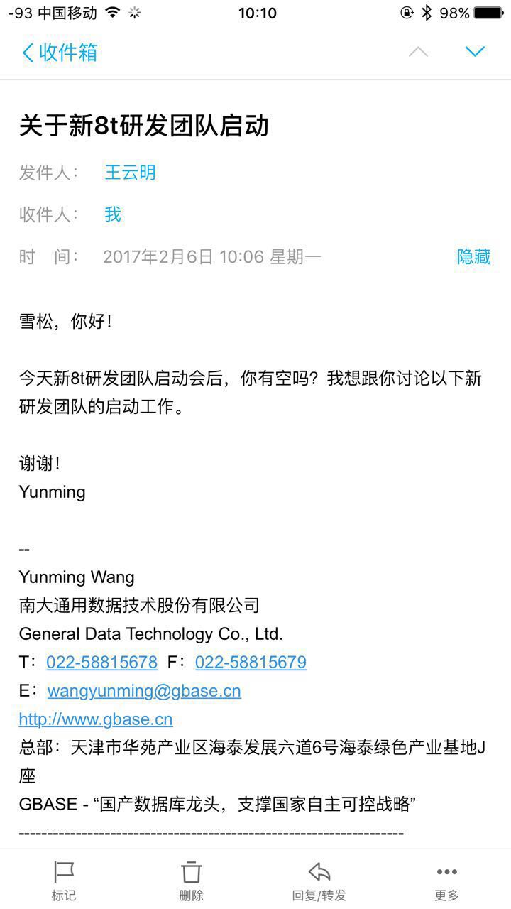
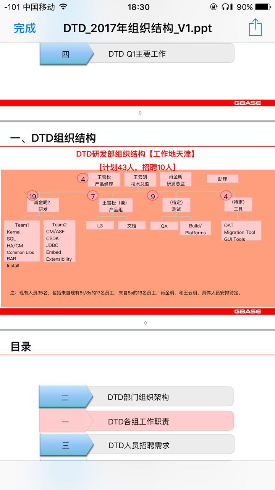
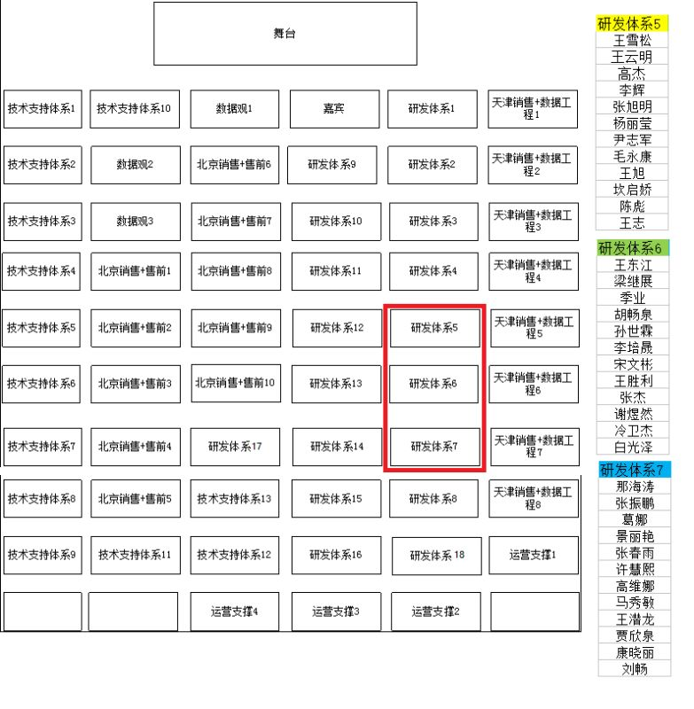
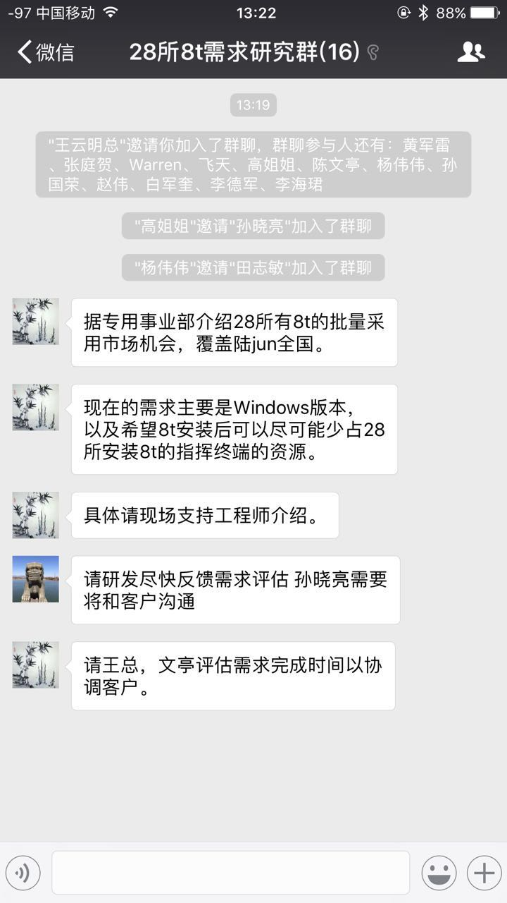
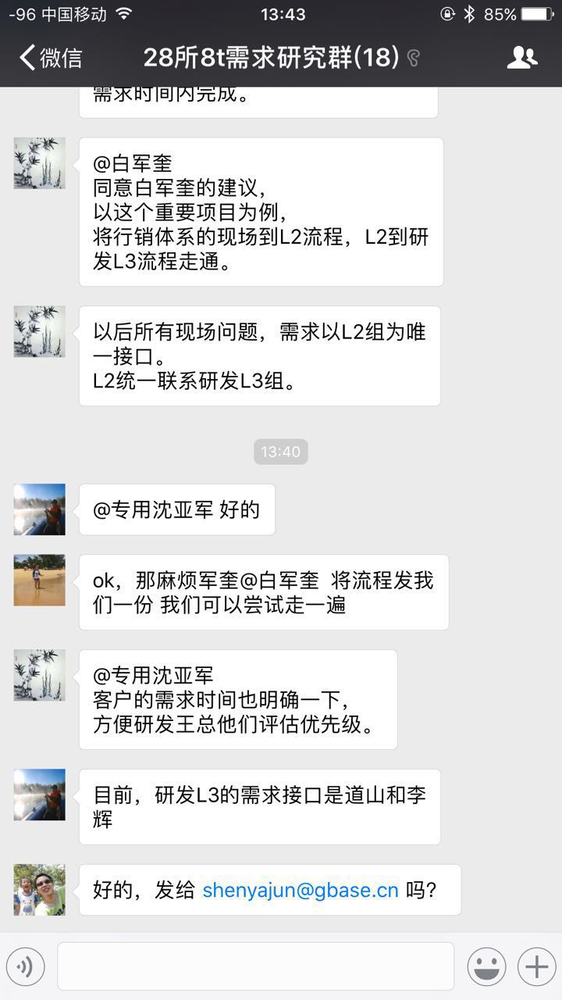
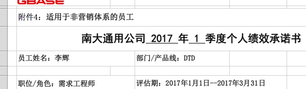
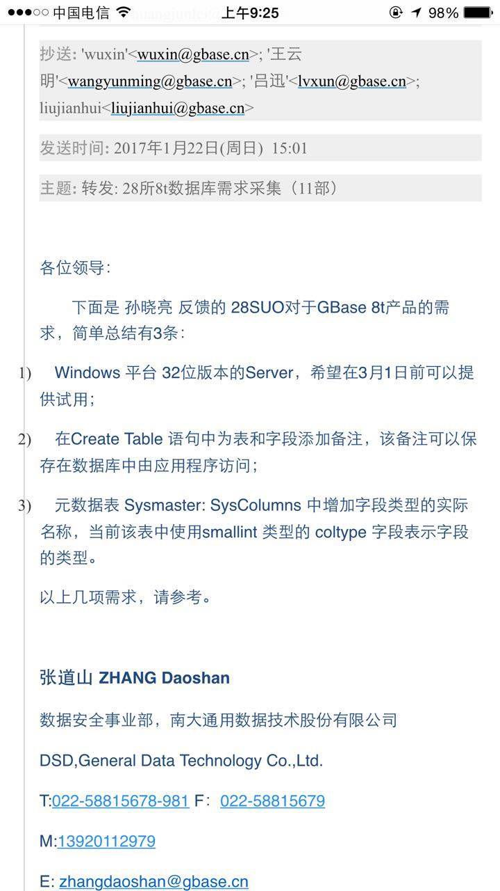
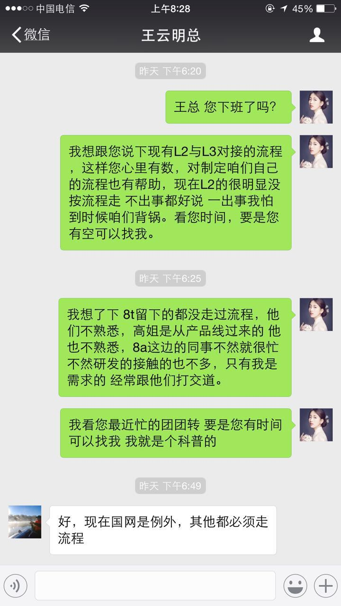

2017-02¶
2017-02-04¶
| 2017-02-04 09:10:12 | 我 | 你收一下邮件，把团建的填了发给我，他们上午就要 |
| 2017-02-04 09:11:29 | 你 | 正在填 |
| 2017-02-04 09:14:02 | 你 | 发给你了 |
| 2017-02-04 09:14:10 | 我 | 好 |
| 2017-02-04 09:15:27 | 你 | 现在是什么情况啊 |
| 2017-02-04 09:15:53 | 我 | 周一开会，正式公布了 |
| 2017-02-04 09:16:17 | 你 | 哦 开会我去吗 |
| 2017-02-04 09:16:18 | 我 | 现在就是有一个农行 OLTP 集群的测试项目 |
| 2017-02-04 09:16:23 | 我 | 当然去啦 |
| 2017-02-04 09:16:35 | 我 | 我不是给你发邮件了吗 |
| 2017-02-04 09:16:43 | 你 | 那这边交接啥的呢 |
| 2017-02-04 09:16:58 | 你 | 我脑子还没转过来呢 |
| 2017-02-04 09:17:03 | 我 | 你先准备一下，等通知 |
| 2017-02-04 09:17:09 | 你 | 恩 |
| 2017-02-04 09:21:44 | 你 | 你们现在还开站立会吗 |
| 2017-02-04 09:22:11 | 我 | 开 |
| 2017-02-04 09:29:35 | 我 | 昨天老田找洪越谈话了，谈了半个小时 |
| 2017-02-04 09:31:22 | 你 | 嗯，他还说要找我呢， |
| 2017-02-04 09:31:57 | 我 | 没准他还想留你呢 |
| 2017-02-04 09:33:32 | 你 | 没有，他就是说聊聊，临别赠言啥的 |
| 2017-02-04 09:34:02 | 我 | 嗯嗯 |
| 2017-02-04 09:53:23 | 我 | 老田去找番薯了[呲牙] |
| 2017-02-04 09:53:38 | 你 | 哦 |
| 2017-02-04 09:53:44 | 你 | 他没找你吗 |
| 2017-02-04 09:53:50 | 我 | 没有 |
| 2017-02-04 09:54:04 | 我 | 这会让老田去头疼吧 |
| 2017-02-04 10:02:07 | 我 | 今天你有事吗 |
| 2017-02-04 10:02:19 | 你 | 有个赵学庆的需求 |
| 2017-02-04 10:02:24 | 你 | 等着跟他联系联系 |
| 2017-02-04 10:02:36 | 我 | 呵呵 |
| 2017-02-04 10:02:54 | 我 | 这事该让洪越去做了 |
| 2017-02-04 10:03:02 | 我 | 等周一吧 |
| 2017-02-04 10:03:15 | 你 | 我今天弄弄 |
| 2017-02-04 10:03:26 | 你 | 同步工具开吗？ |
| 2017-02-04 10:03:41 | 我 | 等周一再说吧 |
| 2017-02-04 10:04:04 | 我 | 涉及到交接 |
| 2017-02-04 10:04:23 | 我 | 你那应该都准备好了吧 |
| 2017-02-04 10:05:21 | 你 | 准备好了 |
| 2017-02-04 10:05:34 | 我 | 嗯 |
| 2017-02-04 11:05:52 | 我 | 你咋啦 |
| 2017-02-04 11:06:00 | 你 | 我没事啊 |
| 2017-02-04 11:06:02 | 你 | 咋了 |
| 2017-02-04 11:06:40 | 我 | 看你好像不舒服 |
| 2017-02-04 11:06:50 | 你 | 没有 |
| 2017-02-04 11:07:19 | 我 | 好的 |
| 2017-02-04 11:34:06 | 你 | 干嘛呢 |
| 2017-02-04 11:34:10 | 你 | 一上午 |
| 2017-02-04 11:34:27 | 你 | 感觉还没从家里回来似的 |
| 2017-02-04 11:34:46 | 我 | 我在忙8t mpp |
| 2017-02-04 11:34:57 | 我 | 我看你今天状态不好 |
| 2017-02-04 11:36:21 | 你 | 快忙吧 |
| 2017-02-04 11:36:29 | 你 | 就是不怎么想说话 |
| 2017-02-04 11:40:22 | 我 | 嗯，中午睡一会吧 |
| 2017-02-04 13:43:04 | 我 | 你好点吗 |
| 2017-02-04 13:43:19 | 你 | 我本来就没事啊[呲牙] |
| 2017-02-04 13:43:20 | 你 | 好了 |
| 2017-02-04 13:44:01 | 我 | 是不是回家累着了 |
| 2017-02-04 13:44:56 | 你 | 反正没闲着 |
| 2017-02-04 13:46:41 | 你 | 你知道小孩会 认生 吧 |
| 2017-02-04 13:46:52 | 你 | 我感觉我现在跟你就有那么一点点 |
| 2017-02-04 13:46:55 | 我 | 知道呀 |
| 2017-02-04 13:46:58 | 你 | 不过一会就好了 |
| 2017-02-04 13:47:02 | 你 | 我现在已经好了 |
| 2017-02-04 13:47:03 | 我 | 为啥呀 |
| 2017-02-04 13:47:27 | 我 | 就因为一周没见？ |
| 2017-02-04 13:47:34 | 你 | 可能在家的时候 想的做的那一套 跟现在不一样 |
| 2017-02-04 13:47:49 | 你 | 状态没调整好啊 |
| 2017-02-04 13:48:05 | 你 | 这个需要非得说出来为什么么[呲牙] |
| 2017-02-04 13:48:11 | 你 | 我也不知道为什么 |
| 2017-02-04 13:48:14 | 我 | 不是很明白 |
| 2017-02-04 13:48:32 | 你 | ？ |
| 2017-02-04 13:48:48 | 我 | 不理解为啥会是两套 |
| 2017-02-04 13:49:32 | 你 | 我在家里是那种状态 |
| 2017-02-04 13:49:42 | 你 | 在公司跟在家里很不一样 |
| 2017-02-04 13:49:52 | 你 | 家里 我指的是唐山 |
| 2017-02-04 13:49:57 | 我 | 我知道 |
| 2017-02-04 13:50:22 | 我 | 我只是无法理解你在家里的状态 |
| 2017-02-04 13:51:12 | 你 | 我在家里 感觉就是随时随地都得发火 耍气那种 就是老是想发火 |
| 2017-02-04 13:51:21 | 你 | 主要是因为我爸妈老是吵吵 |
| 2017-02-04 13:51:37 | 我 | 哦 |
| 2017-02-04 13:51:41 | 我 | 明白了 |
| 2017-02-04 13:51:47 | 你 | 我要是耍气 我爸爸就老实点 |
| 2017-02-04 13:52:06 | 我 | 所以你的状态还没有变过来，还想发火？ |
| 2017-02-04 13:52:19 | 你 | 恩 应该是吧 |
| 2017-02-04 13:52:23 | 你 | 也不是 |
| 2017-02-04 13:52:46 | 你 | 发火主要是对我爸爸 |
| 2017-02-04 13:53:23 | 我 | 那 认生 又是怎么回事呢 |
| 2017-02-04 13:53:39 | 你 | 不知道 就是工作里边 弯弯绕太多 平时在家 就想干什么想说什么就干 就说 |
| 2017-02-04 13:54:22 | 我 | 好吧 |
| 2017-02-04 13:54:51 | 我 | 我从来没有见过你这种状态 |
| 2017-02-04 13:55:16 | 你 | 又发现新现象了吧 |
| 2017-02-04 13:55:17 | 你 | 哈哈 |
| 2017-02-04 13:55:23 | 我 | 是呗 |
| 2017-02-04 14:00:06 | 你 | 我去趟马姐那 |
| 2017-02-04 14:00:19 | 我 | [链接] 如何用正确的姿势打开 TDD？ |
| 2017-02-04 14:00:20 | 我 | 这篇你看看，应该有共鸣 |
| 2017-02-04 15:11:58 | 你 | 刚才范树磊问我组织架构变动的事了 |
| 2017-02-04 15:12:06 | 你 | 我说我可能跟你去8t |
| 2017-02-04 15:12:14 | 你 | 同步工具的事应该有别人负责 |
| 2017-02-04 15:12:19 | 我 | 嗯 |
| 2017-02-04 15:24:18 | 你 | 干啥呢 |
| 2017-02-04 15:24:25 | 你 | 感觉的你很忙啊 |
| 2017-02-04 15:24:31 | 我 | 给我儿子充值 |
| 2017-02-04 15:24:53 | 你 | 哼 |
| 2017-02-04 15:25:45 | 你 | |
| 2017-02-04 15:26:02 | 你 | 我过年给你发的视频是不是很好玩 |
| 2017-02-04 15:26:21 | 我 | 是呀，你们玩什么游戏呢 |
| 2017-02-04 15:47:12 | 你 | 咋了 |
| 2017-02-04 15:47:17 | 你 | 脸拉那么长 |
| 2017-02-04 15:47:29 | 我 | 遇到问题了 |
| 2017-02-04 15:47:40 | 我 | 装不上 RDB |
| 2017-02-04 15:47:45 | 你 | 别着急 |
| 2017-02-04 15:49:09 | 我 | 刚才光给我儿子折腾支付了 |
| 2017-02-04 15:49:26 | 你 | 折腾明白了吗 |
| 2017-02-04 15:49:28 | 我 | 他在香港，想开流量 |
| 2017-02-04 15:49:38 | 你 | 去香港干嘛了 |
| 2017-02-04 15:49:42 | 我 | 我最后让他用我的支付宝支付的 |
| 2017-02-04 15:49:52 | 我 | 他们昨天在深圳比赛，今天去香港玩 |
| 2017-02-04 15:50:21 | 你 | 哦 好吧 |
| 2017-02-04 15:50:27 | 我 | 我给你的那个文章你看了吗 |
| 2017-02-04 15:50:29 | 你 | 买啥好东西 |
| 2017-02-04 15:50:39 | 你 | 错了 是开流量了 |
| 2017-02-04 15:50:47 | 我 | 中间有一段关于需求的写的不错 |
| 2017-02-04 15:50:48 | 你 | TDD的没看呢 |
| 2017-02-04 15:50:54 | 你 | 我看看 |
| 2017-02-04 15:51:04 | 我 | 嗯嗯 |
| 2017-02-04 16:20:46 | 我 | 你热吗 |
| 2017-02-04 16:20:53 | 你 | 不热啊 |
| 2017-02-04 16:20:53 | 我 | 有点脸红 |
| 2017-02-04 16:21:05 | 你 | 是？ |
| 2017-02-04 16:21:07 | 你 | 没事 |
| 2017-02-04 16:21:12 | 你 | 不热 |
| 2017-02-04 16:21:17 | 你 | 你们整rdb干啥 |
| 2017-02-04 16:21:37 | 我 | 8t的mpp呀 |
| 2017-02-04 16:21:52 | 我 | 武总年前布置的任务 |
| 2017-02-04 16:22:10 | 我 | 周二开会要碰方案 |
| 2017-02-04 16:22:13 | 你 | 要在rdb上改吗 |
| 2017-02-04 16:22:17 | 我 | 是的 |
| 2017-02-04 16:22:19 | 你 | 周二就开会啊 |
| 2017-02-04 16:22:23 | 我 | 是 |
| 2017-02-04 16:22:26 | 你 | 好吧 |
| 2017-02-04 16:22:30 | 我 | 可惜你来得晚 |
| 2017-02-04 16:22:40 | 我 | 不然你可以一起干了 |
| 2017-02-04 16:24:34 | 你 | 那我得早生好几年 |
| 2017-02-04 16:24:38 | 你 | 岂不是比现在老 |
| 2017-02-04 16:24:43 | 我 | 哈哈 |
| 2017-02-04 16:25:00 | 你 | 杨丽颖比我老两岁 |
| 2017-02-04 16:25:04 | 我 | 是 |
| 2017-02-04 16:25:07 | 你 | 我还不如年轻着呢 |
| 2017-02-04 16:25:14 | 我 | 是 |
| 2017-02-04 16:25:32 | 你 | 老田开始安排调整后的情况了 |
| 2017-02-04 16:25:39 | 我 | 嗯 |
| 2017-02-04 16:25:48 | 你 | 看来要重视洪越了 等咱们过去 就不用理这茬了 |
| 2017-02-04 16:36:42 | 我 | 嗯嗯 |
| 2017-02-04 17:10:23 | 我 | 唉，累死了 |
| 2017-02-04 17:10:47 | 你 | 歇会 |
| 2017-02-04 17:13:09 | 我 | 忙得我都没空和你聊天了 |
| 2017-02-04 17:13:28 | 你 | 恩 到你忙的时候了 |
| 2017-02-04 17:13:32 | 你 | 最近都会很忙 |
| 2017-02-04 17:13:59 | 我 | 唉，郁闷 |
| 2017-02-04 17:14:26 | 你 | 咋了 |
| 2017-02-04 17:14:42 | 我 | 都是破烂事 |
| 2017-02-04 17:14:59 | 我 | 今天有啥新闻吗 |
| 2017-02-04 17:15:06 | 你 | 没有啊 |
| 2017-02-04 17:15:21 | 你 | 刚才王洪越让我写一个同步工具功能介绍的PPT |
| 2017-02-04 17:15:25 | 你 | 说做宣传用 |
| 2017-02-04 17:15:36 | 你 | 做宣传的为啥我写啊 |
| 2017-02-04 17:15:47 | 我 | 就是呀，我也奇怪呢 |
| 2017-02-04 17:16:04 | 你 | 不知道 |
| 2017-02-04 17:16:31 | 我 | 他也没说谁要吗 |
| 2017-02-04 17:16:50 | 你 | 没有 |
| 2017-02-04 17:16:55 | 你 | 他没说 我也没追着问 |
| 2017-02-04 17:17:30 | 我 | 那你就抄一抄总结报告就得了 |
| 2017-02-04 17:17:42 | 你 | 我自己写吧 |
| 2017-02-04 17:18:33 | 我 | 也没准是年会上用的 |
| 2017-02-04 17:18:41 | 你 | ppt |
| 2017-02-04 17:19:04 | 我 | 哦 |
| 2017-02-04 17:34:49 | 你 | 你干嘛呢 |
| 2017-02-04 17:35:17 | 我 | 没事干呀 |
| 2017-02-04 17:35:32 | 你 | 恩 |
| 2017-02-04 17:35:39 | 你 | 咱们什么时候开月会 |
| 2017-02-04 17:36:07 | 我 | 16号吧 |
| 2017-02-04 17:36:29 | 你 | 哦 |
| 2017-02-04 17:42:10 | 我 | 你在写 PPT 吗 |
| 2017-02-04 17:42:18 | 你 | 恩 |
| 2017-02-04 18:01:47 | 我 | 你还是没缓过来吗 |
| 2017-02-04 18:02:41 | 你 | ？ |
| 2017-02-04 18:02:54 | 我 | 看你还是没有精神 |
| 2017-02-04 18:03:21 | 我 | 不像平时那么活泼了 |
| 2017-02-04 18:03:40 | 你 | 不怎么想说话 |
| 2017-02-04 18:04:05 | 我 | 是心情不好还是身体不好 |
| 2017-02-04 18:04:35 | 你 | 不知道说啥 |
| 2017-02-04 18:04:36 | 你 | 说啥 |
| 2017-02-04 18:05:23 | 我 | 你好像这一天都挺蔫的 |
| 2017-02-04 18:05:46 | 我 | 感觉好像受到什么打击似的 |
| 2017-02-04 18:06:01 | 你 | 是？ |
| 2017-02-04 18:06:04 | 你 | 不知道说啥 |
| 2017-02-04 18:06:10 | 你 | 也没什么互动 |
| 2017-02-04 18:06:24 | 我 | 唉 |
| 2017-02-04 18:06:36 | 你 | 你好没见到王云明呢吗 |
| 2017-02-04 18:06:42 | 我 | 没呢 |
| 2017-02-04 18:07:16 | 你 | 这个人可真是的 |
| 2017-02-04 18:07:34 | 我 | 唉，等着吧 |
| 2017-02-04 18:07:51 | 我 | 应该没有什么变化了 |
| 2017-02-04 18:08:13 | 我 | 今天老陈来找我说了一下 |
| 2017-02-04 18:08:14 | 你 | 恩 |
| 2017-02-04 18:08:20 | 你 | 说啥 |
| 2017-02-04 18:08:43 | 我 | 老陈向他建议我做产品经理，肖做研发主管 |
| 2017-02-04 18:09:01 | 我 | 不过最后还是得看王的 |
| 2017-02-04 18:09:06 | 你 | 恩 |
| 2017-02-04 18:09:17 | 你 | 其实你本来是要做研发主管的对吧 |
| 2017-02-04 18:09:22 | 我 | 是的 |
| 2017-02-04 18:09:37 | 你 | 就这样吧 |
| 2017-02-04 18:10:04 | 我 | 8t的形势比我想的还要糟糕 |
| 2017-02-04 18:10:13 | 你 | 怎么了 |
| 2017-02-04 18:10:36 | 我 | 你要有心理准备，过去可能会比较累 |
| 2017-02-04 18:10:46 | 你 | 恩 |
| 2017-02-04 18:10:56 | 你 | 累还好吧 |
| 2017-02-04 18:11:09 | 你 | 就是别出现别的叉子 |
| 2017-02-04 18:11:22 | 我 | 应该不会了 |
| 2017-02-04 18:13:27 | 你 | 一会我走了啊 |
| 2017-02-04 18:13:48 | 我 | 嗯，你开车吗 |
| 2017-02-04 18:13:53 | 你 | 开了 |
| 2017-02-04 18:14:04 | 我 | 早点回去，多休息 |
| 2017-02-04 18:14:09 | 你 | 恩 |
| 2017-02-04 18:14:37 | 我 | 从周一就是新的开始了 |
| 2017-02-04 18:14:45 | 你 | 是 |
{kind=link}
2017-02-06¶
| 2017-02-06 08:33:32 | 我 | 早呀 |
| 2017-02-06 08:33:37 | 你 | 我感冒了 |
| 2017-02-06 08:33:41 | 你 | 早 |
| 2017-02-06 08:33:45 | 我 | 啊 |
| 2017-02-06 08:33:47 | 你 | 八点就到了 |
| 2017-02-06 08:34:28 | 我 | 吃药了吗 |
| 2017-02-06 08:35:23 | 你 | 昨天晚上喝的板蓝根 今早上又冲了一袋 还没来得及喝 但是应该已经感冒了 |
| 2017-02-06 08:35:32 | 你 | 你们明天碰方案是吗 |
| 2017-02-06 08:35:41 | 我 | 是 |
| 2017-02-06 08:35:59 | 我 | 有康泰克之类的吗 |
| 2017-02-06 08:36:05 | 你 | 家里有好多 |
| 2017-02-06 08:36:14 | 你 | 等晚上回去吃吧 |
| 2017-02-06 08:36:44 | 我 | 多喝水吧 |
| 2017-02-06 08:37:08 | 你 | 是 |
| 2017-02-06 09:47:56 | 我 | 你刚才看我是有话要说吗 |
| 2017-02-06 09:48:06 | 你 | 没有 |
| 2017-02-06 09:48:11 | 你 | 随便看看 |
| 2017-02-06 09:48:20 | 我 | 哦 |
| 2017-02-06 10:09:08 | 你 | 你很紧张吗 |
| 2017-02-06 10:09:20 | 我 | 是 |
| 2017-02-06 10:09:27 | 你 | 为啥紧张啊 |
| 2017-02-06 10:09:35 | 你 | 用你发言吗 |
| 2017-02-06 10:09:39 | 你 | 我看你很紧张啊 |
| 2017-02-06 10:10:18 | 我 |  |
| 2017-02-06 10:10:44 | 我 | 他要找我单独谈 |
| 2017-02-06 10:10:50 | 你 | 恩 |
| 2017-02-06 10:10:51 | 你 | 没事 |
| 2017-02-06 10:10:54 | 你 | 别紧张 |
| 2017-02-06 10:10:58 | 我 | 不知道会不会喊别人 |
| 2017-02-06 10:11:13 | 你 | 没想好就别说话 |
| 2017-02-06 10:13:19 | 我 | 其他的我都无所谓，关键还是你的安排 |
| 2017-02-06 10:13:59 | 你 | 别那么紧张 |
| 2017-02-06 10:14:02 | 你 | 放轻松 |
| 2017-02-06 10:14:04 | 你 | 没事没事的 |
| 2017-02-06 10:14:15 | 你 | 他没准根本就不管 |
| 2017-02-06 10:27:37 | 你 | 王云明来了 |
| 2017-02-06 12:18:10 | 你 | 吃饭去了吗 |
| 2017-02-06 12:18:31 | 我 | 是的 |
| 2017-02-06 14:07:47 | 我 | 搞定了，我做产品经理，你跟着我 |
| 2017-02-06 14:08:07 | 你 | 太好了 |
| 2017-02-06 14:08:12 | 你 | 我都不敢给你发微信 |
| 2017-02-06 14:09:59 | 你 | 你们2：30开会是吗 |
| 2017-02-06 14:18:11 | 我 | 是的，今天比较忙 |
| 2017-02-06 14:18:34 | 你 | en |
| 2017-02-06 14:18:37 | 你 | 都是大事 |
| 2017-02-06 14:18:40 | 你 | 先忙一段 |
| 2017-02-06 14:18:48 | 我 | 是 |
| 2017-02-06 14:19:09 | 我 | 我今天和王总说还带了一个需求，他特别高兴 |
| 2017-02-06 14:19:33 | 我 | 我过去第一件事情是建立流程 |
| 2017-02-06 14:19:34 | 你 | 上午赵总说16个人 |
| 2017-02-06 14:19:38 | 你 | 算上我是17个吧 |
| 2017-02-06 14:19:43 | 我 | 对 |
| 2017-02-06 14:19:50 | 我 | 他们说的只是一组 |
| 2017-02-06 14:19:57 | 你 | 恩 |
| 2017-02-06 14:20:04 | 你 | 反正老杨答应我了 |
| 2017-02-06 14:20:25 | 你 | 看王云明说 他也是L3的 |
| 2017-02-06 14:20:38 | 我 | 嗯 |
| 2017-02-06 16:12:17 | 你 | 快两个小时了 亲 |
| 2017-02-06 16:12:52 | 我 | 唉，刚刚开始讨论 |
| 2017-02-06 16:12:59 | 我 | 早呢 |
| 2017-02-06 16:13:02 | 你 | what？？？ |
| 2017-02-06 16:13:42 | 我 | 各种方案细节讨论 |
| 2017-02-06 16:13:48 | 我 | 😓 |
| 2017-02-06 16:14:04 | 你 | 讨论吧 讨论重要 |
| 2017-02-06 16:19:25 | 你 | 能聊天吗 |
| 2017-02-06 16:20:31 | 我 | 不能，别着急 |
| 2017-02-06 16:20:51 | 你 | 没事 我只是随便问问 |
| 2017-02-06 16:42:44 | 我 | [抓狂][抓狂][抓狂][抓狂]我要疯了 |
| 2017-02-06 16:43:02 | 你 | 咋了这是 |
| 2017-02-06 16:43:13 | 你 | 先冷静冷静 |
| 2017-02-06 16:43:21 | 我 | 让我负责mpp的开发 |
| 2017-02-06 16:43:29 | 我 | 向武总汇报 |
| 2017-02-06 16:43:43 | 你 | 谁说的 |
| 2017-02-06 16:43:52 | 你 | 这是好事啊 |
| 2017-02-06 16:44:02 | 我 | 武总定的 |
| 2017-02-06 16:44:13 | 你 | 真的啊 |
| 2017-02-06 16:44:23 | 我 | 是 |
| 2017-02-06 16:44:32 | 你 | 这是好事 |
| 2017-02-06 16:44:44 | 你 | 你就费费心思呗 |
| 2017-02-06 16:45:29 | 你 | 虽然我知道你不愿意干这些 |
| 2017-02-06 16:45:36 | 你 | 就算是为了我和你吧 |
| 2017-02-06 16:45:53 | 你 | 你手中的权利越大 对我对你越有好处 |
| 2017-02-06 16:46:41 | 我 | 嗯嗯 |
| 2017-02-06 16:47:11 | 你 | 而且武总订的 这样可以摆脱很多中间层 |
| 2017-02-06 17:22:48 | 你 | 我看着你就想笑 |
| 2017-02-06 17:24:00 | 我 | 为啥想笑呀 |
| 2017-02-06 17:24:10 | 你 | 我觉得旭明跟个大傻子似的 |
| 2017-02-06 17:24:25 | 你 | 没准他还想我跟个大傻子似的呢 |
| 2017-02-06 17:24:48 | 你 | 8t mpp 是农行的需求是吧 |
| 2017-02-06 17:24:59 | 我 | 是的 |
| 2017-02-06 17:28:09 | 你 | 你最近是不是都会很忙 |
| 2017-02-06 17:28:32 | 我 | 是的，会非常忙 |
| 2017-02-06 17:29:13 | 你 | 好吧 |
| 2017-02-06 17:29:16 | 你 | 知道了 |
| 2017-02-06 17:29:29 | 我 | 估计会像领导一样忙 |
| 2017-02-06 17:29:40 | 你 | 啊？？？ |
| 2017-02-06 17:29:42 | 你 | 好吧 |
| 2017-02-06 17:34:46 | 我 | 有个问题想和你商量一下 |
| 2017-02-06 17:34:54 | 你 | 说吧 |
| 2017-02-06 17:35:25 | 我 | 8t mpp 这件事情现在是安排我负责，我想只负责研发 |
| 2017-02-06 17:35:39 | 你 | 恩 |
| 2017-02-06 17:35:49 | 你 | 那其他的呢 |
| 2017-02-06 17:36:07 | 我 | 其他我想让别人管 |
| 2017-02-06 17:36:16 | 我 | 有一个比较麻烦，就是需求 |
| 2017-02-06 17:36:30 | 我 | 老陈一个劲的让我要洪越 |
| 2017-02-06 17:36:41 | 我 | 我还没有想好 |
| 2017-02-06 17:36:50 | 你 | 8t mpp这部分相当于一个专项吗 |
| 2017-02-06 17:37:01 | 你 | 跟同步工具似的 |
| 2017-02-06 17:37:16 | 我 | 是的 |
| 2017-02-06 17:37:24 | 你 | 除了现在需求组这3个人 也没别人了 |
| 2017-02-06 17:37:41 | 你 | 你的想法说说 |
| 2017-02-06 17:37:44 | 我 | 我担心的是，如果这次做好了，会不会让洪越过来 |
| 2017-02-06 17:38:04 | 我 | 这次的需求不适合你去做 |
| 2017-02-06 17:38:08 | 你 | 恩 |
| 2017-02-06 17:38:20 | 我 | 我想让张绍勇牵头需求 |
| 2017-02-06 17:38:48 | 我 | 老陈就说让张绍勇要洪越 |
| 2017-02-06 17:39:17 | 我 | 从我心里讲我是不想要他 |
| 2017-02-06 17:39:32 | 你 | 这次老陈不参与是吗 |
| 2017-02-06 17:39:33 | 我 | 主要还是怕会和你有冲突 |
| 2017-02-06 17:39:47 | 你 | 没事吧 |
| 2017-02-06 17:40:00 | 你 | 反正我归你管的话 跟他就没有关系了 |
| 2017-02-06 17:40:13 | 我 | 他是不参与，但是我还是需要咨询他的意见 |
| 2017-02-06 17:40:16 | 你 | 专项的话 就这一个项目跟他碰头呗 |
| 2017-02-06 17:40:25 | 你 | 那你就叫他呗 |
| 2017-02-06 17:40:26 | 你 | 没事的 |
| 2017-02-06 17:40:28 | 你 | 真的 |
| 2017-02-06 17:40:52 | 我 | 行，那我回来先找张绍勇去 |
| 2017-02-06 17:40:56 | 你 | 你记得防着他就行 |
| 2017-02-06 17:41:01 | 你 | 嗯嗯 没事 |
| 2017-02-06 17:41:04 | 你 | 真的没事 |
| 2017-02-06 17:42:15 | 你 | 退一万步说 即使将来做得好他留下了，他也得在你手下 |
| 2017-02-06 17:42:27 | 你 | 先把这事做成再说 |
| 2017-02-06 17:42:37 | 我 | 那倒是 |
| 2017-02-06 17:42:56 | 你 | 毕竟是你跟武总接触的第一个项目 对你来说很重要啊 |
| 2017-02-06 17:43:22 | 我 | 嗯 |
| 2017-02-06 17:43:45 | 你 | 那已经有一个需求过来了 你再要洪越 人家给么 |
| 2017-02-06 17:44:06 | 你 | 这个比较紧急 |
| 2017-02-06 17:44:17 | 我 | 那我就不管了， 我找武总要人 |
| 2017-02-06 17:44:27 | 你 | 是 |
| 2017-02-06 17:45:11 | 我 | 我去找一下老陈，问问他们那边的人员能力 |
| 2017-02-06 18:12:51 | 我 | 你好点吗 |
| 2017-02-06 18:13:02 | 你 | 我没事 就是普通的感冒 |
| 2017-02-06 18:13:31 | 我 | 你几点回家 |
| 2017-02-06 18:13:46 | 你 | 给你整完就回去 |
| 2017-02-06 18:14:14 | 我 | 我过去和你说会话好不 |
| 2017-02-06 18:14:21 | 你 | 当然好了 |
| 2017-02-06 18:31:15 | 我 |  |
{kind=link}
{kind=link}
2017-02-07¶
| 2017-02-07 09:15:56 | 你 | 老田真让人恶心 |
| 2017-02-07 09:16:13 | 你 | 你看他现在对王洪越的态度 |
| 2017-02-07 09:16:25 | 我 | 是 |
| 2017-02-07 09:53:44 | 我 | 忙死我了 |
| 2017-02-07 09:53:50 | 你 | 恩 |
| 2017-02-07 09:53:54 | 你 | 大家都很忙 |
| 2017-02-07 09:53:59 | 你 | 别着急 |
| 2017-02-07 09:54:01 | 你 | 慢慢来 |
| 2017-02-07 09:54:29 | 我 | 唉 |
| 2017-02-07 09:54:50 | 你 | 你干啥去了 |
| 2017-02-07 09:54:56 | 你 | 回来了 |
| 2017-02-07 09:55:05 | 你 | 有啥能帮你的么 |
| 2017-02-07 09:55:25 | 我 | 你帮不上忙 |
| 2017-02-07 09:55:29 | 你 | 主要是这个mpp的项目 |
| 2017-02-07 09:55:45 | 我 | 我现在是组建团队 |
| 2017-02-07 09:56:02 | 我 | 需要去公司里找人 |
| 2017-02-07 09:56:07 | 你 | 嗯嗯 |
| 2017-02-07 09:57:17 | 你 | 感觉你还在评估阶段 |
| 2017-02-07 09:58:38 | 我 | 是，很多东西不清楚 |
| 2017-02-07 10:00:34 | 我 | 多喝水，亲 |
| 2017-02-07 10:02:15 | 你 | 你干啥呢 |
| 2017-02-07 10:02:29 | 我 | 等着张绍勇呢 |
| 2017-02-07 10:02:34 | 我 | 顺便看看你 |
| 2017-02-07 10:02:59 | 你 | 跟他要洪越么？ |
| 2017-02-07 10:03:21 | 我 | 不是，让他帮我去和农行交流 |
| 2017-02-07 10:04:06 | 你 | 他这么忙 你不能全指着他啊 要有planB |
| 2017-02-07 10:04:37 | 我 | 我让他找一个人，他看谁合适就找谁 |
| 2017-02-07 10:04:57 | 我 | 而且昨天武总也说过让老张干 |
| 2017-02-07 10:04:58 | 你 | 好 |
| 2017-02-07 10:05:08 | 你 | 恩 |
| 2017-02-07 10:05:27 | 你 | 唉 这事真难办 可苦了你了 |
| 2017-02-07 10:08:26 | 我 | 你干啥呢 |
| 2017-02-07 10:08:43 | 你 | 我看8t的材料呢 一点看不进去 |
| 2017-02-07 10:08:52 | 你 | 在想你现在都有那些事要干 |
| 2017-02-07 10:09:04 | 我 | 哈哈 |
| 2017-02-07 10:09:31 | 我 | 别想了 |
| 2017-02-07 10:15:05 | 我 | 咱俩要很长时间没空聊天了 |
| 2017-02-07 10:15:14 | 你 | 没事 |
| 2017-02-07 11:14:56 | 你 | 我在装8t呢 |
| 2017-02-07 11:14:59 | 你 | 破玩意 |
| 2017-02-07 11:15:19 | 我 | [动画表情] |
| 2017-02-07 11:15:27 | 你 | 你笑啥啊 |
| 2017-02-07 11:15:46 | 我 | 笑8t |
| 2017-02-07 11:16:04 | 我 | 月会 |
| 2017-02-07 11:17:39 | 你 | 不是月会 |
| 2017-02-07 11:18:13 | 你 | 周四晚上 |
| 2017-02-07 11:18:24 | 我 | 哦，有可能是h3c |
| 2017-02-07 11:55:37 | 你 | 你早上刷半天微博 |
| 2017-02-07 11:55:42 | 你 | 没找我聊天 |
| 2017-02-07 11:57:15 | 我 | 亲，我没刷微博，是在想事情 |
| 2017-02-07 11:57:30 | 你 | 想好了吗 |
| 2017-02-07 11:57:35 | 你 | 真是累心 |
| 2017-02-07 11:57:46 | 我 | 是 |
| 2017-02-07 11:58:07 | 你 | 唉 |
| 2017-02-07 11:58:09 | 我 | 我现在有四件大事 |
| 2017-02-07 11:58:48 | 我 | 每件都很头疼 |
| 2017-02-07 12:15:10 | 你 | 哈哈 |
| 2017-02-07 12:15:16 | 你 | 我吃完饭了 |
| 2017-02-07 12:15:48 | 我 | 嗯嗯，我也吃完了 |
| 2017-02-07 12:33:00 | 我 | 你不睡会吗 |
| 2017-02-07 12:38:31 | 你 | 还不怎么想睡 |
| 2017-02-07 12:38:43 | 你 | 我今天要把8t装起来 |
| 2017-02-07 12:39:02 | 我 | 下午再说吧，你感冒了，多休息 |
| 2017-02-07 14:06:17 | 你 | 130223198811032649 |
| 2017-02-07 14:59:56 | 我 | 😁，心情愉快 |
| 2017-02-07 15:00:02 | 你 | 啥事 |
| 2017-02-07 15:00:16 | 我 | 刚才去找老张了，他答应帮我 |
| 2017-02-07 15:00:23 | 你 | 哦 哦 |
| 2017-02-07 15:00:26 | 你 | 不错 |
| 2017-02-07 15:00:33 | 我 | 而且他不用洪越 |
| 2017-02-07 15:00:39 | 你 | 真的啊 |
| 2017-02-07 15:00:45 | 你 | 真不错 |
| 2017-02-07 15:00:50 | 我 | 是，他用裴斐 |
| 2017-02-07 15:00:53 | 我 | 这样最好 |
| 2017-02-07 15:22:01 | 我 | 亲，我没啥事了 |
| 2017-02-07 15:22:15 | 你 | 是吗 |
| 2017-02-07 15:22:26 | 你 | 你的PBC是跟王云明签吧 |
| 2017-02-07 15:22:41 | 我 | 应该是 |
| 2017-02-07 15:22:56 | 我 | 还不知道怎么签呢 |
| 2017-02-07 15:23:01 | 你 | 真晕 |
| 2017-02-07 15:23:06 | 你 | 这些事都敢一起了 |
| 2017-02-07 15:23:12 | 你 | 王云明最近玩啥呢 |
| 2017-02-07 15:23:16 | 你 | 也没见他找你 |
| 2017-02-07 15:23:21 | 我 | 不知道 |
| 2017-02-07 15:23:40 | 我 | 估计他还不习惯公司的文化呢 |
| 2017-02-07 15:23:51 | 你 | 那更应该多沟通 |
| 2017-02-07 15:23:56 | 你 | 不知道人家干啥呢 |
| 2017-02-07 15:24:19 | 我 | 他可能不关心这些 |
| 2017-02-07 15:29:09 | 我 | 你的8t 装好了吗 |
| 2017-02-07 15:29:28 | 你 | 没有 |
| 2017-02-07 15:29:34 | 你 | 我觉得我装不上了 |
| 2017-02-07 15:29:43 | 我 | 啊，不会吧 |
| 2017-02-07 15:29:53 | 你 | 他不关心这些 他关心什么 |
| 2017-02-07 15:30:06 | 我 | 他关心技术 |
| 2017-02-07 15:30:51 | 我 | 你忙吧，我打扰你了 |
| 2017-02-07 15:31:51 | 你 | 没有啊 |
| 2017-02-07 15:32:01 | 你 | 你不是应该很多事吗 |
| 2017-02-07 15:32:25 | 我 | 现在没事，等待会让开会呢 |
| 2017-02-07 15:33:47 | 你 | 你找到人了 |
| 2017-02-07 15:33:56 | 你 | 给武总的邮件写了吗 |
| 2017-02-07 15:34:01 | 你 | 评估的怎么样了 |
| 2017-02-07 15:34:24 | 我 | 这些现在都不着急，等待会武总开启动会 |
| 2017-02-07 15:34:41 | 你 | 哦 |
| 2017-02-07 15:34:43 | 你 | 好吧 |
| 2017-02-07 15:37:59 | 我 | 刚才李迎找我，让我改改同步工具的获奖词，说写的太多，改成两行。 |
| 2017-02-07 15:38:09 | 我 | 我说我不管了，让她找老田 |
| 2017-02-07 15:38:16 | 你 | 恩 |
| 2017-02-07 15:38:33 | 你 | 可以 |
| 2017-02-07 15:39:08 | 你 | 那你接下来就跟裴斐说需求是吗 |
| 2017-02-07 15:39:34 | 我 | 不是呀，是他们去收集需求 |
| 2017-02-07 15:39:40 | 我 | 我就专心做研发 |
| 2017-02-07 15:40:42 | 你 | 恩 |
| 2017-02-07 16:17:56 | 你 | 陈总果然比较喜欢洪越 |
| 2017-02-07 16:18:02 | 你 | 老陈 |
| 2017-02-07 16:18:05 | 我 | 没错 |
| 2017-02-07 16:18:16 | 我 | 有两个不太好的消息 |
| 2017-02-07 16:18:27 | 你 | 一直叫帅哥帅哥的，阿呸 |
| 2017-02-07 16:18:30 | 你 | 咋了 |
| 2017-02-07 16:18:33 | 你 | 说说 |
| 2017-02-07 16:18:42 | 我 | 一个是肖不来了，一个是那边的那个需求要辞职 |
| 2017-02-07 16:18:52 | 你 | 哦哦 |
| 2017-02-07 16:19:02 | 你 | 肖不来了？ |
| 2017-02-07 16:19:05 | 我 | 对 |
| 2017-02-07 16:19:12 | 我 | 这个变动非常大 |
| 2017-02-07 16:19:20 | 你 | 你还说一两年呢，结果根本没来 |
| 2017-02-07 16:19:30 | 你 | 你怕需求少 |
| 2017-02-07 16:19:35 | 你 | 会让洪越过去 |
| 2017-02-07 16:19:44 | 你 | 为啥是不好的消息 |
| 2017-02-07 16:19:45 | 我 | 应该不会，怕你太累 |
| 2017-02-07 16:20:06 | 你 | 就是怕这个吗？ |
| 2017-02-07 16:20:26 | 我 | 是呀 |
| 2017-02-07 16:20:39 | 你 | 还好吧 |
| 2017-02-07 16:21:11 | 你 | 那你们的架构又得大变了 |
| 2017-02-07 16:21:30 | 我 | 是的，越来越不好 |
| 2017-02-07 16:21:53 | 你 | 我觉得他不来也是好事 |
| 2017-02-07 16:22:35 | 我 | 关键研发谁管 |
| 2017-02-07 16:23:00 | 你 | 王云明呗 |
| 2017-02-07 16:24:55 | 我 | 我怕他安排我 |
| 2017-02-07 16:25:20 | 你 | 唉 |
| 2017-02-07 16:25:23 | 你 | 真费劲 |
| 2017-02-07 16:25:32 | 你 | 让旭明上 |
| 2017-02-07 16:25:58 | 我 | 不可能的 |
| 2017-02-07 16:30:56 | 我 | 我 去找一下王总 |
| 2017-02-07 16:31:08 | 你 | 说说架构的事吗 |
| 2017-02-07 16:31:11 | 我 | 是 |
| 2017-02-07 16:31:15 | 你 | 好 |
| 2017-02-07 16:44:32 | 我 | 果然让我带研发 |
| 2017-02-07 16:44:47 | 你 | 那产品呢 |
| 2017-02-07 16:44:56 | 你 | 他带？？？？ |
| 2017-02-07 16:45:00 | 我 | 我先去开会 |
| 2017-02-07 16:45:11 | 你 | 好吧 |
| 2017-02-07 16:50:01 | 我 | 我去争取，别着急 |
| 2017-02-07 16:50:16 | 你 | 不着急 |
2017-02-08¶
{kind=link}
2017-02-09¶
| 2017-02-09 08:27:08 | 你 | 早啊 |
| 2017-02-09 08:27:25 | 我 | 嗯，封闭呢 |
| 2017-02-09 08:27:35 | 你 | 啥？ |
| 2017-02-09 08:27:39 | 我 | 你昨天几点回来的 |
| 2017-02-09 08:27:46 | 你 | 9点半吧 |
| 2017-02-09 08:27:47 | 我 | mpp 封闭呀，996 |
| 2017-02-09 08:27:55 | 你 | 从今天开始吗 |
| 2017-02-09 08:27:58 | 我 | 这么晚 |
| 2017-02-09 08:28:05 | 我 | 就算吧 |
| 2017-02-09 08:28:16 | 你 | 哦 |
| 2017-02-09 08:28:18 | 你 | 好吧 |
| 2017-02-09 08:28:43 | 我 | 我昨天看你没走，一直等你呢 |
| 2017-02-09 08:29:42 | 你 | 你不知道我去打球吗 |
| 2017-02-09 08:29:59 | 我 | 啊，不知道呀 |
| 2017-02-09 08:30:08 | 我 | 你不是去找人了吗 |
| 2017-02-09 08:30:09 | 你 | 哦哦 我去打球了 |
| 2017-02-09 08:30:16 | 我 | 😁 |
| 2017-02-09 08:30:31 | 你 | 我找增哥去了 7：00回来的 然后就去打球了 9点后来的 |
| 2017-02-09 08:34:34 | 我 | 哦，应该是我去打电话的时候 |
| 2017-02-09 08:36:36 | 你 | 恩 |
| 2017-02-09 08:36:41 | 我 | 你的事情已经折腾好几天了 |
| 2017-02-09 08:36:55 | 我 | 老陈最可恨了 |
| 2017-02-09 08:37:01 | 你 | 咋了 |
| 2017-02-09 08:37:04 | 我 | 老是说要洪越 |
| 2017-02-09 08:37:14 | 你 | 是 |
| 2017-02-09 08:37:21 | 我 | 王总都动心了，想拿你换 |
| 2017-02-09 08:37:26 | 你 | 啊 |
| 2017-02-09 08:37:30 | 你 | 哈哈 |
| 2017-02-09 08:37:56 | 我 | 我苦口婆心才劝动 |
| 2017-02-09 08:37:59 | 你 | 唉 |
| 2017-02-09 08:38:15 | 我 | 今天你先和谢去交接国网的需求 |
| 2017-02-09 08:38:23 | 你 | 我怎么每次都这么不得脸 |
| 2017-02-09 08:38:26 | 你 | 恩 |
| 2017-02-09 08:38:38 | 我 | 关键就是老陈 |
| 2017-02-09 08:38:47 | 我 | 老是说洪越有多好 |
| 2017-02-09 08:38:54 | 你 | 不是这个人 就是那个人呗 |
| 2017-02-09 08:39:01 | 我 | 还说“你们不要我就去要” |
| 2017-02-09 08:39:02 | 你 | 反正总有人挡着 |
| 2017-02-09 08:39:07 | 你 | 哦哦 |
| 2017-02-09 08:39:21 | 我 | 说得王总心动，以为洪越有多好呢 |
| 2017-02-09 08:39:45 | 你 | 他啥也不知道 还不是听你和老陈的 |
| 2017-02-09 08:40:04 | 我 | 我后来给他们出主意，让王总从技术支持里面找，王总同意了 |
| 2017-02-09 08:40:26 | 你 | 技术支持里找啥 |
| 2017-02-09 08:40:35 | 我 | 说实话要不是老陈在这搅和，完全就是按照我的计划走 |
| 2017-02-09 08:40:50 | 我 | 没准最后我需求、研发一肩挑呢 |
| 2017-02-09 08:40:58 | 你 | 恩 |
| 2017-02-09 08:41:03 | 我 | 王总想请孙国荣 |
| 2017-02-09 08:41:16 | 你 | 请他做需求吗? |
| 2017-02-09 08:41:18 | 我 | 这样至少不会把你交换出去 |
| 2017-02-09 08:41:21 | 我 | 是的 |
| 2017-02-09 08:41:29 | 你 | 恩 |
| 2017-02-09 08:41:56 | 我 | 幸亏昨天我和老陈一起去的，不然还不知道是什么情况 |
| 2017-02-09 08:42:05 | 你 | 是呗 |
| 2017-02-09 08:42:11 | 我 | 王总被老陈洗脑洗的很厉害 |
| 2017-02-09 08:42:27 | 你 | 恩 |
| 2017-02-09 08:42:32 | 你 | 真是够了 |
| 2017-02-09 08:42:50 | 你 | 除了国网这个项目 以后两个部门还会有很多合作吗 |
| 2017-02-09 08:42:57 | 我 | 不会了 |
| 2017-02-09 08:43:01 | 你 | 就是呗 |
| 2017-02-09 08:43:17 | 你 | 他老陈为啥干预咱们这边的人呢 |
| 2017-02-09 08:43:28 | 你 | 就是为了国网的项目吗 |
| 2017-02-09 08:43:33 | 我 | 才不是呢 |
| 2017-02-09 08:43:40 | 我 | 估计是洪越找过他 |
| 2017-02-09 08:43:49 | 你 | 不知道 |
| 2017-02-09 08:43:56 | 你 | 那他去要就行了呗 |
| 2017-02-09 08:44:04 | 你 | 让王洪越去他8s |
| 2017-02-09 08:44:07 | 我 | 是，现在就是老陈去要 |
| 2017-02-09 08:44:15 | 你 | 再说他要老杨也不给啊 |
| 2017-02-09 08:44:37 | 你 | 然后要来的话 就让王洪越跟着国网的项目 |
| 2017-02-09 08:44:39 | 我 | 老陈认为是田管事，他不 care 老田 |
| 2017-02-09 08:44:41 | 你 | 满足他 |
| 2017-02-09 08:44:45 | 你 | 坑死他 |
| 2017-02-09 08:44:53 | 你 | 且 |
| 2017-02-09 08:45:38 | 我 | 我现在就是被 mpp 给缠上了 |
| 2017-02-09 08:45:46 | 我 | 要不然这些都不是事情 |
| 2017-02-09 08:46:01 | 我 | 你感冒好点了吗 |
| 2017-02-09 08:46:10 | 你 | 好点了 |
| 2017-02-09 08:46:25 | 我 | 嗯嗯，多喝水 |
| 2017-02-09 08:46:33 | 你 | 恩 |
| 2017-02-09 08:47:37 | 你 | 然后今天那个会 要我参加 |
| 2017-02-09 08:47:46 | 你 | 是你们讨论的结果吗 |
| 2017-02-09 08:48:10 | 我 | 今天这个会是王总交代一下你们的工作 |
| 2017-02-09 08:48:25 | 你 | 哦 |
| 2017-02-09 08:48:26 | 我 | 我觉得他是一个权力欲望比较强的人 |
| 2017-02-09 08:48:34 | 我 | 很喜欢直接管人 |
| 2017-02-09 08:48:45 | 我 | 现在他在和每个人单独谈 |
| 2017-02-09 08:49:03 | 你 | 直接管人是什么意思？ |
| 2017-02-09 08:49:11 | 我 | 你们交接需求这事他也要正式开一个会宣布一下 |
| 2017-02-09 08:49:21 | 你 | 是呢 |
| 2017-02-09 08:49:32 | 我 | 就是越级管到下面 |
| 2017-02-09 08:49:50 | 你 | 我觉得完全没必要啊 直接上边的人说声 就开始工作了 |
| 2017-02-09 08:50:08 | 我 | 他现在管得非常细 |
| 2017-02-09 08:50:19 | 你 | 搞得我这样的竟然参加这么高层的会 |
| 2017-02-09 08:50:30 | 我 | 而且你知道吗，我有一种感觉，他也在防着我 |
| 2017-02-09 08:50:40 | 你 | 啊 |
| 2017-02-09 08:50:55 | 你 | 把老陈当成自己人了 |
| 2017-02-09 08:50:59 | 我 | 也不是 |
| 2017-02-09 08:51:06 | 我 | 他在找自己人 |
| 2017-02-09 08:51:20 | 你 | 刚开始 不了解情况 也不能你说什么就是什么啊 |
| 2017-02-09 08:51:23 | 你 | 这个正常 |
| 2017-02-09 08:51:45 | 我 | 我知道，等你接触多了你就知道了 |
| 2017-02-09 08:51:51 | 你 | 恩 |
| 2017-02-09 08:51:53 | 你 | 无所谓了 |
| 2017-02-09 08:51:59 | 你 | 不信任就拉倒 |
| 2017-02-09 08:55:06 | 你 | 那个谢也是需求吗 |
| 2017-02-09 08:55:17 | 我 | 不是，研发 |
| 2017-02-09 08:55:25 | 我 | 这次要和我们干 mpp 的 |
| 2017-02-09 08:55:56 | 你 | 哦 |
| 2017-02-09 09:00:50 | 我 | 幸亏这次你跟我来了，老田他们都要搬走，搬到对面楼去 |
| 2017-02-09 09:01:21 | 我 | 要是你走了，以后连见个面都困难了 |
| 2017-02-09 09:01:37 | 你 | 是吧 |
| 2017-02-09 09:03:11 | 我 | 不过以后你不能和研发坐一起了，他们没有外网 |
| 2017-02-09 09:03:51 | 你 | 唉 |
| 2017-02-09 09:03:55 | 你 | 那我去哪啊 |
| 2017-02-09 09:04:13 | 你 | 研发的不用查资料吗 |
| 2017-02-09 09:04:20 | 我 | 应该是现在测试那屋 |
| 2017-02-09 09:04:30 | 你 | 我去那屋 |
| 2017-02-09 09:04:34 | 你 | ？ |
| 2017-02-09 09:04:35 | 你 | 你呢 |
| 2017-02-09 09:05:02 | 我 | 我还没有安排，研发这边我肯定要有位置，我想在那屋也要一个位置 |
| 2017-02-09 09:05:24 | 你 | 也不收外网邮件吗 |
| 2017-02-09 09:05:36 | 我 | 我要收呀 |
| 2017-02-09 09:05:37 | 你 | 那要是只能有一个呢 |
| 2017-02-09 09:05:40 | 你 | 对啊 |
| 2017-02-09 09:05:46 | 你 | 你肯定得收啊 |
| 2017-02-09 09:06:01 | 我 | 看情况，以我现在的位置，要一个座位应该还没有问题 |
| 2017-02-09 09:06:16 | 我 | 如果就给一个，我就去那屋和你在一起 |
| 2017-02-09 09:06:24 | 你 | 以后开发都封闭吗 |
| 2017-02-09 09:06:33 | 我 | 研发这边我就要一个临时的 |
| 2017-02-09 09:06:36 | 我 | 是的 |
| 2017-02-09 09:13:00 | 我 | 告诉你件事情让你开开心 |
| 2017-02-09 09:13:47 | 我 | 我今天黑眼圈了[大哭] |
| 2017-02-09 09:13:49 | 你 | 说说 |
| 2017-02-09 09:14:00 | 你 | 这就开心了？ |
| 2017-02-09 09:14:05 | 你 | 没看出来啊 |
| 2017-02-09 09:14:12 | 你 | 熬得 |
| 2017-02-09 09:14:18 | 我 | 待会让你好好看看 |
| 2017-02-09 11:39:51 | 你 | 老陈知道咱俩的关系吗 |
| 2017-02-09 11:40:16 | 我 | 不知道，一点都不知道 |
| 2017-02-09 11:40:27 | 你 | 好 |
| 2017-02-09 11:41:26 | 我 | 你有什么感觉 |
| 2017-02-09 11:42:46 | 你 | 回头跟你说 |
| 2017-02-09 11:42:56 | 你 | 没啥感觉 |
| 2017-02-09 11:43:30 | 你 | 别让我跟着张道山 |
| 2017-02-09 11:43:44 | 我 | 为啥 |
| 2017-02-09 11:44:34 | 你 | 张道山不愿意带人，他也不会带 |
| 2017-02-09 11:44:48 | 我 | 嗯 |
| 2017-02-09 12:00:15 | 我 | 还在讨论你的领导呢 |
| 2017-02-09 12:20:17 | 你 | 我就想跟着你亲 |
| 2017-02-09 12:20:29 | 你 | 我不少干活的 |
| 2017-02-09 12:20:36 | 你 | 你别让我跟着别人了 |
| 2017-02-09 12:20:57 | 你 | 别人那种带我的方法太敷衍，太慢 |
| 2017-02-09 12:21:12 | 我 | 我知道，现在是老陈鼓动王总要人 |
| 2017-02-09 12:21:49 | 你 | 今天中午有个叫李淼的问我，王洪越来8t了吗？我都不认识他 |
| 2017-02-09 12:22:00 | 你 | 我说没有，他看上去有点惊讶 |
| 2017-02-09 12:22:13 | 我 | 别理他，他什么都不知道 |
| 2017-02-09 12:22:21 | 你 | 要人可以啊，让他自己要去 |
| 2017-02-09 12:22:28 | 你 | 别影响咱们 |
| 2017-02-09 12:23:03 | 我 | 我会想办法的，你放心吧 |
| 2017-02-09 12:23:17 | 你 | 嗯 |
| 2017-02-09 12:23:55 | 你 | 你听张道山说的那些话，明显是不想带人，也没考虑过这事 |
| 2017-02-09 12:25:44 | 你 | 而且我也不用怎么带了，8t需要熟悉，但是需求是不变的 |
| 2017-02-09 12:34:19 | 我 | 有进展了✌️ |
| 2017-02-09 12:39:23 | 你 | 真的吗 |
| 2017-02-09 12:39:56 | 你 | 我可以先给你做助理， |
| 2017-02-09 12:40:10 | 你 | 你现在的职位也应该有助理了， |
| 2017-02-09 12:41:32 | 你 | 反正我不愿意跟着别人了，我现在眼光怎么这么高 |
| 2017-02-09 12:41:54 | 我 | 你先跟我 |
| 2017-02-09 12:41:58 | 你 | 虽然今天就是看了一眼张道山，我就不想跟着他 |
| 2017-02-09 12:42:01 | 你 | 真的吗 |
| 2017-02-09 12:42:04 | 你 | 太好了 |
| 2017-02-09 12:42:18 | 你 | 我也不跟洪越，也不跟老田 |
| 2017-02-09 12:42:32 | 你 | 要么跟老杨，要么你，老陈也行 |
| 2017-02-09 12:42:38 | 我 | 回来和你细说 |
| 2017-02-09 12:42:42 | 你 | 好 |
| 2017-02-09 12:42:45 | 你 | 你先歇会 |
| 2017-02-09 12:48:18 | 你 | 早上老田跟我说的时候我说的没啥活，就是学习8t呢 |
| 2017-02-09 12:48:19 | 我 | 同步工具我先揽过来，省得他们烦你 |
| 2017-02-09 12:48:24 | 你 | 好 |
| 2017-02-09 12:48:29 | 你 | 我怕你太忙啊 |
| 2017-02-09 12:48:44 | 我 | 没事，以你为中心 |
| 2017-02-09 12:49:10 | 我 | 这些事情都是我该做的 |
| 2017-02-09 12:49:22 | 你 | 好吧， |
| 2017-02-09 12:49:57 | 你 | 我觉得这事不大，怎么还要你亲自出马呢，我怕你累崩了，你眼睛都肿了 |
| 2017-02-09 12:50:11 | 你 | 今天开会的时候从侧面瞥见了一眼 |
| 2017-02-09 12:50:17 | 我 | 是 |
| 2017-02-09 12:50:38 | 我 | 我还从来没有这么累过 |
| 2017-02-09 12:50:54 | 你 | 是呢 |
| 2017-02-09 12:51:00 | 我 | 没事的，先忙过这段 |
| 2017-02-09 12:51:32 | 你 | 嗯，主要组织架构和mpp撞一起了 |
| 2017-02-09 12:51:33 | 我 | 前面咱们努力了那么多，就差这一哆嗦了 |
| 2017-02-09 12:51:39 | 你 | 是 |
| 2017-02-09 13:37:01 | 我 | 你是感冒厉害了吗，看着你老是要流泪 |
| 2017-02-09 13:37:14 | 你 | 没事 比昨天好了 |
| 2017-02-09 13:37:45 | 我 | 看着你好心疼 |
| 2017-02-09 13:38:04 | 你 | 没事啊 |
| 2017-02-09 13:38:09 | 你 | 你好好休息休息 |
| 2017-02-09 13:38:12 | 你 | 喝点水 |
| 2017-02-09 13:38:15 | 我 | 嗯嗯 |
| 2017-02-09 13:38:17 | 你 | 早上PK半天 |
| 2017-02-09 14:22:54 | 你 | 张工在睡觉 |
| 2017-02-09 14:22:55 | 你 | 呜呜 |
| 2017-02-09 14:23:10 | 我 | 那就待会吧 |
| 2017-02-09 14:23:19 | 你 | 张着嘴 |
| 2017-02-09 14:23:21 | 你 | 哈哈 |
| 2017-02-09 14:23:29 | 你 | 老陈又找老田 |
| 2017-02-09 14:23:36 | 你 | 他到底要干啥啊 |
| 2017-02-09 14:23:39 | 我 | 你应该照下来 |
| 2017-02-09 14:23:51 | 我 | 估计是要洪越 |
| 2017-02-09 14:25:02 | 你 | 他为啥一直想要洪越呢 |
| 2017-02-09 14:25:11 | 你 | 他也不缺产品啊 |
| 2017-02-09 14:25:17 | 我 | 他自己没有需求 |
| 2017-02-09 14:25:32 | 你 | 张道山不是吗 |
| 2017-02-09 14:25:47 | 我 | 不是，他是产品经理 |
| 2017-02-09 14:27:05 | 你 | 哦 |
| 2017-02-09 14:59:03 | 你 | 你干嘛去了 |
| 2017-02-09 15:05:02 | 我 | 去找老陈了，他要不来洪越 |
| 2017-02-09 15:05:12 | 你 | 活该 |
| 2017-02-09 15:09:32 | 我 | 我就说他要不来 |
| 2017-02-09 15:09:51 | 你 | 本来就是 |
| 2017-02-09 15:09:53 | 你 | 可能吗 |
| 2017-02-09 15:10:52 | 你 | 张道山给我回邮件了 |
| 2017-02-09 15:11:12 | 我 | 好的 |
| 2017-02-09 15:11:19 | 你 | 说就眯了5-6分钟 |
| 2017-02-09 15:11:29 | 你 | 我至少等了他10分钟 |
| 2017-02-09 15:11:36 | 你 | 嘻嘻 |
| 2017-02-09 15:11:37 | 我 | [呲牙] |
| 2017-02-09 17:29:15 | 你 | 咱们猜的很对，另一份果然是谢毅然写的 |
| 2017-02-09 17:29:16 | 你 | 张道山只写了那份比用需细 比软需粗的 |
| 2017-02-09 17:29:17 | 我 | 好的 |
| 2017-02-09 17:29:59 | 你 | 你又干啥去了 |
| 2017-02-09 17:30:23 | 我 | 抽烟 |
| 2017-02-09 18:37:53 | 你 | 我回家了啊 |
| 2017-02-09 18:38:50 | 你 | 哼 |
| 2017-02-09 18:38:57 | 你 | 你没机会跟我说话了 |
| 2017-02-09 18:38:59 | 你 | 哼 |
| 2017-02-09 18:39:20 | 我 | 好吧，今天太累了 |
| 2017-02-09 18:39:40 | 我 | 我正在给武总写日报 |
| 2017-02-09 18:39:41 | 你 | 可怜的 |
| 2017-02-09 18:39:49 | 你 | 写吧 |
| 2017-02-09 18:39:54 | 你 | 晚上早点睡 |
| 2017-02-09 18:40:00 | 你 | 你这太累了 |
| 2017-02-09 18:40:02 | 我 | 嗯 |
2017-02-10¶
| 2017-02-10 10:36:24 | 你 | 刚才干嘛去了，抽烟吗？ |
| 2017-02-10 10:36:37 | 你 | 都没看到我登台，哼 |
| 2017-02-10 10:37:25 | 我 | 陪吕迅去抽烟了 |
| 2017-02-10 12:45:40 | 你 | 你干嘛呢 |
| 2017-02-10 12:45:44 | 你 | 也不搭理我 |
| 2017-02-10 12:45:49 | 我 | 累了 |
| 2017-02-10 12:46:00 | 你 | 歇会吧 |
| 2017-02-10 12:46:03 | 你 | 睡会 |
| 2017-02-10 12:46:04 | 我 | 你是穿线的还是拉线的 |
| 2017-02-10 12:46:13 | 你 | 穿线的啊 |
| 2017-02-10 12:46:35 | 我 | 我是拉线的，累死我了 |
| 2017-02-10 12:46:36 | 你 | 怎么了 |
| 2017-02-10 12:46:39 | 你 | 哈哈 |
| 2017-02-10 12:46:51 | 你 | 你是开始的选手吗 |
| 2017-02-10 12:47:04 | 我 | 中间的 |
| 2017-02-10 12:47:13 | 你 | 开始的最累 |
| 2017-02-10 12:47:20 | 你 | 老陈是最开始的 |
| 2017-02-10 12:47:25 | 我 | 是，他们都坐着 |
| 2017-02-10 12:47:34 | 我 | 我站着，弯着腰 |
| 2017-02-10 12:47:37 | 你 | 整个过程都没怎么说话，一直默默的 |
| 2017-02-10 12:47:39 | 你 | 哈哈 |
| 2017-02-10 12:47:43 | 你 | 那你最累 |
| 2017-02-10 12:47:58 | 你 | 你可以申请第一排啊 |
| 2017-02-10 12:48:12 | 你 | 你座位旁边是谁 |
| 2017-02-10 12:48:20 | 我 | 吕迅呀 |
| 2017-02-10 12:48:33 | 你 | 右边呢 |
| 2017-02-10 12:48:38 | 我 | 不认识 |
| 2017-02-10 12:48:45 | 你 | 我旁边正好是老陈 |
| 2017-02-10 12:48:51 | 我 | 嗯 |
| 2017-02-10 12:49:06 | 我 | 你感冒好点吗 |
| 2017-02-10 12:49:13 | 你 | 好多了 |
| 2017-02-10 12:49:20 | 你 | 就是鼻子还很堵 |
| 2017-02-10 12:49:26 | 你 | 没事了已经 |
| 2017-02-10 12:49:38 | 我 | 嗯嗯，注意别着凉 |
| 2017-02-10 12:49:48 | 你 | 没事，我穿的多 |
| 2017-02-10 14:49:42 | 你 | 哇塞，刚才王总他媳妇当着我们就跟他发脾气 |
| 2017-02-10 14:50:19 | 我 | 是吗 |
| 2017-02-10 14:50:38 | 我 | 谁是他媳妇，我都不认识 |
| 2017-02-10 14:54:17 | 你 | 刚才看见的 |
| 2017-02-10 14:54:25 | 你 | 哇塞，特别凶 |
| 2017-02-10 14:54:43 | 我 | 😄 |
| 2017-02-10 14:55:01 | 你 | 这次团建比上次差远了 |
| 2017-02-10 14:55:11 | 我 | 是 |
| 2017-02-10 14:55:22 | 你 | 我们组有两个搅屎棍 |
| 2017-02-10 14:55:31 | 我 | 我们也有一个 |
| 2017-02-10 14:56:55 | 你 | 是这位吗 |
| 2017-02-10 14:57:08 | 我 | 不是，他不是我们组的 |
| 2017-02-10 14:57:24 | 你 | 你不是一组吗 |
| 2017-02-10 14:57:46 | 你 | 知道了 |
| 2017-02-10 14:57:53 | 我 | 我们组是冷卫杰 |
| 2017-02-10 14:58:17 | 你 | 知道了 |
| 2017-02-10 15:10:25 | 我 | 同步工具他们今天开会 |
| 2017-02-10 15:20:42 | 你 | 看到邮件了 |
| 2017-02-10 15:21:34 | 我 | 正好省得去了 |
| 2017-02-10 15:22:59 | 你 | 是 |
| 2017-02-10 15:42:41 | 我 | 你看啥呢 |
| 2017-02-10 15:43:01 | 你 | 我想跟杨总一起拓展的时候了 |
| 2017-02-10 15:43:10 | 你 | 人跟人的差距好大 |
| 2017-02-10 15:43:20 | 我 | 老陈好无趣吧 |
| 2017-02-10 15:43:42 | 你 | 我没跟老陈一组 |
| 2017-02-10 15:43:48 | 你 | 我挺喜欢老陈的 |
| 2017-02-10 15:44:08 | 你 | 他还好，跟你差不多，人很随和 |
| 2017-02-10 15:44:50 | 我 | 嗯 |
| 2017-02-10 15:44:54 | 我 | 我好困 |
| 2017-02-10 15:45:01 | 我 | 刚才打了个盹 |
| 2017-02-10 15:45:03 | 你 | 那眯一会呗 |
| 2017-02-10 15:45:13 | 你 | 太能说了，全是废话 |
| 2017-02-10 15:45:37 | 我 | 是，不过比孙国荣差远了 |
| 2017-02-10 15:45:50 | 你 | 谁是孙国荣 |
| 2017-02-10 15:45:59 | 你 | 你今天说话的那个吗？ |
| 2017-02-10 15:46:00 | 我 | 那家伙，说的都是正确的废话 |
| 2017-02-10 15:46:04 | 我 | 是的 |
| 2017-02-10 15:46:11 | 你 | 原来他就是啊 |
| 2017-02-10 15:46:15 | 你 | 唉 |
| 2017-02-10 15:46:44 | 我 | 老陈给我们留下的人确实不行 |
| 2017-02-10 15:47:03 | 你 | 我发现这群大领导里，老杨算是特别优秀的了 |
| 2017-02-10 15:47:09 | 我 | 不是能力不行，是思维方式和性格 |
| 2017-02-10 15:47:15 | 你 | 是 |
| 2017-02-10 15:47:34 | 我 | 老杨比老陈还差得多 |
| 2017-02-10 15:47:35 | 你 | 我们这边有个竟然要求他自己完成一局 |
| 2017-02-10 15:47:43 | 我 | 只是老陈不表现 |
| 2017-02-10 15:50:18 | 你 | 我看老陈老杨都是我喜欢的那种 |
| 2017-02-10 15:50:28 | 我 | 是 |
| 2017-02-10 15:50:29 | 你 | 不一样，但都会很舒服 |
| 2017-02-10 15:50:49 | 你 | 没跟你比 |
| 2017-02-10 15:51:02 | 我 | 我是老陈和老杨的混合体[偷笑] |
| 2017-02-10 15:51:06 | 你 | 是 |
| 2017-02-10 15:51:13 | 你 | 老陈让人很舒服 |
| 2017-02-10 15:51:44 | 你 | 就是不会很轻浮，不会很张扬，不会特别低调 |
| 2017-02-10 15:52:03 | 我 | 嗯 |
| 2017-02-10 15:53:43 | 你 | 王总旁边的就是他媳妇，跟个怨妇一样 |
| 2017-02-10 17:53:32 | 我 | 果然孙国荣不配合 |
| 2017-02-10 17:55:13 | 你 | 看他就不是善茬 |
| 2017-02-10 17:55:39 | 我 | 烦死了，就讨厌这些事情 |
| 2017-02-10 17:55:48 | 你 | 没事， |
| 2017-02-10 17:55:52 | 你 | 慢慢来 |
| 2017-02-10 17:56:17 | 我 | 可是事还得我去做 |
| 2017-02-10 17:56:29 | 你 | 啥事 |
| 2017-02-10 17:56:54 | 我 | 让他组团队测试 |
| 2017-02-10 17:57:03 | 我 | 他推诿 |
| 2017-02-10 17:57:17 | 我 | 不行我就找武总吧 |
| 2017-02-10 17:58:16 | 你 | 就是 |
| 2017-02-10 17:58:21 | 你 | 先看看 |
| 2017-02-10 17:58:31 | 你 | 他现在归杨总管吗 |
| 2017-02-10 17:58:39 | 你 | 是Poc吗？ |
| 2017-02-10 17:58:53 | 我 | 归老杨管 |
| 2017-02-10 17:59:06 | 你 | 先沉淀沉淀 |
| 2017-02-10 17:59:24 | 你 | 等上班的时候，正式再聊一次 |
| 2017-02-10 17:59:25 | 我 | 没时间了 |
| 2017-02-10 17:59:32 | 我 | 他在北京 |
| 2017-02-10 17:59:47 | 我 | 这是mpp的事情 |
| 2017-02-10 17:59:53 | 我 | 我等不起 |
| 2017-02-10 18:00:01 | 你 | 发邮件，超武总，杨总呢 |
| 2017-02-10 18:00:08 | 你 | 你说呢 |
| 2017-02-10 18:00:22 | 你 | 还饿吗？ |
| 2017-02-10 18:00:29 | 我 | 不饿了 |
| 2017-02-10 18:00:39 | 你 | 我看3组发的竟然是kisses |
| 2017-02-10 18:00:44 | 我 | 明天我先找老陈 |
| 2017-02-10 18:00:50 | 你 | 早知道给你巧克力了 |
| 2017-02-10 18:00:55 | 我 | 让老陈帮我沟通一下 |
| 2017-02-10 18:00:58 | 你 | 我们组发的糖 |
| 2017-02-10 18:01:00 | 你 | 嗯嗯 |
| 2017-02-10 18:01:02 | 你 | 可以 |
| 2017-02-10 18:01:21 | 我 | 他是L2，我不想搞太僵 |
| 2017-02-10 18:01:28 | 你 | 是 |
| 2017-02-10 18:01:30 | 你 | 不应该 |
| 2017-02-10 18:01:35 | 我 | 毕竟以后是他和我们对接 |
| 2017-02-10 18:01:40 | 你 | 这样不好 |
| 2017-02-10 18:01:41 | 你 | 是 |
| 2017-02-10 18:01:58 | 你 | 先解燃眉之急 |
| 2017-02-10 18:02:37 | 你 | 明天好好休息休息 |
| 2017-02-10 18:02:44 | 你 | 最近你太累了 |
| 2017-02-10 18:02:56 | 我 | 嗯 |
| 2017-02-10 18:04:29 | 你 | 让旭明小点声吧 |
| 2017-02-10 18:04:45 | 我 | 不是旭明 |
| 2017-02-10 18:06:12 | 你 | 干啥呢 |
| 2017-02-10 18:06:17 | 你 | 好 |
| 2017-02-10 18:06:28 | 你 | 我在王总和他媳妇后边 |
| 2017-02-10 18:06:31 | 我 | 刚才没信号 |
| 2017-02-10 18:06:35 | 你 | 好 |
| 2017-02-10 18:11:37 | 你 | [链接] 李辉和祥子的聊天记录 |
| 2017-02-10 18:12:12 | 我 | 我知道，已经发邮件了 |
| 2017-02-10 18:12:27 | 你 | 好吧 |
| 2017-02-10 18:12:40 | 你 | 是给王云明这边吗？ |
| 2017-02-10 18:12:44 | 你 | 这家伙 |
| 2017-02-10 18:12:46 | 我 | 是 |
| 2017-02-10 18:13:27 | 你 | 好的 |
2017-02-11¶
| 2017-02-11 08:53:00 | 你 | 早 |
| 2017-02-11 08:53:35 | 你 | 年会分桌谁分的[呲牙][呲牙][呲牙] |
| 2017-02-11 08:53:55 | 你 | 咋那么会分呢 |
| 2017-02-11 08:53:59 | 我 | 高杰 |
| 2017-02-11 08:54:05 | 我 | 咋啦 |
| 2017-02-11 08:54:18 | 你 | 咱们在一桌啊 |
| 2017-02-11 08:54:29 | 我 | 对呀，当然啦 |
| 2017-02-11 08:55:00 | 我 | 从层次上说你和我一级[偷笑] |
| 2017-02-11 08:55:20 | 你 | 跟那有啥关系啊 |
| 2017-02-11 08:55:24 | 我 | 我归王总管，你也归王总管 |
| 2017-02-11 08:55:48 | 你 | 我以为你让他这么分的呢 |
| 2017-02-11 08:55:52 | 我 | 所以和王总一桌呀 |
| 2017-02-11 08:56:05 | 你 | 你看了分桌的信息了吗 |
| 2017-02-11 08:56:08 | 我 | 我也想让她这么分 |
| 2017-02-11 08:56:14 | 我 | 看了 |
| 2017-02-11 08:56:18 | 你 |  |
| 2017-02-11 08:56:48 | 你 | 太会分了 |
| 2017-02-11 08:57:09 | 你 | 阿娇也在这桌 |
| 2017-02-11 08:57:15 | 你 | 都是跟我好的 |
| 2017-02-11 08:57:18 | 我 | 我昨天就听说了，你和旭明在我这桌 |
| 2017-02-11 08:57:35 | 你 | 嗯嗯 |
| 2017-02-11 08:57:36 | 我 | 是呀，开心吧 |
| 2017-02-11 08:57:52 | 你 | 开心啊 |
| 2017-02-11 08:57:56 | 你 | 特别开心 |
| 2017-02-11 08:58:10 | 我 | 你是比较靠前的 |
| 2017-02-11 08:58:21 | 你 | 昨天晚上看到的，今天早上立马跟你问问 |
| 2017-02-11 08:58:24 | 你 | 是 |
| 2017-02-11 08:58:34 | 你 | 次序也很靠前 |
| 2017-02-11 08:58:45 | 我 | 你看着吧，以后高杰和刘畅有的争了 |
| 2017-02-11 08:58:59 | 你 | 哈哈 |
| 2017-02-11 08:59:07 | 你 | 跟我想的一样 |
| 2017-02-11 08:59:19 | 你 | 这俩以后可怎么分呢 |
| 2017-02-11 08:59:21 | 你 | 哈哈 |
| 2017-02-11 08:59:49 | 你 | 哪个是刘畅啊， |
| 2017-02-11 09:00:24 | 你 | 高杰一来就把刘畅给顶了，连过渡都没有 |
| 2017-02-11 09:01:06 | 我 | 是 |
| 2017-02-11 09:01:30 | 我 | 我还不知道王总怎么用她俩 |
| 2017-02-11 09:01:48 | 我 | 高杰过来应该是项目管理 |
| 2017-02-11 09:01:54 | 你 | 我以为在王总媳妇旁边的那个是刘畅，原来是高杰 |
| 2017-02-11 09:02:10 | 我 | 刘畅应该是王总助理 |
| 2017-02-11 09:02:25 | 你 | 昨天王总亲自收拾积木你看见了吗 |
| 2017-02-11 09:02:29 | 你 | 真是醉了 |
| 2017-02-11 09:02:31 | 我 | 看见了 |
| 2017-02-11 09:02:55 | 你 | 老陈这边还小声说，咋让王总收拾去了 |
| 2017-02-11 09:03:02 | 我 | 唉 |
| 2017-02-11 09:03:10 | 我 | 关键是他自己 |
| 2017-02-11 09:03:14 | 你 | 是不是国内外文化差异啊 |
| 2017-02-11 09:03:16 | 你 | 对啊 |
| 2017-02-11 09:03:22 | 我 | 应该是 |
| 2017-02-11 09:03:30 | 你 | 关键是他没事干收拾那干嘛 |
| 2017-02-11 09:03:34 | 我 | 王总几乎没有架子 |
| 2017-02-11 09:03:42 | 你 | 唉 |
| 2017-02-11 09:04:00 | 你 | 等 |
| 2017-02-11 09:04:09 | 你 | 先不说了 |
| 2017-02-11 09:04:14 | 我 | 嗯 |
{kind=link}
2017-02-12¶
{kind=link}
{kind=link}
{kind=link}
2017-02-13¶
| 2017-02-13 08:50:11 | 你 | 你适当的用用王志吧 也好牵制一下旭明 |
| 2017-02-13 08:50:20 | 我 | 是的 |
| 2017-02-13 08:50:40 | 你 | 当初东海来的时候 旭明有了危机感 才上心的 现在他一人独大 对你太不利了 |
| 2017-02-13 08:51:29 | 我 | 嗯 |
| 2017-02-13 08:51:41 | 我 | 今天我就安排 |
| 2017-02-13 08:51:51 | 你 | 恩 |
| 2017-02-13 08:57:34 | 我 | [链接] `@醒来的大鸦：http://t.cn/Rf3n0bn |
亚当·斯密说：“只有人类才有货币交易的本领。”如果猴子会使用货币，会发生什么？
基思·陈，华侨移民后裔，33岁，衣着时髦，头发短直，十分健谈。原就读于斯坦福大学，一度被政治学冲昏头脑，后彻底改头换面，主修经济学。如今，他是经济学副教授，在耶鲁大学任教。陈的问题是：如果我能教会猴子使用货币，那又会是什么情形呢？
陈选择的理想猴子是僧帽猴，“它们头很小，”陈说，“主要关心食物和交配”，“就像欲壑难填的饿死鬼，永远也吃不饱。”对于经济学家而言，僧帽猴习性如此，自然就成了绝佳的研究对象。
耶鲁-纽黑文医院的心理学家劳里·桑托斯给他提供了七只僧帽猴—四只雌的，三只雄的。其中最重要的一只猴子，取了中央情报局特工的名字：费利克斯。这些猴子共同生活在一个很大的开放式笼子里。笼子的一侧连着个很小的笼子，这就是实验场地，一次可以容纳一只猴子参与实验。陈在直径为1英寸的小银盘中间钻了个眼，这就是货币，“有点像中国古代的铜钱。”
实验的第一步，让猴子认识到硬币是有价值的—这费了不少工夫。陈和他的同事给某只猴子一个硬币后，就会亮出食物。只要那只猴子将硬币扔给他们，猴子就会得到食物。这样持续了好几个月，猴子终于明白：硬币可用来买食物。实验证明，猴子对不同食物具有各自强烈的偏好。将12枚硬币放在一个托盘里，这是一只猴子的最大预算；然后给它提供食物，例如一个人卖吉利（Jell-O）果冻，另一人卖苹果片。这时，猴子会根据自己的喜好，把硬币送到不同的研究人员手中，随后得到已分好的“好吃的”。
现在，陈在猴子的经济生活中引入了价格冲击和收入冲击。我们假定费利克斯最喜欢的食物是果冻，而且通常情况下，它用一枚硬币就能获得三个。如果一枚硬币突然只能买到两个，它会如何反应呢？令陈吃惊的是，费利克斯和其他猴子的反应十分理性。某种食物的价格上涨时，猴子们就会少买；价格下降时，就会多买。经济学中最基本的法则不仅适用于人类，而且同样对猴子有效：需求曲线必定向下。
到目前为止，猴子们在花钱上与人类同样理性。针对个体（例如短线股民）的类似实验发现，人们作出这种非理性决定的概率与猴子差不多：“从统计学角度分析，猴子与大多数股票投资者几乎难分伯仲。”
一天，实验室最奇怪的一幕发生了：费利克斯疾速跑进实验室，但它没有拾起托盘上的12枚硬币去买食物；相反，它将整盘硬币扔回了它们的公共生活区，接着逃离实验室，冲进公共生活区去找硬币——银行打劫，然后越狱逃跑！
公共生活区多出了12枚硬币，七个猴子抢个不停，整个大笼子混乱不堪。陈进入笼子，试图拿回硬币，但猴子拒不交钱—它们已意识到硬币是有价值的。陈只好靠“行贿”要回钱：给猴子提供食物。这给猴子上了一堂意义非凡的课：犯罪不用付出代价，反而有利可图！
随后，异乎寻常的情形发生了：一只公猴没有将抢到的钱换取葡萄或苹果，反而向一只母猴走去，把钱给了它。这是“利他主义精神”感召下的自觉的金钱捐赠行为吗？ 不！在抚摸了母猴几秒钟后，那两只僧帽猴竟然发生了关系；而且一待好事结束，拿到硬币的母猴立即将硬币交给陈，买到了几颗葡萄。这根本就不是什么利他主义，而是科学史上的首例猴子“卖淫”行为！ 这一幕让陈百思不得其解。到目前为止，研究人员只一次针对一个猴子，实行严格限定的货币实验。那么，如果陈在猴子的生活中直接引入货币，结果会怎样呢？
- 一旦猴子们手里有了钱，它们就会迫不及待地去“嫖娼”，同样也可以料想，猴子谋杀者、猴子恐怖主义者、引发全球变暖的猴子污染者肯定会充斥世界，不得片刻安宁。毫无疑问，下几代的猴子就会出场，替它们的先辈收拾残局…… <http://weibo.com/2150616260/Eknk9yCxL>`_
- 2017-02-13 08:57:35
- 我
- 你看看这个，挺有趣的
- 2017-02-13 09:13:41
- 你
- 看完了，是挺有趣的
- 2017-02-13 09:13:56
- 我
- 是吧
- 2017-02-13 09:14:52
- 我
- 这个和马斯洛的需求金字塔是吻合的
- 2017-02-13 09:15:29
- 你
- 哈哈
- 2017-02-13 09:15:32
- 你
- 是
- 2017-02-13 10:42:34
- 你
- 这女人是谁？？
- 2017-02-13 10:43:00
- 我
- 刘畅
- 2017-02-13 11:08:45
- 我
- 这下你又是名正言顺的归我管了
- 2017-02-13 11:09:42
- 你
- 你是不是还是想管研发啊
- 2017-02-13 11:10:02
- 我
- 不是呀
- 2017-02-13 11:10:06
- 你
- 武总都转行做营销了
- 2017-02-13 11:10:24
- 我
- 你还是担心我吗？
- 2017-02-13 11:10:42
- 我
- 担心我不想带你？
- 2017-02-13 11:11:16
- 你
- 是
- 2017-02-13 11:11:24
- 你
- 不是你不想带我
- 2017-02-13 11:11:32
- 你
- 担心你还是想管研发
- 2017-02-13 11:12:26
- 我
- 我现在还是以你为中心，研发管不管都两可
- 2017-02-13 11:12:55
- 你
- 哦
- 2017-02-13 11:13:02
- 你
- 那行
- 2017-02-13 11:13:26
- 我
- 我感觉你纠结这个问题好久了
- 2017-02-13 11:14:11
- 你
- 我怕你不开心啊
- 2017-02-13 11:14:20
- 你
- 毕竟你一直是做研发的
- 2017-02-13 11:14:29
- 我
- 我有你就开心呀
- 2017-02-13 11:14:35
- 你
- 其实我是希望你做产品
- 2017-02-13 11:15:57
- 我
- 嗯嗯
- 2017-02-13 11:16:21
- 我
- 我只想你能开开心心的
- 2017-02-13 11:18:59
- 你
- 我去找张道山去
- 2017-02-13 11:19:03
- 你
- 他有空了
- 2017-02-13 11:19:15
- 我
- 好的
- 2017-02-13 12:44:58
- 我
- 你怎么没睡觉
- 2017-02-13 12:45:18
- 你
- 刚才洪越说发奖金的事 就醒了
- 2017-02-13 12:45:31
- 你
- 我们没人分600 剩下的抢红包
- 2017-02-13 12:46:09
- 我
- 😄
- 2017-02-13 12:46:29
- 你
- 我本来想着请你吃饭 后来想到你比我还多呢
- 2017-02-13 12:47:33
- 我
- 我比你多也不影响你请我吃饭呀[呲牙]
- 2017-02-13 12:47:48
- 我
- 逗逗你
- 2017-02-13 12:47:54
- 我
- 有件事情
- 2017-02-13 12:47:55
- 你
- 你比我多该你请我吃饭
- 2017-02-13 12:47:58
- 你
- 怎么了
- 2017-02-13 12:48:05
- 我
- 好呀好呀，我请你吃
- 2017-02-13 12:48:20
- 我
- 下午他们要交接同步工具
- 2017-02-13 12:48:37
- 我
- 主要就是王志新在吵吵
- 2017-02-13 12:48:52
- 你
- 交接呗
- 2017-02-13 12:48:54
- 你
- 怎么了
- 2017-02-13 12:49:00
- 你
- 你去讲吗？
- 2017-02-13 12:49:25
- 我
- 是，到时候你别着急说，先听我说
- 2017-02-13 12:49:37
- 你
- 你去的话 我肯定啥也不说了
- 2017-02-13 12:51:29
- 我
- 王志新说他不会写验收标准，我说这个验收标准是大家讨论出来的
- 2017-02-13 12:51:42
- 我
- 王志新就是想让你和他一起做
- 2017-02-13 12:51:51
- 你
- 怎么可能
- 2017-02-13 12:51:52
- 我
- 说先一起做一个季度
- 2017-02-13 12:51:58
- 你
- 啊？？？
- 2017-02-13 12:52:00
- 你
- 我晕
- 2017-02-13 12:52:17
- 你
- 做吧
- 2017-02-13 12:52:26
- 我
- 为啥做呀
- 2017-02-13 12:52:32
- 我
- 一天都不给他们做
- 2017-02-13 12:52:33
- 你
- 我没时间啊
- 2017-02-13 12:52:35
- 你
- 就是
- 2017-02-13 12:52:40
- 你
- 我以为你答应他了呢
- 2017-02-13 12:52:59
- 我
- 我什么都没有答应
- 2017-02-13 12:53:09
- 你
- 今天找张道山的时候 刘畅过去了 说：李辉 你找张工怎么不叫我啊！！！！！我一脸蒙
- 2017-02-13 12:53:28
- 我
- 呵呵，这家伙要干嘛
- 2017-02-13 12:53:30
- 你
- 她说 王总让他做需求管理
- 2017-02-13 12:53:42
- 你
- 把需求管理起来 说他是质控的
- 2017-02-13 12:53:49
- 我
- 可以呀，需求管理和需求是两回事呀
- 2017-02-13 12:53:53
- 你
- 是
- 2017-02-13 12:54:02
- 你
- 我就说 这个姑娘好不客气
- 2017-02-13 12:54:06
- 我
- 你是去问需求的，和他有什么关系
- 2017-02-13 12:54:30
- 我
- 正好把需求管理给他
- 2017-02-13 12:54:31
- 你
- 她一看到我在张工那就说了这么句话
- 2017-02-13 12:54:34
- 你
- 就是
- 2017-02-13 12:54:47
- 我
- 8t 的需求管得特别乱
- 2017-02-13 12:54:52
- 你
- 是的
- 2017-02-13 12:54:57
- 你
- 我正想跟你说呢
- 2017-02-13 12:55:03
- 你
- 8t需求没有管理
- 2017-02-13 12:55:20
- 你
- 今早上那个需求列表 是人家产品线的 孙国荣做的
- 2017-02-13 12:55:28
- 你
- 到研发这边一张表都没有
- 2017-02-13 12:55:37
- 我
- 我知道，我问过张道山
- 2017-02-13 12:55:42
- 你
- 哦
- 2017-02-13 12:55:52
- 我
- 要不是因为我现在忙着 mpp，这些事情我就做了
- 2017-02-13 12:56:42
- 你
- 今天跟张道山说了好一阵 他也没啥隐瞒 有啥说啥
- 2017-02-13 12:57:12
- 我
- 现在这样也好，先让这些小鬼跳出来
- 2017-02-13 12:57:28
- 你
- 他们那边就没什么管理
- 2017-02-13 12:57:39
- 我
- 等看清楚什么情况以后我们再有针对性的处理
- 2017-02-13 12:57:43
- 你
- 问题 需求 一起管 也没有积累
- 2017-02-13 12:58:00
- 你
- 模板啥的也不多
- 2017-02-13 12:58:06
- 我
- 他们就没有懂的
- 2017-02-13 12:58:46
- 你
- 就开发计划啥的有个模板 还说随时来随时改
- 2017-02-13 12:59:07
- 你
- 有一些东西是按照项目管理的 跟咱们的纬度不同
- 2017-02-13 12:59:12
- 我
- 主要还是因为老陈不重视这些
- 2017-02-13 12:59:22
- 你
- 管理起来的东西也不是很规范
- 2017-02-13 12:59:23
- 我
- 要是他重视我就不信下面人敢不做
- 2017-02-13 12:59:37
- 你
- 是呗 按理说老陈不应该啊
- 2017-02-13 12:59:59
- 你
- 唐骞那个邮件我也问了
- 2017-02-13 13:00:08
- 我
- 唉，其实我以前 RDB 的时候也一样
- 2017-02-13 13:00:12
- 你
- 也基本搞明白了
- 2017-02-13 13:00:21
- 我
- 好的
- 2017-02-13 13:00:50
- 你
- 张工说 交接就是这样 他没什么要求我的 我有什么问的 就去找他
- 2017-02-13 13:01:00
- 你
- 他随时给我解答
- 2017-02-13 13:01:09
- 我
- 嗯，就先这样
- 2017-02-13 13:01:14
- 我
- 这样模糊着比较好
- 2017-02-13 13:01:21
- 你
- 刚开始的会 他都带着我
- 2017-02-13 13:01:35
- 我
- 省得他说都给你了，什么都不管了
- 2017-02-13 13:01:38
- 你
- 慢慢的逐渐撤出去
- 2017-02-13 13:01:43
- 你
- 是
- 2017-02-13 13:03:00
- 你
- 我听他说着 他的那些日常 跟咱们这边需求干的活差不多
- 2017-02-13 13:10:34
- 我
- 是，本身工作就是这些
- 2017-02-13 13:10:48
- 我
- 只是咱们这边有流程，都有专人负责
- 2017-02-13 13:10:52
- 你
- 是
- 2017-02-13 13:11:01
- 我
- 他们那边没有流程，所以显得比较乱
- 2017-02-13 13:11:15
- 你
- 是
- 2017-02-13 13:12:33
- 我
- 刚才陈彪推荐了一个 DBA，我找陈彪先把这个人截留下来，看看能不能做咱们的需求
- 2017-02-13 13:12:52
- 我
- 他原来是做 Oracle 的
- 2017-02-13 13:12:58
- 你
- 恩
- 2017-02-13 13:13:19
- 你
- 怎么陈彪把简历发给老田了
- 2017-02-13 13:13:26
- 我
- 这样如果有 oracle 的迁移之类的就可以让他去了
- 2017-02-13 13:13:39
- 你
- 恩
- 2017-02-13 13:13:46
- 我
- 这个人不是做研发的，所以陈彪给老田了
- 2017-02-13 13:14:03
- 你
- 恩
- 2017-02-13 13:14:22
- 我
- 真是累死我了，这些破事我都得想着
- 2017-02-13 13:15:49
- 你
- 没事 慢慢就好了
- 2017-02-13 13:16:39
- 你
- 组织架构上 测试的葛娜给提上来了
- 2017-02-13 13:16:45
- 你
- 与张振鹏一起
- 2017-02-13 13:16:56
- 我
- 哦
- 2017-02-13 13:17:07
- 我
- 是组长？
- 2017-02-13 13:17:14
- 你
- 对
- 2017-02-13 13:17:33
- 我
- 不知道啦，随他们吧
- 2017-02-13 13:17:38
- 你
- 恩
- 2017-02-13 13:17:43
- 你
- 我就是跟你说一声
2017-02-13 13:22:47
我
- 
- 2017-02-13 13:23:04
- 我
- 你看看，这事就来了
- 2017-02-13 13:24:22
- 你
- 唉
- 2017-02-13 13:25:00
- 我
- 要是没有 mpp， 我还能 cover 上，现在让王总做实在是太难为他了
- 2017-02-13 13:25:12
- 你
- 是呗
- 2017-02-13 13:25:18
- 你
- 让他找老陈吧
- 2017-02-13 13:25:32
- 你
- MPP这边 该步入正轨了吗
- 2017-02-13 13:26:30
- 你
- 不行只能找老陈了
- 2017-02-13 13:26:37
- 我
- 唉
- 2017-02-13 13:26:58
- 我
- mpp 这边更乱，到目前为止大家都不知道自己要干什么
- 2017-02-13 13:27:14
- 你
- 哎呀
- 2017-02-13 13:27:29
- 我
- 要不刚才我怎么和宋文斌着急
- 2017-02-13 13:27:45
- 你
- 那他们都干啥呢啊
- 2017-02-13 13:27:52
- 你
- 我看都在忙活呢
- 2017-02-13 13:28:05
- 我
- 瞎忙活
- 2017-02-13 13:28:09
- 你
- 先别着急 把要干的事情梳理一下
- 2017-02-13 13:28:14
- 你
- 你记得同步工具不
- 2017-02-13 13:28:28
- 我
- 我知道
- 2017-02-13 13:31:30
- 我
- 3.30去开同步工具
- 2017-02-13 13:31:40
- 你
- 好
- 2017-02-13 13:31:46
- 你
- 你看你急得
- 2017-02-13 13:39:18
- 我
- [链接] 28所8t需求研究群的聊天记录
- 2017-02-13 13:39:19
- 我
- 刚才的后续
- 2017-02-13 13:41:41
- 你
- 恩
- 2017-02-13 13:42:09
- 我
- 以后你就对接小白就可以，和咱们现在没什么区别
- 2017-02-13 13:42:15
- 你
- 是
- 2017-02-13 13:42:18
- 你
- 没事
2017-02-13 13:43:30
我
- 
- 2017-02-13 13:45:42
- 你
- OK 没问题 这边你放心吧 有张道山在 我先跟着他 把需求做起来
- 2017-02-13 13:48:18
- 我
- 嗯嗯
- 2017-02-13 14:08:35
- 你
- 你跟刘辉熟吗
- 2017-02-13 14:08:58
- 我
- 很熟
- 2017-02-13 14:09:05
- 我
- 当初一起打游戏
- 2017-02-13 16:05:30
- 我
- 你回来了吗
- 2017-02-13 16:21:08
- 你
- 没呢
- 2017-02-13 16:21:51
- 我
- 没事
- 2017-02-13 16:22:17
- 我
- 我忽悠他们重新写用户故事了
- 2017-02-13 17:29:35
- 你
- 他们还接着开计划会呢吗
- 2017-02-13 17:29:38
- 我
- 是的
- 2017-02-13 18:29:22
- 你
- :rt:`我今天跟张道山聊天的时候 张工说 现在这个团队是国网开发的核心团队。
- 张杰有架构师的潜力 也是他跟王总说的`
- 2017-02-13 18:29:42
- 我
- 哦
- 2017-02-13 18:34:14
- 你
- 回家了
- 2017-02-13 18:34:28
- 我
- 嗯
{kind=link}
{kind=link}
2017-02-14¶
| 2017-02-14 08:39:04 | 你 | 你说她是不是有病啊 |
| 2017-02-14 08:39:12 | 我 | 是呀 |
| 2017-02-14 08:39:29 | 你 | 无所谓了 |
| 2017-02-14 08:39:58 | 你 | 反正她也争不过我 |
| 2017-02-14 08:40:02 | 你 | 哼 |
| 2017-02-14 08:40:11 | 我 | 她比你差远了 |
| 2017-02-14 08:41:05 | 你 | 我知道我这种性格会讨人烦 反正我关注的人不烦我就行 |
| 2017-02-14 08:41:09 | 你 | 别人我才不管呢 |
| 2017-02-14 08:41:29 | 你 | 你就像严丹 我就是成了木头他也不会喜欢我 |
| 2017-02-14 08:41:36 | 你 | 我干嘛关心他的感受 |
| 2017-02-14 08:41:48 | 我 | 嗯嗯 |
| 2017-02-14 08:42:41 | 你 | 年会那天 上午培训你坐我旁边 她没生气吗？ |
| 2017-02-14 08:42:56 | 你 | 我跟你换礼物 她也生气了吧 |
| 2017-02-14 08:43:26 | 我 | 我没注意，我喝得多点，当时头晕 |
| 2017-02-14 12:25:46 | 你 | 东东来接我，别发信息了，别回了 |
| 2017-02-14 12:58:25 | 我 | 你买药了吗 |
| 2017-02-14 12:58:32 | 你 | 打针了 |
| 2017-02-14 12:58:37 | 你 | 晚上接着打 |
| 2017-02-14 12:58:42 | 我 | 什么药 |
| 2017-02-14 12:58:48 | 你 | 不知道啊 |
| 2017-02-14 12:58:54 | 你 | 就人家给打的 |
| 2017-02-14 12:59:04 | 你 | 在华庄子诊所打的 |
| 2017-02-14 12:59:13 | 我 | 药开出来了吗？ |
| 2017-02-14 13:00:23 | 你 | 没拿药 我晚上去我上次看病的那个诊所拿药去 |
| 2017-02-14 13:01:04 | 我 | 好吧，记着看看是什么药 |
| 2017-02-14 13:01:10 | 你 | 好 |
| 2017-02-14 13:25:50 | 我 | 刚睡了一觉 |
| 2017-02-14 13:25:59 | 你 | 恩 |
| 2017-02-14 13:28:07 | 我 | 看啥呢 |
| 2017-02-14 13:28:39 | 你 | 没啥 |
| 2017-02-14 13:54:02 | 我 | 你好点了吗 |
| 2017-02-14 13:54:09 | 我 | 是冷吗 |
| 2017-02-14 13:56:03 | 你 | 好多了 |
| 2017-02-14 13:56:06 | 你 | 没事了 |
| 2017-02-14 13:56:10 | 你 | 真神奇 |
| 2017-02-14 13:56:35 | 我 | 可惜你没看看是什么药 |
| 2017-02-14 14:15:29 | 我 | 你听听王志新的口气 |
| 2017-02-14 14:15:48 | 你 | 恩 |
| 2017-02-14 14:15:51 | 你 | 我听见了 |
| 2017-02-14 14:16:23 | 我 | 他后来又找过你吗 |
| 2017-02-14 14:16:39 | 你 | 没有 |
| 2017-02-14 14:16:57 | 你 | 她才不惜的找我呢 她放不下身价 |
| 2017-02-14 14:17:16 | 我 | 哦，昨天不是问你好多事情吗 |
| 2017-02-14 14:17:41 | 你 | 他问我的是内容 怎么写他不问我 |
| 2017-02-14 14:17:55 | 我 | 嗯 |
| 2017-02-14 14:18:07 | 你 | 那也赶上王洪越问我 |
| 2017-02-14 14:18:17 | 你 | 要是王洪越不问我 他也不会问我的 |
| 2017-02-14 14:18:36 | 我 | 嗯，最好别问 |
| 2017-02-14 14:18:37 | 你 | 我也不会跟她问需求方面的问题 因为我也看不上她 |
| 2017-02-14 14:19:16 | 你 | 他不问我我怎么交接啊 我以为他都回了呢 对吧 |
| 2017-02-14 14:19:28 | 你 | 我怎么知道她没掌握啊 |
| 2017-02-14 14:19:42 | 你 | 我跟贺津说了 计划会的时候多提问题 想的多点 |
| 2017-02-14 14:19:48 | 我 | 就算你们已经交接结束了 |
| 2017-02-14 14:19:49 | 你 | 帮着王志新 |
| 2017-02-14 14:19:53 | 你 | 我知道 |
| 2017-02-14 14:19:58 | 你 | 没什么交接的了 |
| 2017-02-14 14:20:04 | 我 | 是 |
| 2017-02-14 14:20:05 | 你 | 他不问我 我才不找他呢 |
| 2017-02-14 14:26:25 | 我 | 哈哈哈 |
| 2017-02-14 14:26:33 | 我 | 太好玩了 |
| 2017-02-14 14:26:56 | 我 | 现在刘杰应该知道你有多好了 |
| 2017-02-14 14:27:33 | 你 | 哈哈 |
| 2017-02-14 14:27:37 | 你 | 我都笑死了 |
| 2017-02-14 14:27:42 | 你 | 刘杰喜欢这个活 |
| 2017-02-14 14:27:46 | 我 | 是 |
| 2017-02-14 14:27:47 | 你 | 显她能 |
| 2017-02-14 14:27:52 | 我 | 多好玩呀 |
| 2017-02-14 14:27:58 | 我 | 当看戏了 |
| 2017-02-14 14:27:59 | 你 | 是 |
| 2017-02-14 14:28:02 | 你 | 就是 |
| 2017-02-14 14:28:03 | 你 | 看戏 |
| 2017-02-14 14:28:08 | 你 | 没有比这更精彩的了 |
| 2017-02-14 14:30:10 | 你 | 这下有热闹可看了 |
| 2017-02-14 14:30:20 | 我 | 嗯嗯 |
| 2017-02-14 14:30:21 | 你 | 咱们看怎么把这个做残了 |
| 2017-02-14 14:30:35 | 我 | 哈哈 |
| 2017-02-14 14:30:40 | 我 | 乐死我了 |
| 2017-02-14 14:30:43 | 你 | 就这样的PO？？？？还想做敏捷 |
| 2017-02-14 14:30:44 | 你 | 哈哈 |
| 2017-02-14 14:31:37 | 你 | 做残了才好呢 显得我多重要 |
| 2017-02-14 14:31:46 | 我 | 对呀 |
| 2017-02-14 14:31:58 | 你 | 老杨就知道我是多么 多么重要 |
| 2017-02-14 14:32:07 | 我 | 嗯嗯 |
| 2017-02-14 14:34:25 | 你 |  |
| 2017-02-14 14:34:37 | 你 | 附件4 那个我自己改了 你的是附件3 |
| 2017-02-14 14:34:50 | 我 | 👌 |
| 2017-02-14 14:51:27 | 你 | 你都是跟谁签？？ |
| 2017-02-14 14:51:55 | 我 | 就你加文档组 |
| 2017-02-14 15:17:24 | 我 | 王总这是要分我的权呀 |
| 2017-02-14 15:17:43 | 我 | 正好，我就集中精力带你 |
| 2017-02-14 15:18:21 | 你 | 不至于吧 |
| 2017-02-14 15:24:51 | 你 | 他是不是想你做完MPP后 再让你带研发啊 |
| 2017-02-14 15:25:23 | 我 | 不带 |
| 2017-02-14 15:25:29 | 你 | 老田今天跟国华说 他们测试的搬到外屋去 |
| 2017-02-14 15:25:42 | 我 | 他心气高，让他带去 |
| 2017-02-14 15:26:00 | 我 | 让他们去折腾吧 |
| 2017-02-14 15:26:08 | 我 | 反正mpp暂时不动 |
| 2017-02-14 15:26:25 | 我 | 需要在内网开发 |
| 2017-02-14 15:26:30 | 你 | 恩 |
| 2017-02-14 15:26:45 | 我 | 你也不用动，你不需要看代码 |
| 2017-02-14 15:26:58 | 我 | 就他们需要看代码的过去 |
| 2017-02-14 15:27:19 | 你 | L3的是不是应该交接一下问题啊 |
| 2017-02-14 15:27:23 | 我 | 有mpp这个护身符，他们不能怎样 |
| 2017-02-14 15:27:36 | 我 | 交接什么问题 |
| 2017-02-14 15:27:38 | 你 | 他们指谁？老杨一党 |
| 2017-02-14 15:27:42 | 我 | 8t的吗 |
| 2017-02-14 15:27:45 | 你 | 是 |
| 2017-02-14 15:28:24 | 我 | 我指的是老田和测试 |
| 2017-02-14 15:28:33 | 你 | 恩 |
| 2017-02-14 15:28:49 | 我 | 最多是大家混着坐呗 |
| 2017-02-14 15:29:03 | 我 | 老田是想把测试和二组放一起 |
| 2017-02-14 15:29:45 | 你 | 恩 |
| 2017-02-14 15:29:48 | 你 | 无所谓了 |
| 2017-02-14 15:29:55 | 你 | 反正都是过度阶段 |
| 2017-02-14 15:30:00 | 我 | 嗯 |
| 2017-02-14 15:44:10 | 我 | 你干啥呢 |
| 2017-02-14 15:44:25 | 你 | 看文档啊 |
| 2017-02-14 15:44:31 | 你 | 管理员手册 |
| 2017-02-14 15:44:34 | 你 | 你没事了吗 |
| 2017-02-14 15:44:38 | 我 | 我有一小时的时间 |
| 2017-02-14 15:44:44 | 你 | 哦 |
| 2017-02-14 15:44:54 | 你 | 你跟杨丽英好了吧 |
| 2017-02-14 15:44:58 | 我 | 没有 |
| 2017-02-14 15:45:12 | 你 | 还没好呢？ |
| 2017-02-14 15:45:38 | 我 | 没有，无所谓了，反正以后我也不管研发了 |
| 2017-02-14 15:45:48 | 我 | 等 mpp 完事了就没有关系了 |
| 2017-02-14 15:46:05 | 你 | 不至于吧 |
| 2017-02-14 15:46:23 | 你 | 这次变动 王总也没跟你说是吗 |
| 2017-02-14 15:46:31 | 我 | 都没有 |
| 2017-02-14 15:46:36 | 我 | 我的职位调整 |
| 2017-02-14 15:46:45 | 我 | 让王志管 L3 |
| 2017-02-14 15:46:51 | 你 | 哦哦 |
| 2017-02-14 15:46:53 | 我 | 这些都没有和我商量 |
| 2017-02-14 15:47:06 | 你 | 让王志管L3是谁跟你说的 |
| 2017-02-14 15:47:12 | 你 | 跟王志单独聊了是吗 |
| 2017-02-14 15:47:27 | 我 | 刚才不是说让王志做 L3 |
| 2017-02-14 15:47:32 | 我 | 的接口人 |
| 2017-02-14 15:47:38 | 你 | 谁说的？ |
| 2017-02-14 15:47:46 | 你 | 旭明说的么 |
| 2017-02-14 15:47:54 | 我 | 王总说的 |
| 2017-02-14 15:48:02 | 我 | 刚才他们不是去开会了吗 |
| 2017-02-14 15:48:15 | 我 | 这样也好，我正头疼 L3呢 |
| 2017-02-14 15:48:24 | 你 | 王志不再 就是王总叫他去的 是吗 |
| 2017-02-14 15:48:28 | 你 | 哦哦 |
| 2017-02-14 15:48:30 | 你 | 可以啊 |
| 2017-02-14 15:48:31 | 我 | 对呀 |
| 2017-02-14 15:48:51 | 你 | 你管L3 吗？ |
| 2017-02-14 15:48:53 | 我 | 随他怎么折腾吧 |
| 2017-02-14 15:48:57 | 你 | 恩 |
| 2017-02-14 15:49:03 | 我 | 他这样折腾走的更快 |
| 2017-02-14 15:49:13 | 你 | 什么意思？？ |
| 2017-02-14 15:49:52 | 我 | 简单说就是达不到 GMO 的要求，他的前途就很危险 |
| 2017-02-14 15:50:09 | 我 | 现在他先把团队整的这么乱 |
| 2017-02-14 15:59:00 | 我 | 怎么不说了 |
| 2017-02-14 15:59:32 | 你 | 你不是跟她说话呢吗 |
| 2017-02-14 15:59:37 | 你 | 等你们说完呢 |
| 2017-02-14 16:04:17 | 我 | 说完了 |
| 2017-02-14 16:04:38 | 我 | 我一想到以后能天天和你一起就特别高兴 |
| 2017-02-14 16:05:34 | 你 | 是吗 |
| 2017-02-14 16:05:40 | 我 | 对呀 |
| 2017-02-14 16:05:45 | 你 | 我还怕你不高兴呢 |
| 2017-02-14 16:05:52 | 我 | 怎么可能呢 |
| 2017-02-14 16:05:55 | 你 | 我还想着你可能想带研发呢 |
| 2017-02-14 16:06:10 | 我 | 我怎么觉得你最近的安全感很差 |
| 2017-02-14 16:06:31 | 你 | 没有 |
| 2017-02-14 16:06:32 | 我 | 好像总是担心咱俩不能在一起 |
| 2017-02-14 16:06:38 | 你 | 没有 真没有 |
| 2017-02-14 16:06:58 | 你 | 我都接受咱们不在一起的事实了 我想着 慢慢的你会回来 |
| 2017-02-14 16:07:52 | 你 | 我怕你舍不得 你的团队 会因为不舍得 而不高兴 |
| 2017-02-14 16:08:24 | 你 | 我又想不到该怎么安慰你 |
| 2017-02-14 16:08:57 | 我 | 没事的 |
| 2017-02-14 16:09:27 | 我 | 我没有那么想带人 |
| 2017-02-14 16:10:24 | 我 | 我是担心我失去权力以后就没法保护你了 |
| 2017-02-14 16:10:36 | 你 | 没事的 我都没那么在意 |
| 2017-02-14 16:11:02 | 你 | 我这么努力 这么聪明 很快就会冒出来的 |
| 2017-02-14 16:11:03 | 我 | 我带研发也好，当产品经理也罢，都是为了权力 |
| 2017-02-14 16:11:09 | 你 | 恩 |
| 2017-02-14 16:11:10 | 你 | 哦 |
| 2017-02-14 16:11:23 | 我 | 我要权利就是要保护你 |
| 2017-02-14 16:11:24 | 你 | 你的职位还在那摆着呢 |
| 2017-02-14 16:11:36 | 我 | 就是要实现我对你的承诺 |
| 2017-02-14 16:11:46 | 你 | 你知道8t国网项目有多少坑吗 |
| 2017-02-14 16:11:52 | 我 | ？ |
| 2017-02-14 16:11:57 | 你 | 我昨天开会 觉得王胜利都要愁死了 |
| 2017-02-14 16:12:12 | 我 | 呵呵 |
| 2017-02-14 16:12:37 | 你 | 我不知道怎么劝你啊 |
| 2017-02-14 16:12:45 | 你 | 不知道 你到底关心的是什么 |
| 2017-02-14 16:12:50 | 我 | 我觉得老陈不应该把团队带成这样 |
| 2017-02-14 16:12:59 | 你 | 唉 |
| 2017-02-14 16:13:03 | 我 | 我关心你 |
| 2017-02-14 16:13:15 | 你 | 那我很开心啊 你能过来我就很开心 |
| 2017-02-14 16:13:24 | 你 | 我觉得你的权利还在 |
| 2017-02-14 16:13:31 | 我 | 在公司，我必须有权力才行 |
| 2017-02-14 16:13:39 | 我 | 现在是 |
| 2017-02-14 16:13:49 | 你 | 王云明只能靠你了 |
| 2017-02-14 16:13:52 | 我 | 所以我不在乎不带研发 |
| 2017-02-14 16:14:00 | 我 | 你说的不对 |
| 2017-02-14 16:14:17 | 我 | 他现在很可能就担心这个 |
| 2017-02-14 16:14:28 | 我 | 就是怕我独揽大权 |
| 2017-02-14 16:14:38 | 你 | 恩 |
| 2017-02-14 16:14:44 | 我 | 所以才每个leader单独谈 |
| 2017-02-14 16:14:45 | 你 | 这个肯定的 |
| 2017-02-14 16:14:55 | 你 | 你这个逻辑不对 |
| 2017-02-14 16:15:07 | 你 | 他要单独谈 很早就说了 |
| 2017-02-14 16:15:13 | 我 | 不是的 |
| 2017-02-14 16:15:21 | 你 | 只是没想到每谈一次就变一次 |
| 2017-02-14 16:15:30 | 我 | 这里面还有好多事情你不知道 |
| 2017-02-14 16:15:56 | 你 | 我不想想这些事了 |
| 2017-02-14 16:16:02 | 你 | 就是不想你那么不开心 |
| 2017-02-14 16:16:06 | 我 | 比如随便更改我的职责不和我说 |
| 2017-02-14 16:16:26 | 你 | 这个很奇怪啊 |
| 2017-02-14 16:16:36 | 我 | 对呀 |
| 2017-02-14 16:16:37 | 你 | 按理说应该说好的 |
| 2017-02-14 16:16:41 | 我 | 就是很奇怪 |
| 2017-02-14 16:16:42 | 你 | 先说下 |
| 2017-02-14 16:16:57 | 你 | 至少没理由的话 也该提前通知一下啊 |
| 2017-02-14 16:17:24 | 我 | 是 |
| 2017-02-14 16:17:27 | 我 | 你接着说 |
| 2017-02-14 16:17:42 | 你 | 等 |
| 2017-02-14 16:28:13 | 你 | 28所评估的那个任务 现在谁负责呢？ |
| 2017-02-14 16:28:20 | 你 | 这个找谁啊 |
| 2017-02-14 16:29:02 | 我 | 你是说研发还是 L2 |
| 2017-02-14 16:29:17 | 你 | 研发 |
| 2017-02-14 16:29:20 | 你 | 咱们这边 |
| 2017-02-14 16:29:31 | 我 | 你找张杰 |
| 2017-02-14 16:29:42 | 我 | 如果张杰不知道，你问问黄老师 |
| 2017-02-14 16:29:45 | 你 | 好的 |
| 2017-02-14 16:29:49 | 我 | 不过我估计黄老师也不知道 |
| 2017-02-14 16:30:06 | 我 | 这个是新的，应该是还没有指定人 |
| 2017-02-14 16:47:41 | 你 | 你干啥去了 |
| 2017-02-14 16:48:10 | 你 | 我给张道山打电话了 28所的需求还没整理 等他整理好后 给研发 研发给出评估结果 |
| 2017-02-14 16:48:40 | 我 | 稍等，我回陈婕邮件 |
| 2017-02-14 16:48:47 | 你 | OK |
| 2017-02-14 17:03:37 | 你 | 给武总的日报写好了吗 |
| 2017-02-14 17:03:47 | 我 | 正在写呢 |
| 2017-02-14 17:03:56 | 你 | 写吧 |
| 2017-02-14 17:03:58 | 你 | 不打扰你了 |
| 2017-02-14 17:04:03 | 我 | 嗯嗯 |
| 2017-02-14 18:21:20 | 你 | 你忙啥呢 |
| 2017-02-14 18:21:30 | 我 | 给武总发邮件 |
| 2017-02-14 18:21:44 | 你 | 好吧 |
| 2017-02-14 18:26:16 | 你 | 8t_mpp怎么有我？ |
| 2017-02-14 18:26:22 | 我 | 没有你 |
| 2017-02-14 18:26:28 | 我 | 我密送的 |
| 2017-02-14 18:26:29 | 你 | 知道了 |
| 2017-02-14 18:26:45 | 我 | 终于发出去了 |
| 2017-02-14 18:27:47 | 我 | 你几点回家 |
| 2017-02-14 18:27:52 | 你 | 一会 |
| 2017-02-14 18:27:58 | 你 | 东东已经叫我了 |
| 2017-02-14 18:28:16 | 我 | 嗯，早点回家过节吧 |
| 2017-02-14 18:31:06 | 你 | 走了 |
| 2017-02-14 18:31:18 | 我 | 嗯 |
{kind=link}
2017-02-15¶
| 2017-02-15 08:29:55 | 你 | 早啊 亲 |
| 2017-02-15 08:30:07 | 你 | 我昨天拿了点药 吃了今天好多了 |
| 2017-02-15 08:30:15 | 我 | 早 |
| 2017-02-15 08:30:47 | 我 | 快点好吧，都这么久了 |
| 2017-02-15 08:32:12 | 我 | 你今天起得真早 |
| 2017-02-15 08:33:00 | 你 | 恩 |
| 2017-02-15 08:33:04 | 你 | 早早就醒了 |
| 2017-02-15 08:33:29 | 我 | 我是被微信吵醒的 |
| 2017-02-15 08:34:19 | 你 | 哈哈 |
| 2017-02-15 08:34:25 | 你 | 你最近太累了 |
| 2017-02-15 08:34:32 | 我 | 是 |
| 2017-02-15 08:34:35 | 你 | 你跟杨丽颖好了吗 |
| 2017-02-15 08:34:44 | 我 | 没有，更糟了 |
| 2017-02-15 08:34:51 | 我 | 我今天需要找她谈话了 |
| 2017-02-15 08:34:52 | 你 | 啊 |
| 2017-02-15 08:34:53 | 你 | 为啥啊 |
| 2017-02-15 08:35:00 | 我 | 她想退出 mpp 开发 |
| 2017-02-15 08:35:04 | 你 | 到底咋的了 |
| 2017-02-15 08:35:08 | 你 | 真的啊？？？？ |
| 2017-02-15 08:35:13 | 你 | 跟你说的？？ |
| 2017-02-15 08:35:25 | 你 | 理由呢 |
| 2017-02-15 08:35:30 | 你 | 怎么这么厉害 |
| 2017-02-15 08:36:02 | 我 | [链接] 王雪松和YangLiying的聊天记录 |
| 2017-02-15 08:36:10 | 我 | 你自己看吧 |
| 2017-02-15 08:37:22 | 你 | 这是将你的军 |
| 2017-02-15 08:37:33 | 我 | 嗯 |
| 2017-02-15 08:37:43 | 你 | 我觉得不是啥大事 |
| 2017-02-15 08:37:54 | 你 | 他这种感觉我也有过 |
| 2017-02-15 08:37:59 | 你 | 而且也经常有 |
| 2017-02-15 08:38:28 | 我 | 是因为我吗？ |
| 2017-02-15 08:39:50 | 你 | 就是他说的那种感觉的 |
| 2017-02-15 08:39:53 | 你 | 对啊 就是因为你 |
| 2017-02-15 08:40:08 | 我 | 感觉我不重视你？ |
| 2017-02-15 08:40:22 | 你 | 不重视是第二层意思 |
| 2017-02-15 08:40:27 | 你 | 错了 |
| 2017-02-15 08:40:34 | 你 | 不重视是最表面的意思 |
| 2017-02-15 08:40:44 | 你 | 说白了 就是不相信我能把这件事做好 |
| 2017-02-15 08:41:13 | 你 | 很多情况都是这样的 |
| 2017-02-15 08:41:30 | 你 | 但是我没有像他这样 也是有原因的 |
| 2017-02-15 08:41:41 | 你 | 这个原因最重要 |
| 2017-02-15 08:41:42 | 我 | 嗯，你接着说 |
| 2017-02-15 08:42:09 | 你 | 首先 这种情况我也有 说明这不是她特殊的地方 我相信旭明应该也会有 |
| 2017-02-15 08:42:21 | 你 | 但是处理方式却每个人都不一样 |
| 2017-02-15 08:42:53 | 你 | 这件事 足可以看出 你俩并不是很信任 而且可以看出你把她宠坏了 |
| 2017-02-15 08:43:03 | 我 | 嗯 |
| 2017-02-15 08:43:10 | 你 | 这个链挺长的 |
| 2017-02-15 08:43:16 | 我 | 是 |
| 2017-02-15 08:43:24 | 你 | 我现在还有点事 等会再好好跟你说 |
| 2017-02-15 08:43:31 | 你 | 稍等我20分钟 |
| 2017-02-15 08:43:33 | 我 | 好的 |
| 2017-02-15 08:43:47 | 你 | 你先想想我说的：这种情况我也有 说明这不是她特殊的地方 我相信旭明应该也会有 |
| 2017-02-15 09:12:37 | 你 | 没事了 |
| 2017-02-15 09:13:07 | 我 | 你接着说 |
| 2017-02-15 09:13:08 | 你 | 我接着说 有空听吗 |
| 2017-02-15 09:13:11 | 你 | 嗯嗯 |
| 2017-02-15 09:13:16 | 你 | 我先跟你说个事 |
| 2017-02-15 09:13:29 | 你 | 王志要是做L3的接口人也不错 |
| 2017-02-15 09:13:34 | 你 | 我能帮你看着他 |
| 2017-02-15 09:13:41 | 我 | 我先开会，把任务布置下去 |
| 2017-02-15 09:13:43 | 我 | 嗯嗯 |
| 2017-02-15 09:13:47 | 你 | 好 |
| 2017-02-15 09:32:13 | 我 | 你有空说吗？ |
| 2017-02-15 09:32:38 | 我 | 我想等你说完之后再和她去谈 |
| 2017-02-15 09:33:45 | 你 | 好的 |
| 2017-02-15 09:33:54 | 你 | 你先安抚安抚他 |
| 2017-02-15 09:34:00 | 你 | 他说退出MPP是气话 |
| 2017-02-15 09:34:05 | 你 | 别当真 |
| 2017-02-15 09:34:16 | 你 | 你该哄哄她了 |
| 2017-02-15 09:34:22 | 你 | 我的真心话 |
| 2017-02-15 09:34:33 | 你 | 等我跟你说完 你再看怎么做 |
| 2017-02-15 09:34:37 | 你 | 我先去培训的那边 |
| 2017-02-15 09:55:52 | 你 | 现在去开测试方案的评审会 |
| 2017-02-15 09:56:08 | 你 | 你干嘛呢 |
| 2017-02-15 09:57:22 | 我 | 刚才和他们看代码 |
| 2017-02-15 09:57:44 | 我 | 我和她谈了一下，两分钟。 |
| 2017-02-15 09:57:59 | 我 | 很不好 |
| 2017-02-15 09:58:25 | 我 | 他说我只是不承认 |
| 2017-02-15 09:58:37 | 我 | 然后他扭头就走了 |
| 2017-02-15 10:01:59 | 你 | 这么强势！ |
| 2017-02-15 10:03:11 | 你 | 这个就不好说了 |
| 2017-02-15 10:03:42 | 你 | 我接着说 |
| 2017-02-15 10:03:45 | 我 | 嗯 |
| 2017-02-15 10:05:13 | 你 | 我不知道他说的这个点是因为觉得你不相信她而感到失落，还是因为你给她机会耽误她发展，还是她不能建立威信，或者她看我发现快生气你不给他机会 |
| 2017-02-15 10:05:25 | 你 | 但是肯定是有问题了 |
| 2017-02-15 10:05:30 | 你 | 等会 |
| 2017-02-15 10:08:11 | 你 | 而我的这个问题点在于：我觉得我能干，但是你老是说我不能干，我没有考虑威信，发展的事，我只是想干 |
| 2017-02-15 10:08:23 | 我 | 嗯 |
| 2017-02-15 10:08:36 | 你 | 我之所以没有考虑威信，发展的事是因为我相信你 |
| 2017-02-15 10:08:49 | 你 | 我知道你做的一切都是为我好 |
| 2017-02-15 10:09:39 | 我 | 嗯 |
| 2017-02-15 10:11:04 | 我 | 同步工具打起来了 |
| 2017-02-15 10:11:21 | 我 | 刘杰和王志新 洪越 |
| 2017-02-15 10:16:41 | 你 | 因为啥 |
| 2017-02-15 10:17:09 | 我 | 对敏捷的理解不一致 |
| 2017-02-15 10:17:23 | 我 | 感觉好像王志新是要权力 |
| 2017-02-15 10:17:39 | 我 | 要说了算的权力 |
| 2017-02-15 10:18:09 | 我 | 王志新不和刘杰说，让洪越来说 |
| 2017-02-15 10:18:45 | 你 | 狗咬狗 |
| 2017-02-15 10:19:05 | 我 | 没错 |
| 2017-02-15 10:19:18 | 你 | 可惜我看不到 |
| 2017-02-15 10:28:57 | 我 | 吵完了 |
| 2017-02-15 10:29:05 | 我 | 你接着说吧 |
| 2017-02-15 10:29:13 | 我 | 我心情很糟糕 |
| 2017-02-15 10:31:14 | 你 | 因为杨丽颖吗？ |
| 2017-02-15 10:31:58 | 你 | 你可以跟她聊聊你拦着她的原因， |
| 2017-02-15 10:32:19 | 我 | 我没有什么原因呀 |
| 2017-02-15 10:32:30 | 我 | 我都不觉得我拦着她了 |
| 2017-02-15 10:32:39 | 你 | 就像你跟我说不让做需求leader是因为我现在还没有达到独当一面的水平 |
| 2017-02-15 10:35:38 | 你 | 那你给她安排什么事情总有原因吧 |
| 2017-02-15 10:35:59 | 我 | 说实话我都不记得了 |
| 2017-02-15 10:36:26 | 你 | 唉，祢对他不是一般的惯啊 |
| 2017-02-15 10:36:35 | 你 | 我都不敢这么对你 |
| 2017-02-15 10:36:43 | 我 | 嗯 |
| 2017-02-15 10:38:18 | 你 | 这个就跟两口子一样了，你们相处有你们的方式，我不了解情况，也不好插言 |
| 2017-02-15 10:38:38 | 你 | 这就是闹小情绪嘛 |
| 2017-02-15 10:39:03 | 你 | 但是提醒你，女的一般都见识短，很好骗 |
| 2017-02-15 10:39:16 | 我 | 嗯 |
| 2017-02-15 10:39:18 | 你 | 像我这样懂事的不多啊 |
| 2017-02-15 10:39:20 | 你 | 哈哈 |
| 2017-02-15 10:52:56 | 我 | 就是 |
| 2017-02-15 10:53:08 | 我 | 我是被你宠坏了[呲牙] |
| 2017-02-15 11:35:04 | 你 | 你好点了吗？ |
| 2017-02-15 11:35:37 | 我 | 好了，给你发完上一条我就好了 |
| 2017-02-15 11:35:51 | 你 | 怎么好的 |
| 2017-02-15 11:36:11 | 我 | 想到我是被你宠坏了 |
| 2017-02-15 11:36:21 | 你 | 我觉得你那句话说的还是不错的 |
| 2017-02-15 11:36:24 | 我 | 突然觉得有你好幸福 |
| 2017-02-15 11:36:33 | 你 | 必须的啊 |
| 2017-02-15 11:37:06 | 你 | 我跟你是本着解决问题的目的，她是本着你让步的目的 |
| 2017-02-15 11:37:19 | 你 | 所以你会觉得不舒服 |
| 2017-02-15 11:37:30 | 我 | 嗯嗯 |
| 2017-02-15 11:37:50 | 你 | 她侵犯你的利益了 |
| 2017-02-15 11:39:57 | 我 | 是 |
| 2017-02-15 11:40:43 | 你 | 别想那么多了，你给她说说这么安排的原因，或者问问她具体想要什么 |
| 2017-02-15 11:41:01 | 你 | 我隐约感觉还是我的缘故 |
| 2017-02-15 11:41:13 | 你 | 你跟我比她好，她不淡定了 |
| 2017-02-15 11:41:21 | 我 | 有可能 |
| 2017-02-15 11:41:41 | 你 | 我最近发现，她现在有点什么都要跟我比的感觉 |
| 2017-02-15 11:42:27 | 你 | 她以前跟旭明一伙没这么活泼， |
| 2017-02-15 11:42:48 | 你 | 现在表现欲比以前强了好多 |
| 2017-02-15 11:42:56 | 我 | 是 |
| 2017-02-15 11:44:53 | 你 | 而且我也发现她跟阿娇套近乎 |
| 2017-02-15 11:45:07 | 你 | 说什么封闭的时候坐一起养花啥的 |
| 2017-02-15 11:45:19 | 你 | 这些我都不关心 |
| 2017-02-15 11:45:27 | 你 | 一点不关心 |
| 2017-02-15 11:45:33 | 我 | 我知道 |
| 2017-02-15 11:45:35 | 你 | 只是觉得她有变化 |
| 2017-02-15 11:46:08 | 你 | 而且我不觉得她喜欢做架构 |
| 2017-02-15 11:46:44 | 你 | 她对自己的职业规划应该没有像我这样仔细的分析过 |
| 2017-02-15 11:46:57 | 我 | 肯定没有 |
| 2017-02-15 11:47:19 | 你 | 换句话说，她不知道自己究竟想要什么，所以你给她的，也就不一定是她想要的 |
| 2017-02-15 11:47:48 | 我 | [动画表情] |
| 2017-02-15 11:47:51 | 你 | 你想她之所以想参与mpp的原因是什么？ |
| 2017-02-15 11:49:15 | 你 | 可能就是因为在这个圈子里显得有优越感，如果这个圈子给她的优越感不是她想的了，可能她就不想在了，但是，她只是觉得不想在，也没有想好如何做，如何做会有改变 |
| 2017-02-15 11:49:24 | 你 | 所以把问题踢给了你 |
| 2017-02-15 11:49:53 | 我 | 是，说得没错 |
| 2017-02-15 11:50:06 | 我 | 你们还没结束吗 |
| 2017-02-15 11:50:29 | 你 | 没，太乱了 |
| 2017-02-15 11:50:36 | 你 | 我下午给你说下情况 |
| 2017-02-15 11:50:44 | 我 | 好的 |
| 2017-02-15 11:50:54 | 我 | 我等王志买饭呢 |
| 2017-02-15 11:51:36 | 你 | 嗯 |
| 2017-02-15 11:59:12 | 你 | 你不去吃饭吗 |
| 2017-02-15 11:59:39 | 我 | 这就去，就我和王志 |
| 2017-02-15 12:43:51 | 你 | 气死他们 |
| 2017-02-15 12:43:56 | 你 | 让他们都气着你 |
| 2017-02-15 12:43:59 | 你 | 想想我就生气 |
| 2017-02-15 12:44:03 | 我 | 我刚才看你都看痴了 |
| 2017-02-15 12:44:11 | 你 | 为啥？？？ |
| 2017-02-15 12:44:23 | 我 | 看着你好呀 |
| 2017-02-15 12:44:26 | 我 | 漂亮呀 |
| 2017-02-15 12:44:32 | 你 | 那是 |
| 2017-02-15 12:44:36 | 我 | 看着哪都好 |
| 2017-02-15 12:44:40 | 你 | 我潜力大着呢 |
| 2017-02-15 12:44:52 | 我 | 嗯嗯 |
| 2017-02-15 12:45:22 | 你 | 你好点了吗 |
| 2017-02-15 12:45:31 | 我 | 早好了 |
| 2017-02-15 12:45:43 | 你 | 那就好 |
| 2017-02-15 12:45:44 | 我 | 你睡会吧 |
| 2017-02-15 12:45:47 | 你 | 我还给你橘子了 |
| 2017-02-15 12:45:50 | 你 | 嘻嘻 |
| 2017-02-15 12:45:55 | 你 | 吃了就更好了 |
| 2017-02-15 12:45:57 | 我 | 对呀，特别甜 |
| 2017-02-15 12:45:59 | 你 | 也不是啥大事 |
| 2017-02-15 12:46:07 | 你 | 别往心里去 |
| 2017-02-15 12:46:12 | 我 | 嗯 |
| 2017-02-15 12:46:43 | 你 | 还有 年会的时候 我敬老田酒，老田跟我说他觉得我早就该单飞了 |
| 2017-02-15 12:46:53 | 你 | 可能他看出我不想呆在需求组了 |
| 2017-02-15 12:47:02 | 我 | 哦 |
| 2017-02-15 12:47:21 | 你 | 你别不开心了啊 |
| 2017-02-15 12:47:24 | 你 | 你还有我呢 |
| 2017-02-15 12:47:31 | 我 | 嗯嗯 |
| 2017-02-15 12:47:35 | 我 | 我有你就开心 |
| 2017-02-15 12:47:40 | 你 | 对吧 |
| 2017-02-15 12:48:26 | 我 | 你赶紧睡会吧 |
| 2017-02-15 12:48:46 | 你 | 等困的时候再谁 |
| 2017-02-15 12:48:48 | 你 | 睡 |
| 2017-02-15 12:48:55 | 你 | 我最近特别忙 |
| 2017-02-15 12:49:11 | 你 | 等我把这些事都捋顺了再说 |
| 2017-02-15 12:49:15 | 我 | 好的 |
| 2017-02-15 12:49:32 | 你 | 我捋顺了 就相当于你捋顺了 |
| 2017-02-15 12:49:52 | 我 | 是 |
| 2017-02-15 12:50:13 | 你 | 等3月底你回来了 就知道这些事的前因后果 到时候做决策也不会很抓瞎 而且也不会因为前期没参与 不知道啥是啥 |
| 2017-02-15 12:50:14 | 你 | 对吧 |
| 2017-02-15 12:50:30 | 我 | 对 |
| 2017-02-15 13:40:23 | 你 | 我很奇怪啊 这个接口人不应该是产品经理吗 不应该是你吗？ |
| 2017-02-15 13:40:36 | 我 | 王总定得呀 |
| 2017-02-15 13:40:39 | 你 | 是因为你再做农行项目才提的王志吗 |
| 2017-02-15 13:40:43 | 你 | 什么情况 |
| 2017-02-15 13:41:02 | 我 | 所以我昨天才说他可能正在分我的权力 |
| 2017-02-15 13:41:06 | 你 | 下午不是要开会吗 |
| 2017-02-15 13:41:10 | 你 | 看看他怎么说 |
| 2017-02-15 13:41:13 | 你 | 不行我就问问 |
| 2017-02-15 13:41:23 | 我 | 先把我的团队给打散了 |
| 2017-02-15 13:41:34 | 我 | 然后把我调开 |
| 2017-02-15 13:41:44 | 我 | 现在又把我架空 |
| 2017-02-15 13:41:49 | 你 | 你说他是不是还没反应过来这个接口人的概念 |
| 2017-02-15 13:41:51 | 你 | 是呢 |
| 2017-02-15 13:41:57 | 你 | 好奇怪 |
| 2017-02-15 13:42:04 | 我 | 不好说 |
| 2017-02-15 13:42:13 | 你 | 我觉得他可能还没反应过来 |
| 2017-02-15 13:42:22 | 你 | 这个接口人一定是产品经理啊 |
| 2017-02-15 13:42:23 | 我 | 只是他的这些动作恰好连在一起了 |
| 2017-02-15 13:42:41 | 你 | 我昨天都没反应过来 |
| 2017-02-15 13:42:49 | 你 | 我以为王志是负责问题 |
| 2017-02-15 13:42:57 | 我 | 你知道吗 |
| 2017-02-15 13:42:59 | 你 | 要是接口人的话 就不是这个概念了 |
| 2017-02-15 13:43:05 | 我 | 按照现在这个情况 |
| 2017-02-15 13:43:08 | 我 | 我就是管文档 |
| 2017-02-15 13:43:35 | 你 | 理论上我也应该在L3 |
| 2017-02-15 13:45:05 | 你 | 很乱 |
| 2017-02-15 13:45:07 | 我 | 未来还要招一个需求主管，你说我还管啥 |
| 2017-02-15 13:45:13 | 我 | 就剩下文档让我管了 |
| 2017-02-15 13:45:32 | 你 | 不知道 |
| 2017-02-15 13:45:36 | 你 | 这就怪了 |
| 2017-02-15 13:45:48 | 我 | 不奇怪 |
| 2017-02-15 13:45:55 | 我 | 我再和你说一件事情 |
| 2017-02-15 13:46:02 | 你 | 说吧 |
| 2017-02-15 13:46:42 | 我 | 现在王总和每个 leader 谈 |
| 2017-02-15 13:46:54 | 我 | 包括高杰和刘畅 |
| 2017-02-15 13:47:03 | 我 | 我就算已经谈过了吧 |
| 2017-02-15 13:47:11 | 你 | 恩 |
| 2017-02-15 13:47:46 | 我 | 我现在只有你和文档组的 PBC 和我签，其他 leader 都和王总签 |
| 2017-02-15 13:48:00 | 你 | 啊 |
| 2017-02-15 13:48:11 | 你 | 他知道PBC是个啥概念不 |
| 2017-02-15 13:48:34 | 你 | 那刘畅没跟你签的话 质控流程这块你管不管啊 |
| 2017-02-15 13:48:45 | 我 | 我们开会的时候我已经明确告诉他了，按照汇报的关系签署 |
| 2017-02-15 13:48:56 | 你 | 谁管都无所谓 关键是PBC啊 |
| 2017-02-15 13:48:57 | 我 | 刘畅应该和我签 |
| 2017-02-15 13:49:06 | 我 | 对呀 |
| 2017-02-15 13:49:37 | 你 | 刘畅和你签 刘畅是做质控 但是刘畅现在王总总是直接指派她干活 |
| 2017-02-15 13:49:49 | 我 | 对 |
| 2017-02-15 13:50:05 | 你 | 现在研发那边乱成一团 |
| 2017-02-15 13:50:09 | 我 | 所以现在表面上看我是因为 mpp 的事情，不管DTD 的管理 |
| 2017-02-15 13:50:13 | 你 | 没有人感做决策 |
| 2017-02-15 13:50:30 | 我 | 但是私下里已经没有人归我管了 |
| 2017-02-15 13:50:41 | 我 | 即使我想管他们也不会听我的 |
| 2017-02-15 13:50:48 | 你 | 对啊 |
| 2017-02-15 13:50:49 | 我 | 他们都向王总汇报 |
| 2017-02-15 13:51:01 | 你 | 可是现在没人向他汇报 |
| 2017-02-15 13:51:06 | 你 | 慢慢的会 |
| 2017-02-15 13:51:14 | 你 | 要是组织架构定下来的话 |
| 2017-02-15 13:53:20 | 你 | 会汇报的 |
| 2017-02-15 13:53:31 | 你 | 乱乱乱 |
| 2017-02-15 13:53:52 | 我 | 你也看见王总了，其实他没有带领团队的经验 |
| 2017-02-15 13:53:53 | 你 | 我现在都怀疑他知道啥叫组织架构不 |
| 2017-02-15 13:53:57 | 你 | 对啊 |
| 2017-02-15 13:54:02 | 你 | 这是什么鬼 |
| 2017-02-15 13:54:11 | 你 | 现在所有事情都不知道找谁 |
| 2017-02-15 13:54:16 | 你 | 没有责任人 |
| 2017-02-15 13:54:39 | 我 | 就是因为他现在至少表面上是大权独揽 |
| 2017-02-15 13:54:45 | 我 | 所以他现在是瓶颈 |
| 2017-02-15 13:54:52 | 你 | 主要咱们这边没有说的上话的啊 |
| 2017-02-15 13:55:07 | 你 | 你不找下他吗？ |
| 2017-02-15 13:55:16 | 我 | 我说什么？ |
| 2017-02-15 13:55:29 | 我 | 目前我没有精力去管这些事情 |
| 2017-02-15 13:55:39 | 我 | mpp 就已经快把我折腾死了 |
| 2017-02-15 13:55:45 | 你 | 唉 |
| 2017-02-15 13:55:53 | 你 | 张旭明找他谈啥了 |
| 2017-02-15 13:55:55 | 你 | 我真晕 |
| 2017-02-15 13:56:08 | 你 | 我觉得王云明现在啥也不知道呢 |
| 2017-02-15 13:56:15 | 你 | PBC的重要程度 |
| 2017-02-15 13:56:19 | 你 | 如何运转 |
| 2017-02-15 13:56:22 | 你 | 他都不知道 |
| 2017-02-15 13:56:23 | 我 | 说实话我不知道了，旭明回来也没说什么具体的东西 |
| 2017-02-15 13:56:24 | 你 | 项目进度 |
| 2017-02-15 13:56:30 | 你 | 是啊 |
| 2017-02-15 13:56:45 | 你 | 谈了那么久 他至少该跟你说下说什么了 |
| 2017-02-15 13:56:51 | 你 | 王总态度是啥啊 |
| 2017-02-15 13:56:54 | 你 | 就是蠢 |
| 2017-02-15 13:57:04 | 你 | 你看你带了一帮什么人 |
| 2017-02-15 13:57:07 | 你 | 气死我了 |
| 2017-02-15 13:57:23 | 我 | 这个也怪我 |
| 2017-02-15 13:57:29 | 你 | 看吧 今天下午开完会 要是还没说 我就直接找他 |
| 2017-02-15 13:57:43 | 我 | 除了你，我并没有特意培养他们的忠诚 |
| 2017-02-15 13:57:58 | 你 | 这是最起码的报恩好吗 |
| 2017-02-15 13:58:06 | 我 | 你看现在我最依赖的这几个人，除了你和宋文斌，其他人都不可靠 |
| 2017-02-15 13:58:26 | 你 | 我觉得这不是培养的 这是人格 |
| 2017-02-15 13:58:28 | 你 | 问题 |
| 2017-02-15 13:58:46 | 我 | 唉，人与人的差距 |
| 2017-02-15 14:23:41 | 你 | 我刚才跟旭明问 他根本没想过这事 |
| 2017-02-15 14:23:52 | 我 | 啊，你问什么 |
| 2017-02-15 14:24:00 | 你 | 他说你看现在老王只管MPP的事 对那边的事还关心吗？ |
| 2017-02-15 14:24:19 | 你 | 我就问他王总跟他聊天说啥了 |
| 2017-02-15 14:25:06 | 你 | 他说他也觉得王总对流程 PBC 汇报这些事都还没搞清楚呢 |
| 2017-02-15 14:25:24 | 你 | 刘畅啥也不知道 |
| 2017-02-15 14:25:40 | 你 | 现在只有她能跟王总说上话 我是怕她把王总带歪了 |
| 2017-02-15 14:25:53 | 你 | 她都不知道L2L3的意思 |
| 2017-02-15 14:26:07 | 我 | 刘畅是想往上走 |
| 2017-02-15 14:26:23 | 我 | 但是她的能力不行，现在就走一些歪门邪道 |
| 2017-02-15 14:26:34 | 我 | 刘畅和王志本质上是一类人 |
| 2017-02-15 14:26:46 | 你 | 王志这件事做的最不地道 |
| 2017-02-15 14:26:52 | 我 | 现在也就是我有权力，他们不敢拿我怎么样 |
| 2017-02-15 14:27:01 | 你 | 是 |
| 2017-02-15 14:27:05 | 你 | 看出来了 |
| 2017-02-15 14:27:29 | 我 | 我早就和你说过，王志就是这种人，只要有机会，他一定会上的 |
| 2017-02-15 14:27:43 | 我 | 如果需要，他一定会踩我 |
| 2017-02-15 14:28:53 | 你 | 我刚才跟旭明说了 我说要是王总没有指定王志做接口人 这件事就可控 但是如果王志成了接口人 这件事就不可控了 |
| 2017-02-15 14:29:10 | 我 | 嗯 |
| 2017-02-15 14:29:23 | 你 | 我说王总可能不知道这个接口人是什么意思 王志接的时候就该跟王总说清楚 |
| 2017-02-15 14:29:33 | 你 | 可是他没说 就接了 |
| 2017-02-15 14:30:18 | 你 | 我说老王要去哪 老王的利益受到威胁 你们都没有一个人维护一下 |
| 2017-02-15 14:30:22 | 你 | 他说怎么维护啊 |
| 2017-02-15 14:30:38 | 你 | 我说这次王志就落井下石 |
| 2017-02-15 14:31:22 | 你 | L2L3的接口人是不是旭明和洪越的角色啊 |
| 2017-02-15 14:31:38 | 你 | 那样的话就让王志和我也行啊 |
| 2017-02-15 14:32:10 | 我 | 嗯 |
| 2017-02-15 15:02:21 | 你 | 急的我小脸都通红通红的 |
| 2017-02-15 15:02:35 | 我 | 是 |
| 2017-02-15 15:03:29 | 你 | 组织架构这件事 你要不先什么都别管了 也别去想 先聚焦在mpp这件事上 |
| 2017-02-15 15:03:46 | 你 | 也正好利用这个机会看清楚这些人 |
| 2017-02-15 15:03:50 | 你 | 你说是吧 |
| 2017-02-15 15:04:14 | 你 | 一定别因为分你的权 而产生任何苦恼啊 不安啊啥的情绪 |
| 2017-02-15 15:04:19 | 你 | 千万别 |
| 2017-02-15 15:04:34 | 你 | 那样的话对你太不利了 |
| 2017-02-15 15:05:11 | 我 | 是，刚才王总说会上会宣布组织架构 |
| 2017-02-15 15:05:22 | 你 | 是 |
| 2017-02-15 16:17:57 | 你 | 头还疼吗 |
| 2017-02-15 16:17:58 | 我 | 是的 |
| 2017-02-15 16:18:29 | 你 | 别想太多了 |
| 2017-02-15 16:18:46 | 我 | 嗯嗯 |
| 2017-02-15 16:33:10 | 你 | OMG |
| 2017-02-15 16:51:00 | 你 | 刘畅=心机婊 |
| 2017-02-15 16:51:36 | 我 | 是的 |
| 2017-02-15 17:53:07 | 你 | 有的时候觉得王总特可爱 |
| 2017-02-15 17:53:36 | 我 | 😄 |
| 2017-02-15 17:53:39 | 你 | 特喜欢讲代码 |
| 2017-02-15 17:53:51 | 你 | 他没有管理经验 |
| 2017-02-15 17:53:57 | 我 | 是 |
| 2017-02-15 17:54:04 | 你 | 就是个研发的 |
| 2017-02-15 17:54:06 | 你 | 哈哈 |
| 2017-02-15 17:54:09 | 你 | |
| 2017-02-15 17:55:53 | 我 | 是 |
| 2017-02-15 18:08:28 | 你 | 不想听了 |
| 2017-02-15 18:08:32 | 你 | 头还疼吗 |
| 2017-02-15 18:08:54 | 我 | 是 |
| 2017-02-15 18:09:08 | 我 | 估计得等晚上睡觉才能好 |
| 2017-02-15 18:09:36 | 我 | 这些你听都没大用 |
| 2017-02-15 18:09:43 | 我 | 歇一会吧 |
| 2017-02-15 18:10:11 | 你 | 嗯，太累了，你还得给武总发日报吧 |
| 2017-02-15 18:10:19 | 你 | 旭明写了吗 |
| 2017-02-15 18:10:59 | 我 | 不知道，不行回去我自己写吧 |
| 2017-02-15 18:17:45 | 我 | 收一下邮件 |
| 2017-02-15 18:18:26 | 我 | 番薯他们写了一个工具的日报，我打算直接粘在后面发给武总 |
{kind=link}
2017-02-16¶
| 2017-02-16 08:18:34 | 你 | 早啊 |
| 2017-02-16 08:18:45 | 我 | 嗯 |
| 2017-02-16 08:19:25 | 我 | 你吃早点了吗 |
| 2017-02-16 08:19:48 | 你 | 在吃 |
| 2017-02-16 08:27:52 | 你 | 看到没 |
| 2017-02-16 08:28:11 | 你 | 他自己也讲下来 还非得宣传范树磊没讲价 |
| 2017-02-16 08:28:28 | 我 | 嗯嗯 |
| 2017-02-16 10:55:02 | 你 | 文档的需求我已经确认完了，这个邮件发给你 抄送的文档组的还有一线的人 还需要抄送高杰、黄军雷和王云明吗？ |
| 2017-02-16 11:02:50 | 你 | 你跟杨丽颖还没好呢是吧 |
| 2017-02-16 11:03:06 | 我 | 没有 |
| 2017-02-16 11:03:14 | 我 | 没空和他谈 |
| 2017-02-16 11:07:54 | 你 | 等会他们回来我偷偷的问下季业 |
| 2017-02-16 11:08:11 | 我 | 嗯嗯 |
| 2017-02-16 11:16:16 | 你 | 季业说没有邮件 |
| 2017-02-16 11:16:34 | 你 | 就是黄军雷给他们申请了什么帐号 方便以后看代码用的啥的 |
| 2017-02-16 11:16:38 | 你 | 没有邮件 |
| 2017-02-16 11:17:01 | 我 | 哦 |
| 2017-02-16 11:18:42 | 我 | 总算可以歇会了 |
| 2017-02-16 11:18:57 | 你 | 是 |
| 2017-02-16 11:19:00 | 你 | 我还不能 |
| 2017-02-16 11:19:17 | 我 | 别累着 |
| 2017-02-16 11:19:25 | 你 | 就是很乱 |
| 2017-02-16 11:19:30 | 你 | 他们这边太乱了 |
| 2017-02-16 11:19:36 | 我 | 是，太乱了 |
| 2017-02-16 12:40:21 | 你 | 刚才在洗手间碰到王欣了 |
| 2017-02-16 12:40:28 | 你 | 我把咱们这边情况跟她说了 |
| 2017-02-16 12:40:38 | 我 | 嗯 |
| 2017-02-16 12:41:19 | 你 | 你干啥呢啊 |
| 2017-02-16 12:41:38 | 我 | 没事， |
| 2017-02-16 13:17:09 | 我 | 你赶紧歇会吧 |
| 2017-02-16 13:17:21 | 我 | 没事的，别郁闷了 |
| 2017-02-16 13:17:35 | 你 | 我没有郁闷 |
| 2017-02-16 13:17:44 | 我 | 现在的情况就是这样，原因就是王总没有能力 |
| 2017-02-16 13:17:57 | 我 | 但是这是我们不能左右的 |
| 2017-02-16 13:18:06 | 你 | 恩 |
| 2017-02-16 13:18:14 | 我 | 我们就尽力保护好我们自己 |
| 2017-02-16 13:18:36 | 你 | 反正该说的 不该说的我都说了 |
| 2017-02-16 13:18:41 | 你 | 随便吧 |
| 2017-02-16 13:18:52 | 我 | 这件事过去了，没事的 |
| 2017-02-16 13:19:10 | 你 | 我根本不在乎研发的 黄军雷我也不在乎 |
| 2017-02-16 13:19:16 | 你 | 什么高杰 刘畅都不在乎 |
| 2017-02-16 13:19:23 | 你 | 我是做需求的 他们也管不着我 |
| 2017-02-16 13:19:28 | 我 | 我知道 |
| 2017-02-16 13:19:34 | 我 | 我给你讲一下道理 |
| 2017-02-16 13:20:01 | 我 | 现在水是混的，投机分子就像浑水摸鱼 |
| 2017-02-16 13:20:03 | 你 | 我脑子转不过来这些弯弯啊 |
| 2017-02-16 13:20:12 | 我 | 像王志、刘畅、高杰 |
| 2017-02-16 13:20:22 | 我 | 我自己的实力和位置在这 |
| 2017-02-16 13:20:29 | 你 | 说的太对了 |
| 2017-02-16 13:20:34 | 我 | 我是希望水是清的 |
| 2017-02-16 13:20:46 | 你 | 这三个人私心太重 才把水搅的这么混 |
| 2017-02-16 13:20:50 | 我 | 所以我以不变应万变 |
| 2017-02-16 13:20:54 | 你 | 尤其是那个高杰和刘畅 |
| 2017-02-16 13:21:04 | 我 | 没错 |
| 2017-02-16 13:21:37 | 你 | 现在多明显啊 |
| 2017-02-16 13:21:41 | 你 | 就他们两 |
| 2017-02-16 13:21:52 | 我 | 对呀 |
| 2017-02-16 13:21:54 | 你 | 王志是个大笨蛋 |
| 2017-02-16 13:22:06 | 我 | 你看王总回的邮件了吧 |
| 2017-02-16 13:22:13 | 你 | 看见了 |
| 2017-02-16 13:22:46 | 你 | 这个单子究竟是问题单子还是需求单子 小白也得判断一下吧 |
| 2017-02-16 13:22:55 | 我 | 我就应该是这样的角色，引导王总向着正确的方向做 |
| 2017-02-16 13:23:04 | 你 | 是 |
| 2017-02-16 13:23:09 | 你 | 他还是听你的的 |
| 2017-02-16 13:23:22 | 我 | 不是听我的 |
| 2017-02-16 13:23:31 | 我 | 是我在引导他而已 |
| 2017-02-16 13:23:41 | 我 | 让他觉得我说的有道理 |
| 2017-02-16 13:23:58 | 你 | 恩 |
| 2017-02-16 13:24:17 | 我 | 这样才能给咱们争取最大的利益 |
| 2017-02-16 13:24:24 | 你 | 恩 |
| 2017-02-16 15:27:40 | 你 | 干嘛呢 |
| 2017-02-16 15:27:56 | 你 | 你跟杨丽颖好了吗 |
| 2017-02-16 15:28:03 | 我 | 和老杨pk呢 |
| 2017-02-16 15:28:18 | 你 | 跟老杨！！！！！ |
| 2017-02-16 15:28:21 | 你 | 咋了 |
| 2017-02-16 15:28:47 | 我 | 同步工具 |
| 2017-02-16 15:29:07 | 你 | 因为啥，交接吗？ |
| 2017-02-16 15:29:24 | 我 | 要我们出人一起干 |
| 2017-02-16 15:29:43 | 我 | 老杨让你和王志新并行 |
| 2017-02-16 15:29:54 | 你 | 我不 |
| 2017-02-16 15:30:04 | 你 | 并行多久 |
| 2017-02-16 15:30:09 | 你 | 我根本忙不过来 |
| 2017-02-16 15:30:18 | 我 | 不知道，我说我去 |
| 2017-02-16 15:30:28 | 你 | 你更没有时间啊 |
| 2017-02-16 15:30:34 | 你 | 就让王志心吧 |
| 2017-02-16 15:30:44 | 你 | 当初我还不是自己干的 |
| 2017-02-16 15:30:58 | 你 | 你帮我他们也不知道 |
| 2017-02-16 15:32:35 | 你 | 你说了你去吗？ |
| 2017-02-16 15:32:38 | 你 | 说了吗 |
| 2017-02-16 15:32:44 | 你 | 你哪有时间啊 |
| 2017-02-16 15:32:54 | 我 | 正在PK |
| 2017-02-16 15:33:00 | 我 | 主要是老田 |
| 2017-02-16 15:33:02 | 我 | 等 |
| 2017-02-16 15:33:20 | 你 | 他搞不定王志新 |
| 2017-02-16 15:34:14 | 我 | 是，这是王志新推动的 |
| 2017-02-16 15:35:08 | 我 | 这事整大了 |
| 2017-02-16 15:35:22 | 我 | 一堆人都来了 |
| 2017-02-16 15:35:32 | 我 | 可惜你又不在 |
| 2017-02-16 15:35:40 | 我 | 也幸亏你不在 |
| 2017-02-16 15:37:53 | 你 | 我给你打个电话吧 |
| 2017-02-16 15:38:00 | 你 | 需要我吗 |
| 2017-02-16 15:38:07 | 你 | 事太多了 |
| 2017-02-16 15:38:26 | 你 | 肯定是王志新，刘杰他们肯定是想让我回去 |
| 2017-02-16 15:39:36 | 我 | 不要你 |
| 2017-02-16 15:39:48 | 我 | 我推给master了 |
| 2017-02-16 15:44:22 | 你 | 嗯 |
| 2017-02-16 15:44:27 | 你 | 没事吧 |
| 2017-02-16 15:44:34 | 你 | 他们是不是很不满意 |
| 2017-02-16 15:45:27 | 你 | 这个高杰怎么谁的事都管啊，现在她跟一线联系吗 |
| 2017-02-16 15:45:36 | 我 | 不知道 |
| 2017-02-16 15:45:47 | 你 | 同步工具怎么样了 |
| 2017-02-16 15:45:59 | 你 | 散了吗？ |
| 2017-02-16 15:46:31 | 我 | 没有 |
| 2017-02-16 15:46:40 | 你 | 还一大堆人堵你吗？ |
| 2017-02-16 15:47:54 | 我 | 对，主要还是老田和老杨 |
| 2017-02-16 15:48:27 | 你 | 用我回去吗 |
| 2017-02-16 15:49:01 | 我 | 你回来也没事，没你啥事了 |
| 2017-02-16 15:49:14 | 你 | 那我就不回去了 |
| 2017-02-16 15:50:47 | 我 | 嗯嗯 |
| 2017-02-16 15:53:32 | 我 | 番薯又开始胡搅了 |
| 2017-02-16 15:57:45 | 你 | 咋了，关他啥事 |
| 2017-02-16 15:58:32 | 我 | 最后的决定是要研发建立 CI 体系，番薯说要测试来建立这个 CI，让老杨给打回去了 |
| 2017-02-16 15:58:45 | 我 | 完事了，没有咱们的事情 |
| 2017-02-16 15:59:50 | 你 | 好的 |
| 2017-02-16 16:00:01 | 你 | 好 |
| 2017-02-16 16:00:05 | 你 | 那就好 |
| 2017-02-16 16:00:18 | 你 | 不需要咱们投入了吧 |
| 2017-02-16 16:00:25 | 我 | 不需要 |
| 2017-02-16 16:00:38 | 我 | 一开始老杨说让你去配合王志新 |
| 2017-02-16 16:00:47 | 我 | 我说你太忙，不行我来干 |
| 2017-02-16 16:01:03 | 我 | 然后我就不停的问老田和王志新需要干什么 |
| 2017-02-16 16:01:24 | 我 | 他们就说不出来了，然后老杨就召集大家，说说下一步怎么办 |
| 2017-02-16 16:02:09 | 我 | 最后就确定了研发要补欠账，先建立 CI |
| 2017-02-16 16:03:04 | 你 | 哈哈 |
| 2017-02-16 16:03:07 | 你 | 好棒 |
| 2017-02-16 16:03:14 | 你 | 太棒了 |
| 2017-02-16 16:03:18 | 我 | 我觉得主要还是老田想让你回去 |
| 2017-02-16 16:03:46 | 我 | 一看你回不去，我回去了，他就立刻说最困难的时候已经过去了，不需要外部支持 |
| 2017-02-16 16:03:47 | 你 | 不是，是老田搞不定王志新 |
| 2017-02-16 16:04:14 | 我 | 嗯 |
| 2017-02-16 16:04:16 | 你 | 王志新不会干，就一直推给老田， |
| 2017-02-16 16:04:40 | 我 | 不过这次是老田推动的，而且是老田不停的提各种要求，王志新到没有说什么 |
| 2017-02-16 16:04:59 | 你 | 那是王志新跟老田说的 |
| 2017-02-16 16:05:20 | 你 | 现在王志新pbc签的事都问的老田 |
| 2017-02-16 16:05:36 | 我 | 有可能，只是我比较奇怪老田怎么会让王志新当枪使 |
| 2017-02-16 16:05:41 | 你 | 我早就说了，王志新是老田的人 |
| 2017-02-16 16:05:52 | 我 | 嗯嗯 |
| 2017-02-16 16:06:38 | 你 | 你还不知道老田嘛，他才没有这脑子呢，我那天偷听到王志新跟他抱怨前po做的不好啥的事 |
| 2017-02-16 16:07:03 | 我 | 唉，可怜的老田 |
| 2017-02-16 16:07:27 | 你 | 王志新一直给他提各种要求，他回答不上来，他就把这事提出来给老杨了 |
| 2017-02-16 16:07:40 | 我 | 哈哈 |
| 2017-02-16 16:07:45 | 你 | 我估计他都不敢找你 |
| 2017-02-16 16:08:06 | 我 | 没错，别说找我，我一说话他就不说了 |
| 2017-02-16 16:08:13 | 你 | 就是 |
| 2017-02-16 16:08:41 | 你 | 他就是让老杨要我，要来了就解决他的事了，要不来就自己消化 |
| 2017-02-16 16:08:53 | 我 | 就是 |
| 2017-02-16 16:09:13 | 你 | 你看王志新那样的，我能跟他共存吗？ |
| 2017-02-16 16:09:26 | 你 | 让我教她不可能，她也不认可 |
| 2017-02-16 16:09:40 | 你 | 我去了多久也改变不了什么 |
| 2017-02-16 16:09:45 | 我 | 她才不是让你教她呢，她是让你干活 |
| 2017-02-16 16:09:48 | 你 | 你这招太高明了 |
| 2017-02-16 16:09:54 | 我 | 让你把这次的写完 |
| 2017-02-16 16:10:06 | 你 | 她不是自己写了吗？ |
| 2017-02-16 16:10:26 | 我 | 现在她写的研发和测试都不认可 |
| 2017-02-16 16:11:15 | 你 | 她活该 |
| 2017-02-16 16:11:29 | 你 | 就该这么置他 |
| 2017-02-16 16:11:45 | 你 | 这个项目洪越都不敢接，你信吗？ |
| 2017-02-16 16:11:58 | 你 | 他们都不知道怎么干 |
| 2017-02-16 16:12:12 | 你 | 你想我下半年在这个项目中投入了多少精力 |
| 2017-02-16 16:12:39 | 你 | 就他俩那样不爱学习又懒的想这么快接手，也没有文档，可能吗？ |
| 2017-02-16 16:23:19 | 我 | 就是 |
| 2017-02-16 16:23:29 | 我 | 刚才张绍勇的电话 |
| 2017-02-16 16:23:37 | 你 | 什么事 |
| 2017-02-16 16:23:43 | 你 | 农行吗？ |
| 2017-02-16 16:23:56 | 我 | 张工现在在农行，他问明天用他去吗 |
| 2017-02-16 16:24:17 | 我 | 我和他解释了一下，然后让销售给他打电话 |
| 2017-02-16 16:24:32 | 我 | 你在哪呢 |
| 2017-02-16 16:26:42 | 你 | 205培训呢 |
| 2017-02-16 16:28:10 | 你 | 农行项目现在没事吧？ |
| 2017-02-16 16:35:59 | 我 | 没事 |
| 2017-02-16 16:45:01 | 我 | 老杨现在在学习 scrum 呢 |
| 2017-02-16 16:45:14 | 我 | 他找我要走了我的 PPT |
| 2017-02-16 17:25:57 | 你 | 哈哈 |
| 2017-02-16 17:26:01 | 你 | 我都要吐了 |
| 2017-02-16 17:26:40 | 你 | 你看到高杰的邮件了吗 |
| 2017-02-16 17:27:05 | 你 | 不是老田会吗？让他干呗，咱们干的时候，他就要插手 |
| 2017-02-16 17:31:39 | 你 | 你干啥呢，开会是吗？ |
| 2017-02-16 17:32:48 | 我 | 等 |
| 2017-02-16 17:41:19 | 你 | 我今天晚上可能不怎么跟你说话 |
| 2017-02-16 17:41:32 | 你 | 我最近跟你说的太多了 总得给别人点机会 不然对你也不好 |
| 2017-02-16 17:41:40 | 我 | 嗯嗯 |
| 2017-02-16 17:42:01 | 你 | 看吧 我也不太知道 先预先通知你声 |
| 2017-02-16 17:42:51 | 我 | 没事的 |
2017-02-17¶
{kind=link}
2017-02-20¶
| 2017-02-20 09:29:18 | 你 |  |
| 2017-02-20 09:29:38 | 你 | 28s项目需求 我给截了个图 |
| 2017-02-20 09:29:56 | 我 | 好的 |
| 2017-02-20 10:23:09 | 我 | 好无聊呀，都不知道在讨论什么 |
| 2017-02-20 10:32:57 | 你 | 真够强势的， |
| 2017-02-20 10:33:17 | 我 | 你是说王胜利吗 |
| 2017-02-20 10:33:30 | 你 | 王总 |
| 2017-02-20 10:33:46 | 你 | 快让这俩傻B摆活吧 |
| 2017-02-20 10:33:52 | 你 | 王胜利，张杰 |
| 2017-02-20 10:33:58 | 我 | 嗯嗯 |
| 2017-02-20 11:39:38 | 我 | 你今天还有别的事情吗 |
| 2017-02-20 11:39:57 | 你 | 没有，有一个小活 |
| 2017-02-20 11:40:15 | 你 | 重庆要写用需 |
| 2017-02-20 11:40:24 | 你 | 就两句话的 |
| 2017-02-20 11:40:31 | 我 | 那个简单写写就行 |
| 2017-02-20 11:40:38 | 你 | 是 |
| 2017-02-20 11:40:40 | 我 | 这边要求也不高 |
| 2017-02-20 11:40:45 | 你 | 是 |
| 2017-02-20 11:40:56 | 我 | 太乱了 |
| 2017-02-20 11:41:07 | 我 | 这帮人简直了 |
| 2017-02-20 11:41:16 | 你 | 而且正式流程启动之前，我啥也不干都行 |
| 2017-02-20 11:41:17 | 你 | 看我自己的积极性 |
| 2017-02-20 11:41:25 | 我 | 嗯嗯 |
| 2017-02-20 11:41:36 | 你 | 而且我觉得，流程建立起来以后后，王总也不知道自己该干啥 |
| 2017-02-20 11:41:47 | 我 | 没事 |
| 2017-02-20 11:41:53 | 你 | 他会随时随地，无缘无故的做任何错事 |
| 2017-02-20 11:41:59 | 我 | 流程是约束其他人的 |
| 2017-02-20 11:42:04 | 你 | 嗯 |
| 2017-02-20 11:57:05 | 我 | 完全变味了 |
| 2017-02-20 11:57:22 | 你 | 这种会为啥要我们参加 |
| 2017-02-20 11:57:27 | 我 | 你来做需求之前开发中心也是这样的 |
| 2017-02-20 11:57:28 | 你 | 这不是方案吗 |
| 2017-02-20 12:38:02 | 我 | 你不吃饭吗 |
| 2017-02-20 12:38:14 | 你 | 吃 |
| 2017-02-20 13:06:53 | 我 | 你好飘逸呀 |
| 2017-02-20 13:07:22 | 你 | 啊！！！！！！ |
| 2017-02-20 13:07:51 | 我 | 看你在楼道里面走 |
| 2017-02-20 13:08:15 | 你 | 哦 |
| 2017-02-20 13:08:25 | 你 | 你对今天这会怎么看 |
| 2017-02-20 13:08:55 | 我 | 历史重演 |
| 2017-02-20 13:09:28 | 你 | 你要是这么想我就放心了 我实在是不想参合这些事 |
| 2017-02-20 13:09:37 | 你 | 我有那时间 还不如学习学习8t呢 |
| 2017-02-20 13:09:51 | 我 | 是 |
| 2017-02-20 13:10:02 | 你 | 这个会 究竟是讨论需求还是讨论设计还是什么 |
| 2017-02-20 13:10:05 | 你 | 完全不知 |
| 2017-02-20 13:10:46 | 我 | 甭说这个，就连要讨论什么都不清楚 |
| 2017-02-20 13:10:52 | 我 | 随时跑题 |
| 2017-02-20 13:10:53 | 你 | 下午那个产品线的会 王志参加吧 |
| 2017-02-20 13:11:06 | 你 | 是呢 我也不知道讨论什么 |
| 2017-02-20 13:11:07 | 我 | 我问王志，他说不知道 |
| 2017-02-20 13:11:13 | 你 | 那谁参加啊？？ |
| 2017-02-20 13:11:22 | 我 | 不是王总去吗 |
| 2017-02-20 13:11:28 | 我 | 我也去听听 |
| 2017-02-20 13:11:33 | 你 | 就是王和高杰 |
| 2017-02-20 13:11:35 | 你 | 叫你了吗 |
| 2017-02-20 13:12:30 | 我 | 没有，上周不是喊我了嘛，后来不开了 |
| 2017-02-20 13:12:47 | 你 | 哦 想起来了 |
| 2017-02-20 13:12:57 | 你 | 没准还会叫我呢 |
| 2017-02-20 13:13:05 | 你 | 叫的话就听听 不叫拉倒 |
| 2017-02-20 13:13:10 | 我 | 嗯嗯 |
| 2017-02-20 13:13:12 | 你 | 王志还没叫？？？ |
| 2017-02-20 13:13:23 | 我 | 没有 |
| 2017-02-20 13:13:24 | 你 | 这个王总真会搞事情啊 |
| 2017-02-20 13:13:35 | 我 | 是 |
| 2017-02-20 13:14:01 | 你 | 不过他对你还是有芥蒂的 你小心说话 |
| 2017-02-20 13:14:10 | 我 | 我知道 |
| 2017-02-20 13:14:14 | 你 | 很多信息我看他也没告诉你 |
| 2017-02-20 13:14:19 | 我 | 我尽量不说话 |
| 2017-02-20 13:14:29 | 你 | 他跟张杰和王胜利走的近 |
| 2017-02-20 13:14:41 | 我 | 对 |
| 2017-02-20 13:14:44 | 你 | 而且他是那种需要别人捧着他的那种 |
| 2017-02-20 13:14:48 | 你 | 你看是不 |
| 2017-02-20 13:14:52 | 你 | 官架子大得很 |
| 2017-02-20 13:14:53 | 我 | 他们两个也巴结他 |
| 2017-02-20 13:14:57 | 你 | 是呗 |
| 2017-02-20 13:15:14 | 你 | 完全不考虑老陈 这种人。。。真是处处可见啊 |
| 2017-02-20 13:15:23 | 我 | 是呀 |
| 2017-02-20 13:15:29 | 你 | 我都惊呆了 |
| 2017-02-20 13:15:35 | 你 | 今早上老陈跟他PK |
| 2017-02-20 13:15:36 | 我 | 其实他们的技术都不怎么样 |
| 2017-02-20 13:15:48 | 你 | 看那样的也不像大牛 |
| 2017-02-20 13:15:52 | 我 | 是 |
| 2017-02-20 13:16:12 | 你 | 不过咱们参加这种会能看到很多热闹 |
| 2017-02-20 13:16:13 | 你 | 哈哈 |
| 2017-02-20 13:16:32 | 你 | 你看今天老陈跟他PK的时候 王胜利和张杰的态度 |
| 2017-02-20 13:16:42 | 你 | 根本就不是本着事情怎么做 |
| 2017-02-20 13:17:03 | 你 | 完全就是因为跟王总签PBC的架势 |
| 2017-02-20 13:17:10 | 我 | 没错 |
| 2017-02-20 13:17:11 | 你 | 老陈多心寒啊 |
| 2017-02-20 13:17:40 | 你 | 反正跟咱们都没有关系 |
| 2017-02-20 13:17:42 | 你 | 随便吧 |
| 2017-02-20 13:17:53 | 我 | 是 |
| 2017-02-20 13:18:04 | 我 | 你现在就是先熟悉8t |
| 2017-02-20 13:18:19 | 你 | 恩 我知道 |
| 2017-02-20 13:18:27 | 你 | 我才懒得参合他们的事呢 |
| 2017-02-20 13:18:29 | 我 | 等我开始工作的时候，一定要吧需求和研发分开 |
| 2017-02-20 13:18:36 | 你 | 嗯嗯 |
| 2017-02-20 13:18:59 | 我 | 不能让他们这么胡整 |
| 2017-02-20 13:19:16 | 你 | 你说老陈这两年为什么没干这事呢 |
| 2017-02-20 13:19:47 | 我 | 我觉得是被黄军雷带偏了 |
| 2017-02-20 13:20:14 | 你 | 不知道 |
| 2017-02-20 13:20:30 | 你 | 即使张工很厉害 这跟需求和开发分开也没有关系 |
| 2017-02-20 13:20:34 | 你 | 不知道为啥这样 |
| 2017-02-20 13:20:38 | 我 | 他把具体的管理都推给黄军雷 |
| 2017-02-20 13:20:48 | 我 | 黄军雷不懂技术 |
| 2017-02-20 13:21:05 | 你 | 你看今天那个表 很多都是需求前期没做到位导致的 |
| 2017-02-20 13:21:09 | 我 | 结果就大家混在一起 |
| 2017-02-20 13:21:23 | 我 | 没错 |
| 2017-02-20 13:21:29 | 你 | 你记得to_date函数，参数缺省时的行为 |
| 2017-02-20 13:21:35 | 我 | 就是职责不清 |
| 2017-02-20 13:21:43 | 你 | 咱们这边要是做这个函数的话 这些细节就都会说清楚的 |
| 2017-02-20 13:21:53 | 我 | 嗯 |
| 2017-02-20 13:22:20 | 你 | 而且你看大小写的那个功能 今天梳理出来的那两句话的规则 在我第一次开国网的会的时候 没有任何人能说清楚 |
| 2017-02-20 13:22:29 | 你 | 没有人知道做成啥样了 |
| 2017-02-20 13:22:49 | 你 | 就这样吧 |
| 2017-02-20 13:22:51 | 我 | 关键是已经做完了😱 |
| 2017-02-20 13:23:09 | 你 | 测试的时候 不知道测出来的是bug还是系统行为 |
| 2017-02-20 13:23:13 | 你 | 问研发的 |
| 2017-02-20 13:23:28 | 你 | 研发的把测试case跑一遍 然后解释 |
| 2017-02-20 13:24:29 | 我 | 呵呵 |
| 2017-02-20 13:25:56 | 你 | 你知道黄军雷曾经跟我说过什么 |
| 2017-02-20 13:26:11 | 我 | 说什么 |
| 2017-02-20 13:27:07 | 你 | 他说：你做需求的有两方面的主要工作，一个是收集一线的需求，这个没什么难度 就是一线提什么你转接过来 另一个是引导客户，说服客户接受我们的行为 |
| 2017-02-20 13:27:16 | 你 | 我觉得他说的这两点都不对 |
| 2017-02-20 13:27:26 | 我 | 嗯 |
| 2017-02-20 13:27:40 | 我 | 他根本就不懂需求 |
| 2017-02-20 13:27:54 | 你 | 如果他按照这个标准来管理需求 管理团队 你说能对吗？ |
| 2017-02-20 13:37:01 | 我 | 当然不对了 |
| 2017-02-20 13:39:12 | 我 | 他这个方法只是简单的项目管理 |
| 2017-02-20 13:39:23 | 我 | 项目管理确实是这样的 |
| 2017-02-20 13:39:35 | 我 | 有点类似scrum的master |
| 2017-02-20 13:39:36 | 你 | 但是没有流程对吗 |
| 2017-02-20 13:39:41 | 你 | 嗯嗯 |
| 2017-02-20 13:39:48 | 我 | 不具体负责解决问题 |
| 2017-02-20 13:40:03 | 你 | 嗯嗯 |
| 2017-02-20 13:40:31 | 我 | 咱们的流程主要是要个环节能自动适配 |
| 2017-02-20 13:40:53 | 我 | 因此咱们没有黄军雷这样的项目管理角色 |
| 2017-02-20 13:41:25 | 我 | 我们的项目管理只是管理产品发版和问题修复的进度 |
| 2017-02-20 13:41:37 | 你 | 嗯嗯 |
| 2017-02-20 13:42:10 | 我 | 咱们从需求到发版其实都是自动的，是各个部门自己协调的 |
| 2017-02-20 13:42:19 | 你 | 恩 |
| 2017-02-20 13:42:21 | 我 | 几乎都不用严丹管 |
| 2017-02-20 13:42:24 | 你 | 是的 |
| 2017-02-20 13:42:27 | 我 | 除了番薯 |
| 2017-02-20 13:42:33 | 你 | 哈哈 |
| 2017-02-20 13:43:16 | 我 | 所以每个角色的工作量都不大 |
| 2017-02-20 13:43:18 | 你 | 陈浩给我发微信 说想把需求做规范呢 跟我『请教』呢 |
| 2017-02-20 13:43:31 | 我 | 陈浩？ |
| 2017-02-20 13:43:35 | 我 | DMD？ |
| 2017-02-20 13:43:48 | 你 | 是 |
| 2017-02-20 13:44:02 | 我 | 太棒了，你好好教教他 |
| 2017-02-20 13:44:24 | 你 | 哈哈 |
| 2017-02-20 13:44:25 | 你 | 必须的 |
| 2017-02-20 13:44:41 | 我 | 你能把他教会了，自己水平也会提高 |
| 2017-02-20 13:44:43 | 你 | 他以前就跟我问过 说咱们这边的需求写的特别规范 |
| 2017-02-20 13:44:55 | 你 | 嗯嗯 探讨嘛 |
| 2017-02-20 13:45:04 | 我 | 嗯 |
| 2017-02-20 15:25:20 | 我 | 又是一个扯皮的会 |
| 2017-02-20 15:25:33 | 你 | 咋了 |
| 2017-02-20 15:25:38 | 你 | 产品线那边怎么说 |
| 2017-02-20 15:26:04 | 我 | 现在正在讨论著作权的事情 |
| 2017-02-20 15:26:48 | 我 | 刚才是文档的事情 |
| 2017-02-20 15:27:17 | 我 | 现在孙国荣说起来没完，老杨都非常无奈 |
| 2017-02-20 15:27:25 | 你 | 不是国网的事么 怎么又变成这个了 |
| 2017-02-20 15:27:33 | 你 | 老杨也在啊 |
| 2017-02-20 15:27:37 | 你 | 唉 |
| 2017-02-20 15:27:43 | 你 | 这个孙国荣 |
| 2017-02-20 15:27:53 | 我 | 产品线的周会 |
| 2017-02-20 15:28:19 | 你 | 哦 |
| 2017-02-20 15:28:23 | 你 | 唉 |
| 2017-02-20 15:28:37 | 你 | 那咱们聊天吧 |
| 2017-02-20 15:28:49 | 我 | 以前老田和洪越参加的会 |
| 2017-02-20 15:28:52 | 我 | 好呀 |
| 2017-02-20 15:29:05 | 你 | 哦 |
| 2017-02-20 15:29:06 | 你 | 知道了 |
| 2017-02-20 15:30:24 | 我 | 刚才又有一件事情 |
| 2017-02-20 15:30:40 | 你 | 啥事 |
| 2017-02-20 15:30:46 | 我 | 现在按照组织架构，文档组归我管 |
| 2017-02-20 15:30:58 | 你 | 然后呢 |
| 2017-02-20 15:31:15 | 我 | 可是刚才一线要文档，王总说他去负责这件事情 |
| 2017-02-20 15:31:25 | 你 | 唉 |
| 2017-02-20 15:31:28 | 我 | 我都说这事可以找我 |
| 2017-02-20 15:31:34 | 你 | 真无语了 |
| 2017-02-20 15:31:36 | 我 | 他还说他去管 |
| 2017-02-20 15:31:45 | 我 | 我后面就不说话了 |
| 2017-02-20 15:31:50 | 你 | 恩 |
| 2017-02-20 15:31:53 | 你 | 别说了 |
| 2017-02-20 15:31:57 | 你 | 让他管吧 |
| 2017-02-20 15:32:20 | 我 | 嗯 |
| 2017-02-20 15:32:47 | 你 | 是28s那个要文档的吗 |
| 2017-02-20 15:33:14 | 我 | 不是，公司网站上的文档 |
| 2017-02-20 15:33:37 | 你 | 唉 |
| 2017-02-20 15:34:50 | 你 | 整个L3不都在你下边吗？ |
| 2017-02-20 15:34:57 | 你 | 组织架构上 |
| 2017-02-20 15:34:59 | 你 | 对吗 |
| 2017-02-20 15:35:03 | 我 | 对 |
| 2017-02-20 15:35:12 | 你 | 先这么着吧 |
| 2017-02-20 15:35:23 | 我 | 这么说吧，现在王总也在做产品经理的活 |
| 2017-02-20 15:35:24 | 你 | 现在让你管 你也可能没时间 |
| 2017-02-20 15:35:30 | 我 | 我知道 |
| 2017-02-20 15:35:33 | 你 | 他谁的活都在做 |
| 2017-02-20 15:35:42 | 你 | 他说他管就他管去得了 |
| 2017-02-20 15:35:52 | 你 | 等你把农行的整完了 再说 |
| 2017-02-20 15:36:02 | 你 | 反正我只听你的 |
| 2017-02-20 15:36:05 | 我 | 没错，我现在就只管你 |
| 2017-02-20 15:36:09 | 你 | 我只听我领导的 |
| 2017-02-20 15:36:19 | 我 | 其他的人我都不管 |
| 2017-02-20 15:36:20 | 你 | 他让我干活 我也会先问你 |
| 2017-02-20 15:36:24 | 我 | 嗯 |
| 2017-02-20 15:36:33 | 你 | 至于别人我就不知道了 |
| 2017-02-20 15:38:19 | 你 | 要是他确实精力充沛 能一个人事无巨细全cover住 从需求到设计 从项目到产品 咱们倒落个轻松 要是他该操心的没操到 不该操心的都插手 那他自己能力问题 跟咱们更没关系 |
| 2017-02-20 15:38:39 | 你 | 他什么事都干 责任也得都负 无所谓啦 |
| 2017-02-20 15:38:49 | 我 | 嗯嗯 |
| 2017-02-20 15:39:42 | 你 | 刚开始的时候我就特别担心 怕自己做不好啥的 现在我一点不担心 反正有张道山呢 他不把邮件发给我 我就能不干活 |
| 2017-02-20 15:39:45 | 你 | 你也是一样 |
| 2017-02-20 15:39:59 | 你 | 反正你也有活干 天塌下来 先砸他 |
| 2017-02-20 15:40:07 | 我 | 是 |
| 2017-02-20 15:47:01 | 我 | 现在正在谈国网 |
| 2017-02-20 15:47:43 | 你 | 恩 |
| 2017-02-20 15:47:55 | 你 | 谈吧 |
| 2017-02-20 15:51:12 | 你 | 有什么结果么 |
| 2017-02-20 15:51:41 | 我 | 孙国荣嫌时间长，下来再说 |
| 2017-02-20 15:52:29 | 我 | 还是要先明确需求，要和南瑞和泰豪沟通 |
| 2017-02-20 15:52:39 | 你 | 哈哈 |
| 2017-02-20 15:52:54 | 你 | 你说需求不明确就想方案是多么愚蠢的行为 |
| 2017-02-20 15:53:05 | 我 | 是呗 |
| 2017-02-20 16:07:57 | 你 | 我给你看看我跟孙晓亮的聊天记录 |
| 2017-02-20 16:08:21 | 你 | [链接] 李辉和孙晓亮的聊天记录 |
| 2017-02-20 16:31:56 | 我 | 这事你先推进吧，张道山已经开始不管了。 |
| 2017-02-20 16:32:05 | 你 | 可以 没事 |
| 2017-02-20 16:32:07 | 你 | 我都行 |
| 2017-02-20 16:32:24 | 我 | 我怕这事推给他，等我接手的时候还是个烂摊子 |
| 2017-02-20 16:32:25 | 你 | 我本来想着他要是管的话 就让他管到这个项目结束 |
| 2017-02-20 16:32:29 | 你 | 嗯嗯 |
| 2017-02-20 16:32:31 | 你 | 有道理 |
| 2017-02-20 16:32:32 | 你 | 好的 |
| 2017-02-20 16:34:51 | 你 | 理论上这个东西都要入redmine的 |
| 2017-02-20 16:35:03 | 我 | 没错 |
| 2017-02-20 16:35:11 | 我 | 现在太乱了 |
| 2017-02-20 16:35:20 | 你 | 现在不是有一堆的问题单子需要录吗 需求的也录得了呗 |
| 2017-02-20 16:35:47 | 我 | 唉，别提了 |
| 2017-02-20 16:36:07 | 我 | 这些遗留的谁都不管 |
| 2017-02-20 16:36:08 | 你 | 我就提一句 |
| 2017-02-20 16:36:23 | 你 | 这个肯定是应该咱们给L2的提需求啊 |
| 2017-02-20 16:36:52 | 我 | 关键是没人关心这事 |
| 2017-02-20 16:36:59 | 你 | 是 |
| 2017-02-20 16:37:05 | 我 | 上周五他们开会，我去武总那了 |
| 2017-02-20 16:37:11 | 我 | 回来也没人提 |
| 2017-02-20 16:37:27 | 我 | 就这样吧，我先让王志录入 |
| 2017-02-20 16:37:53 | 你 | 嗯嗯 |
| 2017-02-20 16:37:56 | 你 | 好的 |
| 2017-02-20 16:38:05 | 你 | 我没事 你别担心我 |
| 2017-02-20 16:38:12 | 我 | 嗯 |
| 2017-02-20 17:45:31 | 你 | 你们的事解决了吗 |
| 2017-02-20 17:45:56 | 我 | 没有，让他们去解决吧，我现在要给武总写报告 |
| 2017-02-20 17:51:57 | 你 | 你写完了告诉我一声 我有事 |
| 2017-02-20 17:52:08 | 我 | 好的 |
| 2017-02-20 17:53:49 | 我 | 写完了 |
| 2017-02-20 17:53:59 | 你 | 刚才王总单独找我了 |
| 2017-02-20 17:54:11 | 我 | 嗯 |
| 2017-02-20 17:54:15 | 你 | 说了几件事 |
| 2017-02-20 17:54:23 | 你 | 我要不跟你面对面说 |
| 2017-02-20 17:54:31 | 我 | 看你 |
| 2017-02-20 17:54:33 | 我 | 都行 |
| 2017-02-20 17:54:39 | 你 | 那我找你去 |
| 2017-02-20 18:13:21 | 你 | 你说我对王总的态度是积极点好还是消极点好 |
| 2017-02-20 18:13:48 | 我 | 积极吧 |
| 2017-02-20 18:14:01 | 我 | 他是一个喜欢让人捧着的 |
| 2017-02-20 18:14:03 | 你 | 要是按照我的性格 他这么对你 我肯定不会搭理他 |
| 2017-02-20 18:14:19 | 你 | 但是 我也得跟他处好关系 |
| 2017-02-20 18:14:20 | 我 | 你看刘畅 高杰他们都很积极 |
| 2017-02-20 18:14:23 | 你 | 是 |
| 2017-02-20 18:14:30 | 我 | 你和他们差不多就行 |
| 2017-02-20 18:14:36 | 你 | 今天高杰给他办电话卡去了 |
| 2017-02-20 18:14:40 | 你 | 多殷勤 |
| 2017-02-20 18:14:44 | 我 | 你知道我担心什么吗 |
| 2017-02-20 18:14:47 | 你 | 说说 |
| 2017-02-20 18:15:10 | 我 | 他想架空我，现在最重要的就是你 |
| 2017-02-20 18:15:28 | 你 | 是 |
| 2017-02-20 18:15:36 | 你 | 而且他也知道需求的重要性 |
| 2017-02-20 18:15:37 | 我 | 如果你让他认为和我一伙，那么他迟早会废掉你 |
| 2017-02-20 18:15:45 | 你 | 那肯定的 |
| 2017-02-20 18:15:56 | 你 | 所以不能让他知道我跟你的关系 |
| 2017-02-20 18:16:00 | 我 | 你现在对他积极点，他还以为可以架空我 |
| 2017-02-20 18:16:07 | 你 | 是 |
| 2017-02-20 18:16:37 | 我 | 等他给你真正的权力以后，咱们就不怕他了 |
| 2017-02-20 18:16:46 | 你 | 是 |
| 2017-02-20 18:16:50 | 我 | 所以以后他带你去更好 |
| 2017-02-20 18:16:55 | 你 | 嗯嗯 |
| 2017-02-20 18:17:12 | 我 | 你也可以表现的和我不是太亲近 |
| 2017-02-20 18:17:51 | 你 | 嗯嗯 |
| 2017-02-20 18:17:54 | 你 | 我知道了 |
| 2017-02-20 18:19:22 | 你 | 王总 需求人员这事 您既然问我 那我说说我的意见：与其加进来一个不会干活的 还不如先等机会 而且您也在 张工3个月内也走不开 加上我 完全可以cover住 |
| 2017-02-20 18:19:33 | 你 | 需求人事的事 我给他回复的 |
| 2017-02-20 18:19:58 | 我 | 你已经回复了吗 |
| 2017-02-20 18:20:06 | 你 | 没呢 |
| 2017-02-20 18:20:13 | 你 | 等你看完我再回复 |
| 2017-02-20 18:21:04 | 我 | 说实话，我不知道。这么回复不是我的风格，我也没法推导王总的反应 |
| 2017-02-20 18:21:15 | 你 | 没事 |
| 2017-02-20 18:21:53 | 我 | 你就按照你的想法做吧 |
| 2017-02-20 18:22:44 | 你 | 嗯嗯 |
| 2017-02-20 18:22:46 | 你 | 没事的 |
| 2017-02-20 18:22:51 | 我 | 嗯 |
| 2017-02-20 18:23:03 | 你 | 你先把工作重点放在MPP这 我这边先别考虑了 |
| 2017-02-20 18:23:13 | 我 | 好的 |
| 2017-02-20 18:23:35 | 我 | 你尽快从张道山那里把工作接过来 |
| 2017-02-20 18:23:59 | 我 | 你做的越好，他对你的依赖越深 |
| 2017-02-20 18:24:05 | 你 | 老王 我知道这件事对于你来说很难受 我即使拼命的去感受 也体会不到你的万分之一 但是希望你别忘了 你还有我 我对你永远都不会变 |
| 2017-02-20 18:24:10 | 你 | 嗯嗯 知道了 |
| 2017-02-20 18:24:31 | 我 | 嗯嗯，我知道 |
| 2017-02-20 18:24:59 | 你 | 恩 |
| 2017-02-20 18:25:09 | 我 | 以后所有的需求的东西你都发给王总，密送给我就行 |
| 2017-02-20 18:25:23 | 你 | 我都发给你俩不行吗 |
| 2017-02-20 18:25:28 | 我 | 不好 |
| 2017-02-20 18:25:52 | 我 | 你要表现的想越过我直接让王总领导 |
| 2017-02-20 18:26:00 | 我 | 这样才能让他放心 |
| 2017-02-20 18:26:16 | 你 | 我看看他的态度 |
| 2017-02-20 18:27:00 | 我 | 不管他是什么态度，至少我干mpp的时候你就这么干 |
| 2017-02-20 18:27:20 | 我 | 理由就是我现在忙，反正也不管 |
| 2017-02-20 18:27:24 | 你 | 好 |
| 2017-02-20 18:40:18 | 你 | 下班了 |
| 2017-02-20 18:40:28 | 我 | 嗯 |
{kind=link}
2017-02-21¶
| 2017-02-21 08:36:20 | 你 | 亲 我最近会非常忙 |
| 2017-02-21 08:36:33 | 我 | 嗯，我知道 |
| 2017-02-21 08:36:58 | 我 | 有点心疼你 |
| 2017-02-21 08:37:08 | 你 | 没事啊 |
| 2017-02-21 08:37:22 | 你 | 在今天之前 我是懒得干活 |
| 2017-02-21 08:37:34 | 你 | 不想干 现在堆了这么多 不干不行了 |
| 2017-02-21 08:37:41 | 我 | 嗯 |
| 2017-02-21 08:39:47 | 我 | 我昨天想了想，我觉得最近你先别老来找我了，需求上的事情你就直接请示王总 |
| 2017-02-21 08:40:00 | 我 | 我可以私下里指导你怎么做 |
| 2017-02-21 08:40:08 | 你 | 恩 |
| 2017-02-21 08:40:10 | 你 | 好 |
| 2017-02-21 08:40:44 | 我 | 今天高杰可能会搬上来，我安排他坐季业的位置 |
| 2017-02-21 08:41:19 | 我 | 昨天下午开完会，王欣又催我，让我给高杰找地方 |
| 2017-02-21 08:42:02 | 你 | 晕 |
| 2017-02-21 08:42:44 | 我 | 后面我会比较多的用高杰和王志，让王总以为他们是我的人 |
| 2017-02-21 08:43:19 | 你 | 嗯嗯，好 |
| 2017-02-21 08:45:22 | 你 | 我想让他们把需求和问题分开，并且在rd上提单子 |
| 2017-02-21 08:45:35 | 你 | 这事我说合适吗？ |
| 2017-02-21 08:45:41 | 我 | 你可以提 |
| 2017-02-21 08:45:57 | 我 | 现在正在按照这个方向去做呢 |
| 2017-02-21 08:46:17 | 你 | 张道山已经把问题给王志了 |
| 2017-02-21 08:46:20 | 我 | 小白已经把 redmine 架起来了 |
| 2017-02-21 08:46:26 | 你 | 是呢 |
| 2017-02-21 08:46:40 | 我 | 问题是我昨天让王志找张道山要的 |
| 2017-02-21 08:46:57 | 你 | 我看来往邮件里需求背景信息很少，我写用需用的到 |
| 2017-02-21 08:47:02 | 你 | 嗯嗯 |
| 2017-02-21 08:47:32 | 我 | 就是信息很少 |
| 2017-02-21 08:47:37 | 你 | 可是我提的话直接跟王总说吗？ |
| 2017-02-21 08:47:45 | 你 | 还是发邮件 |
| 2017-02-21 08:47:54 | 我 | 我觉得都行 |
| 2017-02-21 08:47:58 | 你 | 还是微信 |
| 2017-02-21 08:48:19 | 我 | 发邮件比较正式，其他的比较私人 |
| 2017-02-21 08:48:26 | 你 | 是 |
| 2017-02-21 08:48:33 | 你 | 应该是发邮件 |
| 2017-02-21 08:48:51 | 你 | 好，而且我需要抄送一帮人 |
| 2017-02-21 08:50:08 | 我 | 不过上周五的l2和l3的会上已经定了 |
| 2017-02-21 08:50:33 | 我 | 王总参加了那个会，不知道他明白了没有 |
| 2017-02-21 08:51:39 | 我 | 要不你过来我和你说一下吧 |
| 2017-02-21 08:51:46 | 你 | 好 |
| 2017-02-21 09:07:01 | 你 | 王总 , 既然L2和L3已基本建成，希望： 1、从L2的层面把问题和需求分开，便于后期对需求、问题的管理和跟踪，同时，对需求库及问题库的构建也有很大的帮助。 2、现场反馈的需求由L2编写需求反馈单，并录入到redmine系统中，这边直接从redmine中查看。非redmine上的需求，理论上L3可以不做分析。需求反馈单按照一定规则编写，能够给需求分析人员提供有用信息。 以上，请您这边帮忙推动L2完成。 |
| 2017-02-21 09:07:10 | 你 | 我现在给他发邮件也是战战兢兢 |
| 2017-02-21 09:07:18 | 你 | 昨天我给他发的微信他没回复我 |
| 2017-02-21 09:07:26 | 你 | 摸不准她的想法 |
| 2017-02-21 09:07:30 | 我 | 是 |
| 2017-02-21 09:07:48 | 我 | 最后一句话有点生硬 |
| 2017-02-21 09:07:54 | 你 | 是呢 |
| 2017-02-21 09:07:59 | 你 | 我改下 |
| 2017-02-21 09:08:29 | 你 | 以上，是我对现有需求入口的一点小建议，请您酌情考虑 |
| 2017-02-21 09:08:33 | 你 | 这样呢 |
| 2017-02-21 09:08:53 | 我 | 可以 |
| 2017-02-21 09:08:57 | 你 | 那我发了啊 |
| 2017-02-21 09:09:04 | 我 | 嗯 |
| 2017-02-21 09:39:49 | 我 | ✌️ |
| 2017-02-21 09:40:03 | 你 | 哦耶 |
| 2017-02-21 10:03:54 | 你 | 退回哪个版本都不知道 |
| 2017-02-21 10:03:59 | 你 | 8t怎么这么乱呢 |
| 2017-02-21 10:04:54 | 我 | 没有流程，各个角色没有职责，当然会乱了 |
| 2017-02-21 10:05:09 | 你 | 版本管理一团乱 |
| 2017-02-21 10:05:14 | 你 | 就没有管理 |
| 2017-02-21 10:05:18 | 我 | 对 |
| 2017-02-21 10:05:26 | 你 | 这老陈。。。 |
| 2017-02-21 10:05:54 | 我 | 老陈确实对软件工程不够重视 |
| 2017-02-21 10:06:04 | 我 | 他重视需求，重视项目管理 |
| 2017-02-21 10:06:15 | 我 | 但是对整个软件工程就不够重视了 |
| 2017-02-21 10:07:05 | 你 | 嗯嗯 |
| 2017-02-21 10:07:37 | 我 | 懂软件工程，即使不懂技术也没有关系 |
| 2017-02-21 10:07:52 | 我 | 很多人把软件工程和项目管理混为一谈 |
| 2017-02-21 10:07:59 | 你 | 是 |
| 2017-02-21 10:08:04 | 我 | 其实这俩不一样 |
| 2017-02-21 10:08:16 | 你 | 是 |
| 2017-02-21 10:08:43 | 你 | 现在在开发中心这两年待的 对职责想的挺清楚的 |
| 2017-02-21 10:09:03 | 你 | 不是说不能一人多职 但前提是 知道自己该干啥 |
| 2017-02-21 10:09:37 | 我 | 对，没错 |
| 2017-02-21 10:09:50 | 我 | 而且要知道自己的上下游 |
| 2017-02-21 10:10:38 | 你 | 是的 |
| 2017-02-21 10:10:40 | 你 | 是 |
| 2017-02-21 10:10:48 | 你 | 我觉得还是你推最好 |
| 2017-02-21 10:10:49 | 你 | 看吧 |
| 2017-02-21 10:11:10 | 你 | 我现在这样 全都是盼着 农行项目结束后 你回来 |
| 2017-02-21 10:11:24 | 我 | 先让他们去撞南墙吧 |
| 2017-02-21 10:12:14 | 你 | 嗯嗯 |
| 2017-02-21 10:12:21 | 你 | 现在正好看看大家的表现 |
| 2017-02-21 10:14:05 | 我 | 没错 |
| 2017-02-21 11:17:10 | 你 | 大叔 你来活了 |
| 2017-02-21 11:17:52 | 我 | ？ |
| 2017-02-21 11:18:07 | 你 | 我写的用需你看看呗 |
| 2017-02-21 11:18:15 | 我 | 正在看 |
| 2017-02-21 11:18:25 | 你 | 你人呢 |
| 2017-02-21 11:18:33 | 我 | 对面开会 |
| 2017-02-21 11:18:36 | 你 | 28s的那个也写完了 |
| 2017-02-21 11:18:44 | 我 | 看见了 |
| 2017-02-21 11:19:15 | 你 | 28s的那个很长 |
| 2017-02-21 11:19:21 | 你 | 我还在跟一线确认 |
| 2017-02-21 11:19:28 | 我 | 好的 |
| 2017-02-21 11:21:14 | 你 | 先发给你看看 我觉得我写的还不错 |
| 2017-02-21 11:21:24 | 我 | 嗯 |
| 2017-02-21 12:55:21 | 我 | 你看见我回刘畅的邮件和王总回的吗 |
| 2017-02-21 12:56:01 | 你 | 看见了 |
| 2017-02-21 13:01:13 | 你 | 我刚才和旭明去遛弯 |
| 2017-02-21 13:01:32 | 我 | 哦，没想到 |
| 2017-02-21 13:01:34 | 你 | 看到邮件了 他直接无视你 给刘畅安排活了 |
| 2017-02-21 13:01:41 | 你 | 旭明叫我的 |
| 2017-02-21 13:01:44 | 你 | 也没说啥 |
| 2017-02-21 13:01:45 | 我 | 是的 |
| 2017-02-21 13:01:54 | 你 | 他现在拿到的信息特别少 |
| 2017-02-21 13:01:57 | 我 | 就这样吧 |
| 2017-02-21 13:02:03 | 你 | 想法还很简单 |
| 2017-02-21 13:02:08 | 你 | 我也什么都没跟他说 |
| 2017-02-21 13:02:17 | 我 | 你是说旭明吗 |
| 2017-02-21 13:02:18 | 你 | 我只是想知道他对你是不是衷心的 |
| 2017-02-21 13:02:21 | 你 | 是 |
| 2017-02-21 13:02:23 | 我 | 嗯嗯 |
| 2017-02-21 13:02:40 | 你 | 他对事太后知后觉 |
| 2017-02-21 13:03:04 | 我 | 是的，我觉得他主动背叛我的可能性不大 |
| 2017-02-21 13:03:16 | 你 | 但是他会被人挑唆 |
| 2017-02-21 13:03:25 | 你 | 他没有主见 |
| 2017-02-21 13:03:28 | 我 | 不过不排除被王总当枪使 |
| 2017-02-21 13:03:36 | 你 | 唉 |
| 2017-02-21 13:03:58 | 我 | 这种事情说他 他还不服气 |
| 2017-02-21 13:04:25 | 你 | 他肯定不服气啊 |
| 2017-02-21 13:04:29 | 我 | 所以我现在对他也没有太大的期望 |
| 2017-02-21 13:04:36 | 你 | 他不觉得自己政治敏感度低 |
| 2017-02-21 13:05:28 | 我 | 关键是他这人嘴巴太大，我也不敢和他多说什么 |
| 2017-02-21 13:05:40 | 你 | 是 |
| 2017-02-21 13:05:56 | 你 | 关键是他跟谁都说 |
| 2017-02-21 13:06:04 | 我 | 没错 |
| 2017-02-21 13:12:05 | 我 | 而且这样还有一个好处，你就可以和东东说是王总领导你了 |
| 2017-02-21 13:12:32 | 你 | 是 |
| 2017-02-21 13:12:41 | 我 | 我昨天想了想王总的策略 |
| 2017-02-21 13:12:46 | 你 | 说说 |
| 2017-02-21 13:12:52 | 我 | 我觉得他采用的是各个击破的方式 |
| 2017-02-21 13:13:01 | 你 | 是 |
| 2017-02-21 13:13:07 | 我 | 先从老陈的旧人下手 |
| 2017-02-21 13:13:18 | 我 | 然后从我这边下手 |
| 2017-02-21 13:13:24 | 你 | 是 |
| 2017-02-21 13:13:39 | 我 | 我觉得他应该找过王志，但是王志没和我说过 |
| 2017-02-21 13:14:25 | 我 | 我想王志上周开会的时候那么大胆很可能就是因为王总和他谈过 |
| 2017-02-21 13:15:59 | 你 | 王志作为接口人这事 我跟他意见大了去了 这种卖主求荣的事 我是最不齿的 我以后会对他很好 但是心里恶心死他了 |
| 2017-02-21 13:16:50 | 你 | 而且 我跟你说件事 在王志被定为接口人后2天 就是我找老杨之前 我特意给他发的邮件问你 当时王总怎么通知他的 他没回我 |
| 2017-02-21 13:17:10 | 你 | 我特意给他发的微信 问他 |
| 2017-02-21 13:17:20 | 我 | 我觉得王志已经知道我和王总关系不好了 |
| 2017-02-21 13:17:37 | 你 | 肯定知道 但是他不知道不好到什么程度 |
| 2017-02-21 13:17:43 | 我 | 他最近一直在把着我问流程的事情 |
| 2017-02-21 13:17:47 | 我 | 我就不告诉他 |
| 2017-02-21 13:17:49 | 你 | 还有 王总并没有很重用他 |
| 2017-02-21 13:17:57 | 我 | 嗯嗯 |
| 2017-02-21 13:18:08 | 我 | 现在王总就是各个击破 |
| 2017-02-21 13:18:13 | 我 | 从外到内 |
| 2017-02-21 13:18:18 | 我 | 现在已经到你了 |
| 2017-02-21 13:18:21 | 你 | 所以 你重用王志 这个策略非常可行 |
| 2017-02-21 13:18:46 | 你 | 我在想 要么是还没轮到王志 要么就是王总不想用他 |
| 2017-02-21 13:18:53 | 你 | 静观其变就行 |
| 2017-02-21 13:18:58 | 我 | 没错 |
| 2017-02-21 13:19:24 | 你 | 还有 我觉得你可以做出一些王志是你的人的感觉 让王总感受到 |
| 2017-02-21 13:19:40 | 我 | 是的，我现在就是这样 |
| 2017-02-21 13:19:53 | 你 | 这样王志要么就是永不重用 要么就是跟你一起被封杀 |
| 2017-02-21 13:19:59 | 我 | 所有的事务性的工作我都让王志去做 |
| 2017-02-21 13:20:05 | 我 | 就好像他是我的秘书一样 |
| 2017-02-21 13:20:15 | 你 | 要是这种人在王总那边得了势 对你坏处太多了 |
| 2017-02-21 13:20:24 | 我 | 嗯嗯 |
| 2017-02-21 13:20:54 | 你 | 与其把他放在王总那边还不如在你这边 |
| 2017-02-21 13:21:00 | 你 | 他太厉害了 |
| 2017-02-21 13:21:02 | 我 | 没错 |
| 2017-02-21 13:21:03 | 你 | 察言观色 |
| 2017-02-21 13:21:13 | 你 | 你们组的没一个比得过他 |
| 2017-02-21 13:21:23 | 我 | 是的 |
| 2017-02-21 13:21:41 | 你 | 其实我对他没这么失望 我看他平时对你还算恭敬 我受不了的是 这次接口人的事 |
| 2017-02-21 13:22:03 | 你 | 他原形毕露 |
| 2017-02-21 13:22:13 | 你 | 太可怕了 |
| 2017-02-21 13:29:10 | 我 | 以后不要在办公室这么问我需求的问题，要防着王志等人 |
| 2017-02-21 14:03:14 | 你 | 我写的需求文档单独发给王总吗？ |
| 2017-02-21 14:03:24 | 你 | 他是不是只管国网的项目啊 |
| 2017-02-21 14:03:29 | 你 | 单独发给他？？？？ |
| 2017-02-21 14:03:34 | 我 | 对 |
| 2017-02-21 14:03:35 | 你 | 不抄送你和张道山 |
| 2017-02-21 14:03:41 | 我 | 随你 |
| 2017-02-21 14:03:52 | 我 | 抄送也可以 |
| 2017-02-21 14:03:55 | 你 | 这事不好办啊 |
| 2017-02-21 14:04:02 | 你 | 抄送的话就更不对了 |
| 2017-02-21 14:04:09 | 你 | 理论上我应该向着你发 |
| 2017-02-21 14:04:12 | 我 | 那就先发给他 |
| 2017-02-21 14:04:18 | 我 | 不对呀 |
| 2017-02-21 14:04:19 | 你 | 好 |
| 2017-02-21 14:04:31 | 你 | 我应该向张道山发 |
| 2017-02-21 14:04:46 | 我 | 你现在应该表现的是一个只想巴结领导的样子 |
| 2017-02-21 14:04:53 | 你 | 好吧 |
| 2017-02-21 14:04:57 | 你 | 那我发给王云明 |
| 2017-02-21 14:05:02 | 我 | 所以我和老张都不是你的目标 |
| 2017-02-21 14:05:05 | 你 | 要是问起来我就说老王不管 |
| 2017-02-21 14:05:14 | 你 | 张工就是个陪衬 |
| 2017-02-21 14:05:32 | 我 | 没事，他不问 |
| 2017-02-21 14:05:49 | 我 | 如果他问，你就问他发给谁合适 |
| 2017-02-21 14:06:08 | 我 | 看见高杰了吗 |
| 2017-02-21 14:06:11 | 你 | 好 |
| 2017-02-21 14:06:24 | 我 | 我觉得高杰有点缺心眼 |
| 2017-02-21 14:06:36 | 我 | 太急于表现了 |
| 2017-02-21 14:09:39 | 你 | 刚才我碰到王欣 王欣说现在王总对高杰是绝对信任 |
| 2017-02-21 14:09:54 | 我 | 哦 |
| 2017-02-21 14:10:08 | 你 | 但是没准也是高姐一厢情愿的 |
| 2017-02-21 14:10:15 | 你 | 我觉得她也有点傻 |
| 2017-02-21 14:10:17 | 你 | 还有 |
| 2017-02-21 14:10:48 | 你 | 我必须在3点之前把我写的用需发出去 最好是讨论国网项目之前王总就认真看过 |
| 2017-02-21 14:11:07 | 我 | 赶紧写吧，我不吵你了 |
| 2017-02-21 14:11:15 | 你 | 我写完了 |
| 2017-02-21 14:11:22 | 你 | 现在跟一线确认不重要 |
| 2017-02-21 14:11:30 | 我 | 嗯嗯 |
| 2017-02-21 14:11:31 | 你 | 重要的是先让王总认可我 |
| 2017-02-21 14:11:34 | 我 | 没错 |
| 2017-02-21 14:12:57 | 你 | 发出去了 |
| 2017-02-21 14:13:00 | 你 | 你看下 |
| 2017-02-21 14:13:03 | 我 | 好的 |
| 2017-02-21 14:13:04 | 你 | 附件不用看 |
| 2017-02-21 14:13:35 | 你 | 王志一直套我话 |
| 2017-02-21 14:13:38 | 你 | 真是傻缺 |
| 2017-02-21 14:13:51 | 我 | 😁 |
| 2017-02-21 14:22:09 | 我 | 你是对谁说呢 |
| 2017-02-21 14:22:19 | 你 | 发错了 |
| 2017-02-21 14:28:52 | 你 | 一线都没有版本号 真晕 |
| 2017-02-21 14:29:12 | 你 | 那谁知道是基于哪个版本开发的啊 |
| 2017-02-21 14:29:22 | 我 | 唉，正常 |
| 2017-02-21 14:29:38 | 我 | 应该都在张工那 |
| 2017-02-21 14:29:44 | 你 | 是 |
| 2017-02-21 14:29:51 | 你 | 我让他把包的名字发过来 |
| 2017-02-21 14:30:03 | 我 | 嗯 |
| 2017-02-21 14:30:10 | 我 | 推进的不错 |
| 2017-02-21 14:30:25 | 你 | 是 还可以 |
| 2017-02-21 14:30:32 | 你 | 主要以前太烂了 |
| 2017-02-21 14:30:33 | 我 | 两个主要需求的时间你反馈给他了吗 |
| 2017-02-21 14:30:52 | 你 | 时间我问晓亮 晓亮说张工跟他说了 |
| 2017-02-21 14:30:58 | 你 | 我就没再给他说 |
| 2017-02-21 14:31:03 | 我 | 好的 |
| 2017-02-21 14:31:11 | 我 | 估计是打电话 |
| 2017-02-21 14:31:13 | 你 | 现在就剩下国网的项目了 |
| 2017-02-21 14:31:19 | 你 | 嗯嗯 可能 |
| 2017-02-21 14:31:22 | 我 | 今天高杰还问我这事呢 |
| 2017-02-21 14:31:33 | 我 | 嗯嗯，干得不错 |
| 2017-02-21 14:32:06 | 我 | 这样等王总信任你了，我的布局也就完成了 |
| 2017-02-21 14:34:47 | 你 | 嗯，好 |
| 2017-02-21 14:58:35 | 你 | 去开会 |
| 2017-02-21 15:30:48 | 你 | 王旭会java 吗？ |
| 2017-02-21 15:31:04 | 你 | 快 |
| 2017-02-21 15:31:05 | 我 | 以前写过 |
| 2017-02-21 15:31:09 | 你 | 好 |
| 2017-02-21 16:26:52 | 你 | 明天出差 |
| 2017-02-21 16:27:22 | 我 | 去哪 |
| 2017-02-21 16:27:25 | 我 | 和谁 |
| 2017-02-21 16:27:29 | 你 | 北京 |
| 2017-02-21 16:27:33 | 你 | 王胜利 |
| 2017-02-21 16:28:06 | 我 | 国网的吗 |
| 2017-02-21 16:30:56 | 你 | 是 |
| 2017-02-21 16:31:26 | 我 | 唉，去吧，正好熟悉一下 |
| 2017-02-21 16:31:38 | 你 | 恩 |
| 2017-02-21 16:32:28 | 你 | 老杨这个level的出行机票火车票是自己定吗 |
| 2017-02-21 16:32:32 | 你 | 还是行政的管 |
| 2017-02-21 16:33:06 | 我 | 火车票自己订，机票行政管 |
| 2017-02-21 16:33:11 | 你 | 嗯嗯 |
| 2017-02-21 16:33:13 | 你 | 好 |
| 2017-02-21 16:33:25 | 我 | 王总不去吗 |
| 2017-02-21 16:33:34 | 你 | 他不去 |
| 2017-02-21 16:33:39 | 你 | 就我和王胜利去 |
| 2017-02-21 16:33:44 | 我 | 哦 |
| 2017-02-21 16:34:09 | 你 | 他周四周五都去 |
| 2017-02-21 16:34:13 | 我 | 你写的需求王总说了吗 |
| 2017-02-21 16:34:22 | 你 | 周四去中石油 周五去泰豪 |
| 2017-02-21 16:34:27 | 你 | 没有 我估计还没看呢 |
| 2017-02-21 16:34:35 | 我 | 嗯嗯 |
| 2017-02-21 16:34:48 | 你 | 因为我3点去的时候 他已经开电话会议了 |
| 2017-02-21 16:34:58 | 你 | 算了 |
| 2017-02-21 16:35:03 | 我 | 咋啦 |
| 2017-02-21 16:35:08 | 你 | 等他有时间再看吧 |
| 2017-02-21 16:35:09 | 你 | 无所谓 |
| 2017-02-21 16:35:11 | 我 | 心情不好吗 |
| 2017-02-21 16:35:16 | 你 | 没有啊 |
| 2017-02-21 16:35:18 | 你 | 没有 |
| 2017-02-21 16:35:20 | 你 | 一点没有 |
| 2017-02-21 16:35:23 | 我 | 嗯 |
| 2017-02-21 16:35:28 | 你 | 我现在是建立他对我的信任 |
| 2017-02-21 16:35:33 | 我 | 是 |
| 2017-02-21 16:36:12 | 你 | 现在一线的要大小写的现有系统行为 这个张道山说要看看当初的『设计文档』 |
| 2017-02-21 16:36:40 | 你 | 而且张道山说 与一线沟通的事 要慢慢的淡出去 让我或者是王胜利 抄送给他即可 |
| 2017-02-21 16:36:49 | 我 | 呵呵 |
| 2017-02-21 16:37:02 | 我 | 这样最好，你就可以上位了 |
| 2017-02-21 16:37:13 | 我 | 只是你会累一点 |
| 2017-02-21 16:37:17 | 你 | 这个位置本来就是我的 |
| 2017-02-21 16:37:23 | 你 | 需求就一个人 |
| 2017-02-21 16:37:26 | 你 | 要么就是你的 |
| 2017-02-21 16:37:42 | 你 | 落到我手里跟落到你手里是一样的 |
| 2017-02-21 16:38:05 | 你 | 本身需求沟通的事 就是需求的做 |
| 2017-02-21 16:38:23 | 你 | 只是现在他们这个口没封死 |
| 2017-02-21 16:38:33 | 我 | 嗯 |
| 2017-02-21 16:51:01 | 我 | 王旭做java又是怎么回事 |
| 2017-02-21 16:51:53 | 你 | 现在不是要张道山提供大小写的规则 他不知道 要立马测试 测试的话要测JDBC，写JAVA程序 |
| 2017-02-21 16:51:59 | 你 | 张道山说自己写了 |
| 2017-02-21 16:52:01 | 你 | 没事 |
| 2017-02-21 16:52:07 | 我 | 好的 |
| 2017-02-21 16:54:58 | 你 | 你看现在谁都可以安排任何人做测试 |
| 2017-02-21 16:59:34 | 我 | 是 |
| 2017-02-21 16:59:50 | 我 | 这样对你的工作比较方便 |
| 2017-02-21 17:00:16 | 你 | 唉 这都是小事 |
| 2017-02-21 17:00:22 | 你 | 就是乱呗 |
| 2017-02-21 17:00:41 | 你 | 王总说以后每周开周会 |
| 2017-02-21 17:00:48 | 你 | 要leader参加 |
| 2017-02-21 17:00:49 | 我 | 是呀，其实这些事情本来发版的时候就应该知道了 |
| 2017-02-21 17:00:55 | 你 | 是呗 |
| 2017-02-21 17:00:57 | 我 | 嗯嗯 |
| 2017-02-21 17:01:05 | 你 | 高杰跟你说了吧 |
| 2017-02-21 17:01:17 | 你 | 你知道高杰是赵总给王总安排的 |
| 2017-02-21 17:01:22 | 你 | 不是王总要来的 |
| 2017-02-21 17:01:48 | 我 | 我知道，但是不是高杰说的，是老杨说的 |
| 2017-02-21 17:01:59 | 你 | 哦哦 |
| 2017-02-21 17:02:03 | 你 | 知道了 |
| 2017-02-21 17:02:33 | 你 | 这姑娘背景挺强大的啊 |
| 2017-02-21 17:02:53 | 我 | 年会的时候，我去给赵总敬酒，赵总说高杰之于王总就好像王欣之于赵总 |
| 2017-02-21 17:03:05 | 你 | 知道了 |
| 2017-02-21 17:03:19 | 我 | 上次王欣和我说高杰要和我坐一起的时候我就警觉了 |
| 2017-02-21 17:03:31 | 我 | 这里面的信息量太大了 |
| 2017-02-21 17:04:12 | 你 | 今天说起刘畅管杨总给的机器的事 王总特意跟高杰解释了下为啥没用她用的刘畅 |
| 2017-02-21 17:04:26 | 我 | 呵呵 |
| 2017-02-21 17:04:35 | 你 | 刘畅真是悲哀 |
| 2017-02-21 17:04:55 | 我 | 是呀，本来王总都和他说好了 |
| 2017-02-21 17:05:04 | 我 | 没想到插进来一个高杰 |
| 2017-02-21 17:05:05 | 你 | 是呗 |
| 2017-02-21 17:05:13 | 你 | 而且高杰也不是个善茬 |
| 2017-02-21 17:05:18 | 你 | 根本不care她 |
| 2017-02-21 17:05:28 | 我 | 是 |
| 2017-02-21 17:05:36 | 我 | 高杰背景太硬了 |
| 2017-02-21 17:05:50 | 你 | 这个刘畅要是识趣 这些事就少管 |
| 2017-02-21 17:06:03 | 你 | 再说都是些行政的事 有啥管的啊 |
| 2017-02-21 17:06:04 | 我 | 最近好几件事情高杰都过来找我商量，明显是得到指示了 |
| 2017-02-21 17:06:12 | 你 | 哈哈 |
| 2017-02-21 17:06:28 | 我 | 不一样呀，这些事情可以接近领导，对于刘畅来说太重要了 |
| 2017-02-21 17:06:33 | 你 | 是 |
| 2017-02-21 17:06:38 | 你 | 唉 |
| 2017-02-21 17:06:49 | 你 | 我都是王总主动找我的 |
| 2017-02-21 17:06:51 | 你 | 哼 |
| 2017-02-21 17:06:55 | 你 | 姿态多高 |
| 2017-02-21 17:07:07 | 我 | 对呀，你是女王呀 |
| 2017-02-21 17:07:14 | 你 | 哈哈 |
| 2017-02-21 17:07:23 | 我 | 刘畅之流怎么能和你比呢 |
| 2017-02-21 17:07:32 | 你 | 就是 |
| 2017-02-21 18:02:49 | 你 | 我滴个妈啊 这个王胜利还不跟我一起走 |
| 2017-02-21 18:02:52 | 你 | 各走各的 |
| 2017-02-21 18:03:00 | 你 | 在北京碰头 我也是醉了 |
| 2017-02-21 18:03:06 | 我 | 呵呵 |
| 2017-02-21 18:03:13 | 我 | 这个人看着就是不靠谱的 |
| 2017-02-21 18:03:24 | 你 | 太奇葩了 |
| 2017-02-21 18:03:31 | 我 | 这样也好，省的路上恶心你 |
| 2017-02-21 18:03:44 | 你 | 就是 我还想没话跟他说呢 |
| 2017-02-21 18:04:29 | 我 | 今天早点回去，早点睡觉 |
| 2017-02-21 18:06:19 | 你 | 没事 |
| 2017-02-21 18:06:29 | 我 | 嗯 |
| 2017-02-21 18:07:08 | 你 | 我晕 日报还不贴正文 |
| 2017-02-21 18:07:10 | 你 | 真晕 |
| 2017-02-21 18:07:12 | 我 | 你现在干啥呢 |
| 2017-02-21 18:07:15 | 你 | 这些人活着干啥 |
| 2017-02-21 18:07:20 | 我 | 😁 |
| 2017-02-21 18:07:45 | 我 | 这些人连猪都没有见过 |
| 2017-02-21 18:08:00 | 你 | 就是呗 |
| 2017-02-21 18:08:23 | 我 | 你要是有空，我和你说个好玩的事情吧 |
| 2017-02-21 18:08:38 | 你 | 我现在就有空 |
| 2017-02-21 18:08:40 | 你 | 你说吧 |
| 2017-02-21 18:08:57 | 我 | 刚才我听耿燕找刘杰要王志的书 |
| 2017-02-21 18:09:05 | 我 | 我很奇怪王志是什么书 |
| 2017-02-21 18:09:13 | 你 | 质控的书吧 |
| 2017-02-21 18:09:23 | 我 | 结果我一看，是一本经典的讲敏捷开发的书 |
| 2017-02-21 18:09:44 | 你 | 敏捷？？？ |
| 2017-02-21 18:09:50 | 我 | 不过这本书实在是太早了，早到是在 scrum 诞生之前写的 |
| 2017-02-21 18:09:51 | 你 | 他看敏捷干嘛 |
| 2017-02-21 18:09:56 | 你 | 好吧 |
| 2017-02-21 18:10:03 | 我 | 当然是想掺和同步工具了 |
| 2017-02-21 18:10:16 | 你 | 哦 |
| 2017-02-21 18:10:20 | 你 | 明白了 |
| 2017-02-21 18:10:48 | 我 | 想通过这本书了解 scrum 无疑是缘木求鱼 |
| 2017-02-21 18:12:41 | 你 | 了解敏捷的人真是太少了 |
| 2017-02-21 18:12:54 | 你 | 了解的多，理解的少 |
| 2017-02-21 18:12:58 | 我 | 对呀，特别是敏捷的历史 |
| 2017-02-21 18:13:12 | 我 | 不了解历史渊源，就不了解敏捷 |
| 2017-02-21 18:13:50 | 我 | 那本敏捷的书里面都是讲的开发方法，著名的 TDD 测试驱动开发就是这本书里面讲的 |
| 2017-02-21 18:13:53 | 你 | 是 |
| 2017-02-21 18:14:02 | 我 | 我估计耿燕会看晕了的 |
| 2017-02-21 18:14:05 | 你 | 是 |
| 2017-02-21 18:14:19 | 我 | 想一想就觉得好玩[偷笑] |
| 2017-02-21 18:14:20 | 你 | 我真是太幸运了，能接触到敏捷 |
| 2017-02-21 18:14:23 | 你 | 哈哈 |
| 2017-02-21 18:14:28 | 你 | 
|
2017-02-22¶
| 2017-02-22 07:33:33 | 你 | 到单位了吗？ |
| 2017-02-22 07:33:46 | 你 | 王胜利到不了改签车票了说 |
| 2017-02-22 07:33:59 | 我 | 我快到了 |
| 2017-02-22 07:34:11 | 我 | 要不你也改签 |
| 2017-02-22 07:35:25 | 你 | 我已经到了 |
| 2017-02-22 07:35:30 | 你 | 我不改 |
| 2017-02-22 07:36:04 | 你 | 反正去公司也是坐地铁 |
| 2017-02-22 07:36:15 | 你 | 正好不与他一起 |
| 2017-02-22 07:36:16 | 我 | 冷吗 |
| 2017-02-22 07:36:20 | 你 | 不冷 |
| 2017-02-22 07:38:56 | 我 | 我到公司了，正好电梯下来，里面居然没人 |
| 2017-02-22 07:39:10 | 我 | 幽灵般的电梯[呲牙] |
| 2017-02-22 07:39:48 | 你 | 哈哈 |
| 2017-02-22 07:40:38 | 我 | 我看见你桌子上还有一个苹果 |
| 2017-02-22 07:41:19 | 你 | 是 |
| 2017-02-22 07:41:25 | 你 | 估计得扔了 |
| 2017-02-22 07:41:30 | 我 | 嗯 |
| 2017-02-22 07:41:34 | 我 | 上车了吗 |
| 2017-02-22 07:42:44 | 你 | 没有，在站台上了 |
| 2017-02-22 07:42:54 | 我 | 等你 |
| 2017-02-22 07:43:04 | 你 | 嗯 |
| 2017-02-22 07:52:07 | 我 | 你们今天去北京哪 |
| 2017-02-22 07:52:30 | 你 | 早上去单位，下午去科东 |
| 2017-02-22 07:53:04 | 我 | 怎么还要去单位呀 |
| 2017-02-22 07:53:39 | 你 | 上车了 |
| 2017-02-22 07:53:53 | 我 | 嗯，晚点了？ |
| 2017-02-22 07:54:04 | 你 | 嗯嗯，晚了6分钟 |
| 2017-02-22 07:54:35 | 你 | 唐骞说再碰一下 |
| 2017-02-22 07:54:51 | 你 | 大小写的那个规则不是一般的复杂啊 |
| 2017-02-22 07:54:54 | 你 | 很乱 |
| 2017-02-22 07:55:26 | 我 | 唉 |
| 2017-02-22 07:57:42 | 你 | 国网的建了个群，赵总武总都在呢 |
| 2017-02-22 07:57:49 | 你 | 我现在胆子可大了 |
| 2017-02-22 07:58:07 | 我 | 挺好呀 |
| 2017-02-22 07:58:28 | 你 | 我早上五点半就起来了 |
| 2017-02-22 07:58:32 | 你 | 洗了洗头发 |
| 2017-02-22 07:59:18 | 我 | 这么早，累吗 |
| 2017-02-22 07:59:30 | 你 | 今天路上不好走 |
| 2017-02-22 07:59:47 | 你 | 大叔，你不会怪我吧 |
| 2017-02-22 08:00:08 | 我 | 我怪你什么？ |
| 2017-02-22 08:00:26 | 你 | 你说我现在做的是对的吗 |
| 2017-02-22 08:00:42 | 你 | 其实我不喜欢王总，但是我还是得表现的特别认可他 |
| 2017-02-22 08:00:47 | 你 | 为他卖命 |
| 2017-02-22 08:00:53 | 我 | 做得对 |
| 2017-02-22 08:01:15 | 你 | 有的时候心里特别纠结 |
| 2017-02-22 08:02:17 | 我 | 我知道，难为你了 |
| 2017-02-22 08:03:47 | 你 | 我最近都没有以前那么任性了，我不想你再为我分心 |
| 2017-02-22 08:04:37 | 我 | 嗯 |
| 2017-02-22 08:14:29 | 我 | 你最近是不是又开始纠结了？ |
| 2017-02-22 08:53:57 | 我 | 下车了吗 |
| 2017-02-22 08:58:43 | 你 | 地铁上 |
| 2017-02-22 08:58:47 | 你 | 挤 |
| 2017-02-22 08:59:05 | 我 | 等你 |
| 2017-02-22 11:36:45 | 我 | [链接] 王雪松和倾心蓝鸟的聊天记录 |
| 2017-02-22 12:02:29 | 你 | 这个bitch |
| 2017-02-22 12:10:12 | 你 | 又是拉手又是借肩膀，她咋这么好意思 |
| 2017-02-22 12:12:20 | 我 | 嗯嗯 |
| 2017-02-22 12:12:43 | 你 | 还在聊呢是吗？ |
| 2017-02-22 12:14:32 | 你 | 都不搭理我了 |
| 2017-02-22 12:25:13 | 你 | 我也不搭理你了 |
| 2017-02-22 12:25:35 | 我 | 稍等 |
| 2017-02-22 12:42:53 | 我 | 刚谈完 |
| 2017-02-22 12:43:02 | 我 | 我觉得这个家伙有毛病 |
| 2017-02-22 12:43:16 | 我 | 不停的给我戴高帽 |
| 2017-02-22 12:43:39 | 我 | 还老说王总的坏话 |
| 2017-02-22 12:55:50 | 你 | 真能聊 |
| 2017-02-22 12:56:08 | 我 | 是，没有重点 |
| 2017-02-22 12:56:18 | 我 | 简直把我当垃圾桶了 |
| 2017-02-22 12:56:37 | 你 | 就是呗 |
| 2017-02-22 12:56:43 | 我 | 你怎么样 |
| 2017-02-22 12:56:48 | 你 | 没说啥八卦吗 |
| 2017-02-22 12:56:52 | 你 | 刚才睡着了 |
| 2017-02-22 12:57:06 | 你 | 我没事，上午发的邮件你收到了吧 |
| 2017-02-22 12:57:17 | 你 | 下午就跟着唐骞打酱油 |
| 2017-02-22 12:57:29 | 我 | 看见了 |
| 2017-02-22 12:58:15 | 你 | 嗯，上午王总给我发微信了，问我就自己来北京这边啥的吗？ |
| 2017-02-22 12:58:29 | 我 | 挺好 |
| 2017-02-22 12:58:48 | 你 | 我转给你的张道山的邮件，追了好几封，我问的问题也是王总回的 |
| 2017-02-22 12:59:17 | 我 | 哦 |
| 2017-02-22 12:59:33 | 你 | 上午还给高杰发了一封现场项目的日报，抄的我 |
| 2017-02-22 12:59:44 | 你 | 你看他还挺重视我 |
| 2017-02-22 13:00:04 | 你 | 其实这些事更应该发给你和王志 |
| 2017-02-22 13:00:37 | 你 | 最应该的就是你，你就不说了，他现在跟你有隔阂，但是也没有发王志 |
| 2017-02-22 13:01:09 | 你 | 既然他重视我，我得给他点反馈 |
| 2017-02-22 13:01:21 | 我 | 是的 |
| 2017-02-22 13:01:40 | 我 | 我觉得他还是担心王志是我的人 |
| 2017-02-22 13:02:22 | 你 | 哈哈 |
| 2017-02-22 13:02:32 | 你 | 王志命真苦 |
| 2017-02-22 13:02:47 | 你 | 本来是个卖主求荣的主 |
| 2017-02-22 13:03:06 | 你 | 结果卖了主也没得到荣 |
| 2017-02-22 13:03:11 | 我 | 是呀 |
| 2017-02-22 13:03:30 | 我 | 你们几点去 |
| 2017-02-22 13:23:06 | 你 | 现在去科东 |
| 2017-02-22 13:24:10 | 你 | 你吃饭了吗？ |
| 2017-02-22 13:24:31 | 你 | 刘畅是不是回DSD啊 |
| 2017-02-22 13:51:44 | 我 | 刚睡醒 |
| 2017-02-22 13:52:21 | 我 | 没说他回去呀 |
| 2017-02-22 14:47:34 | 我 | 刚才高杰也过来找我，说工作的事情，后来他说他应该向我汇报，而不是直接向王总汇报，我说我现在忙，你直接向王总汇报也没错 |
| 2017-02-22 14:49:54 | 你 | 现在国网这项目是典型的需求事故 |
| 2017-02-22 14:50:11 | 我 | ？ |
| 2017-02-22 14:50:14 | 你 | 根本就不是客户特别刁难 |
| 2017-02-22 14:53:54 | 我 | 呵呵，那当初需求怎么调研的 |
| 2017-02-22 15:03:23 | 你 | 就没有调研，我估计张道山光想着怎么看代码了 |
| 2017-02-22 15:03:26 | 你 | 真晕 |
| 2017-02-22 15:03:51 | 你 | 客户这边真的很好说话 |
| 2017-02-22 15:04:31 | 你 | 高杰找你说啥工作的事啊 |
| 2017-02-22 15:04:40 | 你 | 估计赵总跟他打招呼了？ |
| 2017-02-22 15:04:56 | 我 | 有可能 |
| 2017-02-22 15:05:12 | 我 | 主要就是最近这几个项目的事情 |
| 2017-02-22 15:05:53 | 我 | 有一个现场问题，高杰今天找王总，王总直接给派给阿娇了 |
| 2017-02-22 15:11:59 | 你 | 啊？ |
| 2017-02-22 15:12:09 | 你 | 完事了我们 |
| 2017-02-22 15:12:43 | 我 | 这么快 |
| 2017-02-22 15:36:28 | 你 | 也没啥事 |
| 2017-02-22 15:36:51 | 我 | 嗯嗯 |
| 2017-02-22 15:37:13 | 你 | 要是国网这项目没坐下来 |
| 2017-02-22 15:37:21 | 你 | 这家伙 |
| 2017-02-22 15:37:29 | 我 | 咋啦 |
| 2017-02-22 15:38:21 | 你 | 刚才国网的说，好像各个省自己上项目，采购 |
| 2017-02-22 15:39:06 | 你 | 我也不知道有啥影响，反正唐骞说，要是份额太小怕销售的把责任推给技术支持的 |
| 2017-02-22 15:39:23 | 我 | 呵呵 |
| 2017-02-22 15:41:34 | 你 | 今天有八卦吗？ |
| 2017-02-22 15:41:40 | 你 | 刘畅跟你说啥了 |
| 2017-02-22 15:42:02 | 我 | 没什么正事 |
| 2017-02-22 15:42:32 | 我 | 说给王总订火车票，结果王总没给他钱 |
| 2017-02-22 15:42:44 | 你 | 哈哈 |
| 2017-02-22 15:42:52 | 我 | 还担心以后王总的午饭也让他负责 |
| 2017-02-22 15:43:01 | 你 | 她爱给订啊 |
| 2017-02-22 15:43:41 | 我 | 他说他不想管 |
| 2017-02-22 15:43:48 | 你 | 再说，王总要是没给她钱，她把票跟王总要来 |
| 2017-02-22 15:43:49 | 你 | 到时候报销呗 |
| 2017-02-22 15:44:05 | 你 | 买电话卡都是高杰给买的 |
| 2017-02-22 15:44:57 | 我 | 我觉得刘畅就是抱怨王总只是用他 |
| 2017-02-22 15:44:58 | 你 | 刘畅这都跟你说了啊 |
| 2017-02-22 15:45:10 | 你 | 错， |
| 2017-02-22 15:45:16 | 我 | 对，而且是在咱屋 |
| 2017-02-22 15:45:28 | 你 | 现在连用都不想用她了 |
| 2017-02-22 15:45:49 | 你 | 他知道你跟王总的关系吗？ |
| 2017-02-22 15:46:00 | 你 | 她爱吧唧也是 |
| 2017-02-22 15:46:17 | 我 | 应该不知道呀 |
| 2017-02-22 15:46:23 | 你 | 哈哈 |
| 2017-02-22 15:46:33 | 我 | 当初高杰来之前是让他管项目的 |
| 2017-02-22 15:46:52 | 我 | 现在高杰来了，明显王总不用他了，他好像就有点失落了 |
| 2017-02-22 15:46:58 | 我 | 然后就跑这抱怨了 |
| 2017-02-22 15:47:06 | 你 | 哈哈 |
| 2017-02-22 15:47:26 | 你 | 他应该自己识趣点，赶紧让给高杰 |
| 2017-02-22 15:47:47 | 我 | 他现在好不容易有机会，哪舍得呀 |
| 2017-02-22 15:47:51 | 你 | 这些行政的事赶紧别拦了 |
| 2017-02-22 15:47:53 | 你 | 唉 |
| 2017-02-22 15:49:19 | 你 | 那天国网的电话会议，唐骞让反馈最新版本发版的时间，张工让我跟胜利说去，我立马拒绝了，说这是高杰的事，让高姐去跟胜利说去 |
| 2017-02-22 15:49:33 | 我 | 嗯 |
| 2017-02-22 15:49:40 | 你 | 高杰美的不行不行的 |
| 2017-02-22 15:49:52 | 我 | 哈哈 |
| 2017-02-22 15:50:17 | 你 | 王总也说，对，让高杰去吧，李辉是管需求的 |
| 2017-02-22 15:50:35 | 你 | 我心想，这些行政的破烂事，我才懒得管呢 |
| 2017-02-22 15:50:46 | 我 | 对 |
| 2017-02-22 15:50:48 | 你 | 要是杨总还考虑考虑 |
| 2017-02-22 15:58:07 | 你 | 你很忙吗 |
| 2017-02-22 15:58:15 | 我 | 不忙呀 |
| 2017-02-22 15:58:30 | 我 | 待会他们去培训。我不想去了，可以陪着你 |
| 2017-02-22 16:00:09 | 你 | 我看你都不想跟我说话了 |
| 2017-02-22 16:00:18 | 我 | 怎么可能呢 |
| 2017-02-22 16:00:24 | 我 | 你到哪了 |
| 2017-02-22 16:00:44 | 你 | 地铁，倒地铁 |
| 2017-02-22 16:00:55 | 你 | 你现在是不是觉得刘畅很好啊 |
| 2017-02-22 16:01:11 | 我 | 你怎么这么问呀 |
| 2017-02-22 16:01:18 | 我 | 我觉得你很好 |
| 2017-02-22 16:01:36 | 我 | 我不喜欢他，甚至可以说讨厌他 |
| 2017-02-22 16:01:48 | 我 | 他和王志没有区别，只是表现不同 |
| 2017-02-22 16:01:49 | 你 | 唉 |
| 2017-02-22 16:02:50 | 你 | 只是看你话不多 |
| 2017-02-22 16:02:56 | 你 | 也许是我太敏感了 |
| 2017-02-22 16:03:11 | 我 | 你是说我今天和你的话不多吗 |
| 2017-02-22 16:03:16 | 你 | 嗯 |
| 2017-02-22 16:03:50 | 我 | 哦，其实没有啦，我看你一直忙，就没有找你 |
| 2017-02-22 16:03:58 | 我 | 我今天其实没啥事情 |
| 2017-02-22 16:04:04 | 你 | 嗯 |
| 2017-02-22 16:04:30 | 我 | 刚才 mpp 有一个问题，比较棘手，不过也不在乎这点时间 |
| 2017-02-22 16:04:43 | 我 | 等你到家以后我再干也来得及 |
| 2017-02-22 16:04:44 | 你 | 嗯，好 |
| 2017-02-22 16:04:52 | 你 | 你去忙吧 |
| 2017-02-22 16:04:59 | 你 | 我不是非要你陪着我 |
| 2017-02-22 16:05:07 | 我 | 我想陪你呀 |
| 2017-02-22 16:05:10 | 你 | 只是我们很久都没好好聊天了 |
| 2017-02-22 16:05:22 | 我 | 是呀，最近实在是太忙了 |
| 2017-02-22 16:05:35 | 你 | 是 |
| 2017-02-22 16:05:47 | 我 | 今天刘畅和高杰都过来说让我赶紧管理起来 |
| 2017-02-22 16:06:00 | 我 | 我说现在 mpp 太忙，我管不过来 |
| 2017-02-22 16:06:12 | 你 | 嗯 |
| 2017-02-22 16:06:26 | 我 | 我现在还无法判断他们两个和王总之间的关系，还是小心为上 |
| 2017-02-22 16:06:31 | 你 | 我们很久没聊高大上的天了 |
| 2017-02-22 16:06:41 | 你 | 对的 |
| 2017-02-22 16:06:59 | 我 | 哈哈，其实这几天我和你聊了一些高大上的 |
| 2017-02-22 16:07:04 | 我 | 就是政治 |
| 2017-02-22 16:07:25 | 你 | 那天王欣说，赵总把高杰安排过来，就是想让他协调你和王总 |
| 2017-02-22 16:07:26 | 我 | 你记得你说你和王欣说了以后我和你说的话吗 |
| 2017-02-22 16:07:43 | 你 | 说王总现在绝对信任高杰， |
| 2017-02-22 16:07:48 | 我 | 还有那天在赵总办公室，咱们聊的都是高大上的 |
| 2017-02-22 16:08:04 | 我 | 说实话，我不太相信王总绝对信任高杰 |
| 2017-02-22 16:08:05 | 你 | 高杰会让王总管技术，你管管理 |
| 2017-02-22 16:08:14 | 你 | 说实话我一点不信 |
| 2017-02-22 16:08:40 | 我 | 你知道高杰今天和我说什么吗，说我应该把所有的都管起来，包括技术， |
| 2017-02-22 16:08:52 | 你 | 之所以看上去信任，只是用她而已，而且高杰这脚捧的还不错 |
| 2017-02-22 16:08:58 | 你 | 且 |
| 2017-02-22 16:11:44 | 我 | 还有今天刘畅不是也说王总的坏话吗，说王总该管的不管。我说王总现在压力大，很多事情都需要他决定 |
| 2017-02-22 16:12:01 | 我 | 我现在不能让他们知道我对王总有意见 |
| 2017-02-22 16:13:23 | 你 | 是 |
| 2017-02-22 16:13:28 | 我 | 你到南站了吗 |
| 2017-02-22 16:13:30 | 你 | 对的，这些人都不可信 |
| 2017-02-22 16:13:32 | 你 | 没呢 |
| 2017-02-22 16:14:05 | 你 | 现在看着王总对我还行，其实我一点也不觉得他信任我，我也不信他 |
| 2017-02-22 16:14:12 | 我 | 嗯 |
| 2017-02-22 16:14:47 | 我 | 今天王总找这边的人谈话，找了杨丽莹、陈彪、阿娇 |
| 2017-02-22 16:14:50 | 你 | 他是个老狐狸 |
| 2017-02-22 16:14:57 | 我 | 其他人我就不知道了 |
| 2017-02-22 16:15:07 | 你 | 他们都跟你说了吗 |
| 2017-02-22 16:15:18 | 你 | 王总跟他们说啥了吗 |
| 2017-02-22 16:15:19 | 我 | 除了杨丽莹没有人和我说 |
| 2017-02-22 16:15:25 | 你 | 嗯嗯 |
| 2017-02-22 16:15:37 | 我 | 好像也没有说什么，我也不想问 |
| 2017-02-22 16:15:59 | 你 | 嗯，别问了 |
| 2017-02-22 16:16:04 | 我 | 对了，还找了宋文彬，宋文彬说安排他干 SQL |
| 2017-02-22 16:16:23 | 你 | 本来组织架构也没在你这边，跟他们更不好说啥 |
| 2017-02-22 16:17:20 | 我 | 是的 |
| 2017-02-22 16:20:44 | 我 | 到南站了吗 |
| 2017-02-22 16:35:02 | 你 | 到了 |
| 2017-02-22 16:35:07 | 你 | 刚才换乘 |
| 2017-02-22 16:35:13 | 我 | 好的 |
| 2017-02-22 16:43:02 | 你 | 检票了 |
| 2017-02-22 16:43:21 | 我 | 好的 |
| 2017-02-22 16:43:40 | 我 | 到南站还是东站 |
| 2017-02-22 16:45:13 | 你 | 南站 |
| 2017-02-22 16:45:28 | 我 | 👌 |
| 2017-02-22 16:49:49 | 你 | 上车了 |
| 2017-02-22 16:50:00 | 你 | 旁边是个帅哥 |
| 2017-02-22 16:50:09 | 我 | 不错[呲牙] |
| 2017-02-22 16:50:18 | 我 | 累吗 |
| 2017-02-22 16:50:34 | 你 | 还行， |
| 2017-02-22 16:50:44 | 你 | 我发现穿高跟鞋很累 |
| 2017-02-22 16:50:51 | 我 | 是 |
| 2017-02-22 16:51:03 | 我 | 走的快吧 |
| 2017-02-22 16:51:35 | 你 | 不是啊 |
| 2017-02-22 16:51:49 | 你 | 这个帅哥是个神经病 |
| 2017-02-22 16:51:59 | 我 | 啊 |
| 2017-02-22 16:55:50 | 你 | 他老是滋咋滋咋的， |
| 2017-02-22 16:56:03 | 你 | 我问他有问题吗？神经病 |
| 2017-02-22 16:56:07 | 你 | 他说没事 |
| 2017-02-22 16:56:12 | 我 | 😄 |
| 2017-02-22 16:56:17 | 你 | 怎么这么多傻B |
| 2017-02-22 16:57:00 | 我 | 对呀，本来精英就是少数，傻B是多数 |
| 2017-02-22 16:57:06 | 你 | 就是 |
| 2017-02-22 16:57:28 | 你 | 他要是再事B，我就吵吵他 |
| 2017-02-22 16:57:31 | 你 | 神经病 |
| 2017-02-22 16:57:40 | 我 | 别理他了 |
| 2017-02-22 16:57:50 | 我 | 咱俩聊天 |
| 2017-02-22 16:57:55 | 你 | 嗯嗯 |
| 2017-02-22 16:58:14 | 我 | 以后你自己去收集需求有问题吗 |
| 2017-02-22 16:58:41 | 你 | 我觉得没有 |
| 2017-02-22 16:58:55 | 我 | 嗯，我觉得也是 |
| 2017-02-22 16:59:40 | 我 | 原来他们也就张道山一个人 |
| 2017-02-22 16:59:57 | 你 | 是 |
| 2017-02-22 17:00:17 | 你 | 而且张道山做的真的很差，不是我站着说话不腰疼 |
| 2017-02-22 17:00:22 | 你 | 真的不行 |
| 2017-02-22 17:00:23 | 我 | 我知道 |
| 2017-02-22 17:00:29 | 你 | 我不敢跟别人说 |
| 2017-02-22 17:00:33 | 你 | 只跟你说啊 |
| 2017-02-22 17:00:40 | 我 | 当初老陈说留下他我就头疼 |
| 2017-02-22 17:00:45 | 你 | 他资历在那摆着了 |
| 2017-02-22 17:00:51 | 你 | 是吧 |
| 2017-02-22 17:01:04 | 我 | 我就想办法把他整走了 |
| 2017-02-22 17:01:05 | 你 | 要不老陈一直想要洪越 |
| 2017-02-22 17:01:12 | 我 | 对 |
| 2017-02-22 17:02:10 | 我 | 今天培训王旭和孙世霖不停的提问题 |
| 2017-02-22 17:02:15 | 我 | 还有王志 |
| 2017-02-22 17:02:16 | 你 | 哈哈 |
| 2017-02-22 17:02:18 | 你 | 哈哈 |
| 2017-02-22 17:02:26 | 我 | 这几个简直啦 |
| 2017-02-22 17:03:09 | 你 | 哈哈 |
| 2017-02-22 17:03:12 | 你 | 你也参加了吗 |
| 2017-02-22 17:03:17 | 你 | 每次都是他们 |
| 2017-02-22 17:03:25 | 你 | 提呗，他们也没有恶意 |
| 2017-02-22 17:03:39 | 我 | 是，刚才王总问胖子我来不来 |
| 2017-02-22 17:03:44 | 你 | 培训部培训的时候就他们三 |
| 2017-02-22 17:03:55 | 我 | 让他们表现吧 |
| 2017-02-22 17:03:57 | 你 | 问胖子？ |
| 2017-02-22 17:04:03 | 你 | 怎么不问你？ |
| 2017-02-22 17:04:10 | 我 | 等用他们的时候就知道了 |
| 2017-02-22 17:04:11 | 你 | 都去了吗？ |
| 2017-02-22 17:04:17 | 你 | 就是呗 |
| 2017-02-22 17:04:23 | 我 | 胖子和王总挨着坐呢 |
| 2017-02-22 17:04:30 | 你 | 旭明也去了吗 |
| 2017-02-22 17:04:35 | 你 | 王总也去了啊 |
| 2017-02-22 17:04:38 | 我 | 今天是技术培训 |
| 2017-02-22 17:04:49 | 我 | 将内部的结构 |
| 2017-02-22 17:05:23 | 你 | 张杰讲，王总还不捧场 |
| 2017-02-22 17:05:29 | 我 | 不过刘畅和高杰都来了，真怀疑他们听得懂不 |
| 2017-02-22 17:05:38 | 你 | 哈哈 |
| 2017-02-22 17:06:00 | 你 | 这些人就是典型的不知道自己该干什么 |
| 2017-02-22 17:06:19 | 我 | 就是盯着领导 |
| 2017-02-22 17:06:24 | 你 | 是呗 |
| 2017-02-22 17:06:29 | 我 | 不关心干什么 |
| 2017-02-22 17:06:30 | 你 | 就是盯着领导 |
| 2017-02-22 17:06:41 | 我 | 我最讨厌的就是这种人 |
| 2017-02-22 17:06:53 | 我 | 我能不用就不用 |
| 2017-02-22 17:07:02 | 你 | 我也是 |
| 2017-02-22 17:07:09 | 我 | 如果要用就让他们知道我要什么 |
| 2017-02-22 17:07:17 | 你 | 对了，王胜利是个怂货，不加班 |
| 2017-02-22 17:07:28 | 我 | 说到这还有一件事情 |
| 2017-02-22 17:07:29 | 你 | 我今天问了 |
| 2017-02-22 17:07:48 | 我 | 今天我和刘畅说喊我老王就行 |
| 2017-02-22 17:07:58 | 你 | 他说孩子需要他看着，当初关禁闭他都没参与 |
| 2017-02-22 17:08:03 | 你 | 张杰也是 |
| 2017-02-22 17:08:04 | 我 | 然后他还说这样对我不尊重 |
| 2017-02-22 17:08:06 | 你 | 都不加班 |
| 2017-02-22 17:08:09 | 你 | 嗯嗯 |
| 2017-02-22 17:08:10 | 我 | 呵呵 |
| 2017-02-22 17:08:11 | 你 | 知道了 |
| 2017-02-22 17:08:36 | 我 | 好吧，那他们就完了 |
| 2017-02-22 17:08:42 | 你 | 就是 |
| 2017-02-22 17:08:56 | 你 | 所以这是个对你们这边不错的消息 |
| 2017-02-22 17:09:00 | 我 | 嗯 |
| 2017-02-22 17:09:04 | 你 | 张杰几乎不加班 |
| 2017-02-22 17:09:11 | 你 | 胜利说了 |
| 2017-02-22 17:09:48 | 我 | 嗯 |
| 2017-02-22 17:10:22 | 你 | 这样，咱们努力的时候，他们都哄孩子去了 |
| 2017-02-22 17:10:24 | 我 | 我回来推动一下奖励工时 |
| 2017-02-22 17:10:30 | 你 | 可以 |
| 2017-02-22 17:12:30 | 你 | 短期内先别提 |
| 2017-02-22 17:12:48 | 你 | 等需要加班，咱们这边干出成绩以后再提 |
| 2017-02-22 17:12:51 | 我 | 是 |
| 2017-02-22 17:13:29 | 你 | 王胜利他们那个所谓的项目经理，其实啥也不管 |
| 2017-02-22 17:13:30 | 你 | 他能力差远了 |
| 2017-02-22 17:13:39 | 你 | 代码能力如何我不知道， |
| 2017-02-22 17:13:48 | 你 | 管理能力和表达能力都不行 |
| 2017-02-22 17:14:10 | 我 | 你知道吗，老陈把能人都带走对我其实是件好事 |
| 2017-02-22 17:14:11 | 你 | 心心念念的都是老婆孩子 |
| 2017-02-22 17:14:19 | 我 | 只是我没法说 |
| 2017-02-22 17:14:20 | 你 | 我知道 |
| 2017-02-22 17:14:34 | 你 | 能人太多，越发显得咱们这边不行了 |
| 2017-02-22 17:14:51 | 我 | dtd迟早还是我说话管用 |
| 2017-02-22 17:15:01 | 你 | 就很张道山做需求做的差，对我反倒是好事 |
| 2017-02-22 17:15:13 | 你 | 真的啊[色][色][色][色][色][色][色] |
| 2017-02-22 17:15:18 | 我 | 对呀 |
| 2017-02-22 17:15:37 | 我 | 你想想，赵总是不可能倒的 |
| 2017-02-22 17:16:00 | 我 | 即使崔总走了，还有尹总呢 |
| 2017-02-22 17:16:20 | 我 | 现在赵总已经伸出来橄榄枝了 |
| 2017-02-22 17:16:32 | 你 | 你就这么肯定吗 |
| 2017-02-22 17:16:33 | 我 | 我当然是投靠他了 |
| 2017-02-22 17:16:45 | 我 | 你说什么肯定 |
| 2017-02-22 17:16:46 | 你 | 投靠他是必然的 |
| 2017-02-22 17:16:57 | 你 | 赵总对你的安排 |
| 2017-02-22 17:17:22 | 我 | 赵总不会在我一个人身上压宝的 |
| 2017-02-22 17:17:33 | 我 | 他肯定对王总也有投入 |
| 2017-02-22 17:17:41 | 你 | 是 |
| 2017-02-22 17:17:44 | 我 | 我的优势是老杨 |
| 2017-02-22 17:17:51 | 你 | 嗯 |
| 2017-02-22 17:17:54 | 你 | 那倒是 |
| 2017-02-22 17:18:16 | 你 | 守住老杨，比赵总靠谱 |
| 2017-02-22 17:18:27 | 你 | 老杨是个重情义的人 |
| 2017-02-22 17:18:35 | 我 | 我不会直接抱赵总的大腿 |
| 2017-02-22 17:18:44 | 我 | 否则就是和老杨竞争了 |
| 2017-02-22 17:19:10 | 我 | 未来如果老杨可以上去，那么我和老田就是他的左膀右臂 |
| 2017-02-22 17:19:58 | 你 | 是 |
| 2017-02-22 17:20:01 | 你 | 是的 |
| 2017-02-22 17:20:09 | 你 | 所以投靠老杨最靠谱 |
| 2017-02-22 17:20:14 | 我 | 是 |
| 2017-02-22 17:20:24 | 你 | 而且你还有我 |
| 2017-02-22 17:20:34 | 我 | 嗯 |
| 2017-02-22 17:20:39 | 你 | 我的能量现在看不出来，以后就能看出来了 |
| 2017-02-22 17:20:54 | 我 | 我现在就看出来了 |
| 2017-02-22 17:20:57 | 你 | 但是我最迟后年也要要宝宝了 |
| 2017-02-22 17:21:15 | 你 | 估计明年要的可能性也不小 |
| 2017-02-22 17:21:21 | 你 | 这个你也是得打算下 |
| 2017-02-22 17:21:22 | 我 | 没事的 |
| 2017-02-22 17:21:33 | 我 | 到时候在安排 |
| 2017-02-22 17:21:47 | 你 | 我现在对要宝宝这件事已经有压力了 |
| 2017-02-22 17:21:50 | 我 | 以你的能力，这些都不会有影响 |
| 2017-02-22 17:21:57 | 我 | 嗯嗯 |
| 2017-02-22 17:22:15 | 你 | 真的啊 |
| 2017-02-22 17:22:29 | 我 | 对呀 |
| 2017-02-22 17:23:31 | 你 | 好吧，我信你 |
| 2017-02-22 17:23:58 | 我 | 放心吧，再说你还有我呢 |
| 2017-02-22 17:24:36 | 你 | 嗯嗯 |
| 2017-02-22 17:24:39 | 你 | 肯定的 |
| 2017-02-22 17:24:44 | 你 | 你是我的杀手锏 |
| 2017-02-22 17:24:49 | 我 | 😄 |
| 2017-02-22 17:25:26 | 我 | 快到了吗 |
| 2017-02-22 17:25:27 | 你 | 你知道吗？老田跟王志新特别好， |
| 2017-02-22 17:25:28 | 你 | 这点你没我看得准 |
| 2017-02-22 17:25:36 | 我 | 哦 |
| 2017-02-22 17:25:42 | 你 | 这跟你没怎么关注他俩也有关系 |
| 2017-02-22 17:26:05 | 我 | 我的看法是老田除了老杨，和其他人都这样 |
| 2017-02-22 17:26:07 | 你 | 不管这个好是真好假好，但老田会为王志新争取， |
| 2017-02-22 17:26:13 | 我 | 包括测试 |
| 2017-02-22 17:26:19 | 你 | 但是老田对我戒心很重 |
| 2017-02-22 17:26:24 | 你 | 我不知道为什么 |
| 2017-02-22 17:26:33 | 你 | 可能跟杨总喜欢我有关系 |
| 2017-02-22 17:26:36 | 我 | 因为你直接联系老杨 |
| 2017-02-22 17:26:47 | 我 | 对呀，他没法和你竞争 |
| 2017-02-22 17:27:01 | 我 | 他把你当成潜在的对手 |
| 2017-02-22 17:27:14 | 你 | 我觉得可能有关系 |
| 2017-02-22 17:27:16 | 我 | 敌人的敌人就是朋友 |
| 2017-02-22 17:27:21 | 你 | 他把我当成对手了 |
| 2017-02-22 17:27:24 | 你 | 嗯 |
| 2017-02-22 17:27:25 | 你 | 对 |
| 2017-02-22 17:27:34 | 你 | 也对 |
| 2017-02-22 17:27:38 | 你 | 那就是我错了 |
| 2017-02-22 17:27:52 | 你 | 我只是想不明白老田为什么会这么对我 |
| 2017-02-22 17:28:07 | 你 | 快到了 |
| 2017-02-22 17:29:46 | 我 | 👌 |
| 2017-02-22 17:31:07 | 我 | 我想可能是因为老田压不住你，他没你那么明白 |
| 2017-02-22 17:31:45 | 我 | 领导就是这样，好领导鼓励部下超过自己，差领导害怕部下超过自己 |
| 2017-02-22 17:37:50 | 你 | 下车了 |
| 2017-02-22 17:38:29 | 我 | 好的，等你 |
| 2017-02-22 17:43:03 | 你 | 等地铁 |
| 2017-02-22 17:43:26 | 我 | 你直接回家吧 |
| 2017-02-22 17:43:27 | 你 | 去杨五庄，东东没时间接我 |
| 2017-02-22 17:43:33 | 你 | 嗯，回家 |
| 2017-02-22 17:43:37 | 我 | 嗯嗯 |
| 2017-02-22 17:44:19 | 你 | 培训结束了吗 |
| 2017-02-22 17:45:53 | 你 | 不聊了， |
| 2017-02-22 17:45:58 | 你 | 我回家啦 |
| 2017-02-22 17:46:12 | 我 | 嗯，明天见 |
2017-02-23¶
| 2017-02-23 07:51:50 | 你 | 到哪了 |
| 2017-02-23 07:53:21 | 我 | 楼下 |
| 2017-02-23 07:53:39 | 你 | 我到了 |
| 2017-02-23 07:53:49 | 你 | 老陈在咱们屋你 |
| 2017-02-23 07:53:51 | 你 | 呢 |
| 2017-02-23 07:54:02 | 我 | 哦，电梯 |
| 2017-02-23 08:13:59 | 我 | 你几点走 |
| 2017-02-23 08:14:12 | 你 | 10：45的车 |
| 2017-02-23 08:14:38 | 我 | 你要是着急就喊我 |
| 2017-02-23 08:14:47 | 你 | 没事 |
| 2017-02-23 08:26:52 | 你 | 他怎么还不走 |
| 2017-02-23 08:26:55 | 你 | 这能说 |
| 2017-02-23 08:28:52 | 你 | 王总昨天给我发微信 让我今天跟他一起去中石油 |
| 2017-02-23 08:28:56 | 你 | 明天去泰豪 |
| 2017-02-23 08:29:08 | 你 | 所以我今天去后 明天也不来上班了 |
| 2017-02-23 08:29:20 | 我 | 哦，😢 |
| 2017-02-23 08:29:31 | 我 | 这周就看不见你了 |
| 2017-02-23 08:29:37 | 你 | 是 |
| 2017-02-23 08:29:47 | 你 | 我都快累散架了 |
| 2017-02-23 08:30:01 | 你 | 主要睡眠不好 |
| 2017-02-23 08:31:12 | 我 | 好心疼你 |
| 2017-02-23 08:33:44 | 我 | 你几点从公司走 |
| 2017-02-23 08:33:54 | 你 | 大概9：40吧 |
| 2017-02-23 08:34:02 | 我 | 好吧 |
| 2017-02-23 08:34:32 | 我 | 你喊我吧，我去给你讲一下 |
| 2017-02-23 08:34:50 | 你 | 稍等一会 |
| 2017-02-23 09:06:37 | 我 | 你今天还回来吗 |
| 2017-02-23 09:07:14 | 你 | 刚才说话忘记防着高杰了 |
| 2017-02-23 09:07:30 | 我 | 是的 |
| 2017-02-23 09:08:19 | 你 | 你说她能听到吗 |
| 2017-02-23 09:08:35 | 你 | 我以为外屋都是你的人来着 |
| 2017-02-23 09:08:55 | 我 | 没事，偶尔一次没事 |
| 2017-02-23 09:09:09 | 你 | 是，反正都说出去了 |
| 2017-02-23 09:09:15 | 你 | 你开会吧 |
| 2017-02-23 09:18:29 | 我 | 你今天还回来吗 |
| 2017-02-23 09:19:30 | 你 | 不回来了 |
| 2017-02-23 09:19:36 | 你 | 我晚上住北京 |
| 2017-02-23 09:19:51 | 我 | 好的 |
| 2017-02-23 09:25:33 | 我 | 这么说晚上是不是可以聊天了 |
| 2017-02-23 09:25:40 | 你 | 应该可以 |
| 2017-02-23 09:25:45 | 你 | 我会随时联系你的 |
| 2017-02-23 09:25:51 | 我 | 嗯嗯 |
| 2017-02-23 09:50:14 | 你 | 我走了 |
| 2017-02-23 09:50:30 | 我 | 嗯 |
| 2017-02-23 09:50:41 | 我 | 注意安全 |
| 2017-02-23 09:50:52 | 你 | 嗯 |
| 2017-02-23 09:51:10 | 我 | 有点小伤心 |
| 2017-02-23 09:53:46 | 你 | 没事，过两天就见了 |
| 2017-02-23 09:54:06 | 我 | 嗯嗯 |
| 2017-02-23 09:55:35 | 你 | 我还在想不知道跟王总说啥呢 |
| 2017-02-23 09:56:11 | 我 | 没事的，你没问题 |
| 2017-02-23 09:56:23 | 你 | 唉 |
| 2017-02-23 09:56:28 | 我 | 记着别谈我 |
| 2017-02-23 09:56:32 | 你 | 嗯嗯 |
| 2017-02-23 09:56:48 | 你 | 不提，就当你不存在 |
| 2017-02-23 09:57:10 | 你 | 他问起来，我就说他啥也不管，在忙mpp 估计他也不问 |
| 2017-02-23 10:07:57 | 我 | 是的 |
| 2017-02-23 10:08:13 | 我 | 我想他会不会问以前的事情 |
| 2017-02-23 10:08:43 | 我 | 你就按照我管研发，你管需求来说 |
| 2017-02-23 10:08:51 | 你 | 我知道 |
| 2017-02-23 10:09:07 | 你 | 而且就说不是特别了解 |
| 2017-02-23 10:09:11 | 我 | 是 |
| 2017-02-23 10:09:37 | 我 | 核心还是要掩盖咱俩的关系，但是也别太明显了 |
| 2017-02-23 10:09:47 | 你 | 我知道 |
| 2017-02-23 10:09:49 | 我 | 我相信你能做到 |
| 2017-02-23 10:09:56 | 你 | 按照我自己想的说吧 |
| 2017-02-23 10:09:57 | 你 | 嗯 |
| 2017-02-23 10:10:07 | 你 | 你教我了，我还可能说不好 |
| 2017-02-23 10:10:12 | 我 | 没错 |
| 2017-02-23 10:10:13 | 你 | 大原则知道就行 |
| 2017-02-23 10:10:19 | 我 | 嗯嗯 |
| 2017-02-23 10:50:28 | 你 | 很顺利， |
| 2017-02-23 10:51:09 | 我 | 嗯，你们坐一起吗 |
| 2017-02-23 10:52:55 | 你 | 不坐 |
| 2017-02-23 10:53:04 | 你 | 我让他给我讲他的故事， |
| 2017-02-23 10:53:13 | 你 | 王总挺和气的， |
| 2017-02-23 10:53:22 | 你 | 他就一直讲一直讲， |
| 2017-02-23 10:54:00 | 我 | 😄 |
| 2017-02-23 10:54:13 | 你 | 刚讲了一点点 |
| 2017-02-23 10:55:09 | 我 | 累吗 |
| 2017-02-23 10:55:16 | 我 | 连着几天出差 |
| 2017-02-23 10:55:21 | 你 | 我去找他，没事 |
| 2017-02-23 10:55:22 | 我 | 注意身体 |
| 2017-02-23 10:55:30 | 我 | 嗯 |
| 2017-02-23 10:55:31 | 你 | 现在已经不知道累了 |
| 2017-02-23 10:56:53 | 你 | 不去了 |
| 2017-02-23 10:56:58 | 你 | 他是一等座 |
| 2017-02-23 10:57:06 | 我 | 怕你晚上歇不过来 |
| 2017-02-23 10:57:40 | 你 | 等忙完再说吧 |
| 2017-02-23 10:57:43 | 你 | 没事 |
| 2017-02-23 10:57:57 | 我 | [动画表情] |
| 2017-02-23 10:58:07 | 你 | 最近东东他们公司特别不好 |
| 2017-02-23 10:58:36 | 你 | 我怕他过不了多久又得找工作 |
| 2017-02-23 10:58:39 | 我 | 啊 |
| 2017-02-23 10:58:42 | 你 | 唉 |
| 2017-02-23 10:58:52 | 你 | 你说我能放松吗？ |
| 2017-02-23 10:58:59 | 我 | 不是刚升职吗 |
| 2017-02-23 10:59:09 | 我 | 唉，苦了你了 |
| 2017-02-23 10:59:17 | 你 | 今天主要是了解需求情况。据我了解，这个需求项目我们可以做，但意义不大，因为真正的需求是接口端，我们短期内难以实现 |
| 2017-02-23 10:59:39 | 你 | 这句话是王总关于今天的需求发过来的 |
| 2017-02-23 10:59:50 | 你 | 是啊 |
| 2017-02-23 10:59:55 | 我 | 好的，他对你还是很信任 |
| 2017-02-23 11:00:02 | 我 | 你要抓住机会 |
| 2017-02-23 11:00:07 | 你 | 主要东东自尊心强 |
| 2017-02-23 11:00:28 | 你 | 我这边又一直很顺，我得一直跟他解释 |
| 2017-02-23 11:00:34 | 你 | 搞得我挺疲惫的 |
| 2017-02-23 11:00:50 | 我 | 东东的事情咱们回来再说吧，他不是自尊心强，是虚荣心强 |
| 2017-02-23 11:01:20 | 你 | 我跟王总聊天的内容，我都告诉他 |
| 2017-02-23 11:01:24 | 你 | 怕他怀疑 |
| 2017-02-23 11:01:46 | 你 | 但是如果我一直这么下去，以后就不跟他解释了 |
| 2017-02-23 11:02:00 | 我 | 我知道 |
| 2017-02-23 11:02:16 | 你 | 我觉得我俩完全是他的问题，我还得迁就他 |
| 2017-02-23 11:02:38 | 你 | 我还得挣钱，还得生孩子，有时候就很生气 |
| 2017-02-23 11:02:57 | 我 | 是 |
| 2017-02-23 11:03:02 | 你 | 是他过不了自己性格那一关， |
| 2017-02-23 11:03:34 | 你 | 不知道会怎么样呢 |
| 2017-02-23 11:04:19 | 你 | 他们公司的事，都发生一段时间了，他才告诉我，我不问他他都没打算跟我说，他说，他怕我知道了会跟着担心 |
| 2017-02-23 11:04:24 | 我 | 我觉得你也没有必要为这烦心 |
| 2017-02-23 11:04:41 | 你 | 为啥？ |
| 2017-02-23 11:04:43 | 我 | 这个得慢慢沟通 |
| 2017-02-23 11:04:54 | 你 | 我烦心的不是他的工作 |
| 2017-02-23 11:04:55 | 我 | 他的出发点也是好的 |
| 2017-02-23 11:04:59 | 我 | 我知道 |
| 2017-02-23 11:05:00 | 你 | 是他不信任我 |
| 2017-02-23 11:05:02 | 我 | 是 |
| 2017-02-23 11:05:09 | 我 | 也不是不信任 |
| 2017-02-23 11:05:11 | 你 | 出发点是啥 |
| 2017-02-23 11:05:25 | 我 | 怕你担心 |
| 2017-02-23 11:05:36 | 你 | 这个确实是 |
| 2017-02-23 11:05:46 | 你 | 是 |
| 2017-02-23 11:06:21 | 我 | 现在的问题是他不明白家庭是需要两个人承担的，他想自己承担 |
| 2017-02-23 11:06:35 | 你 | 也不是啥大事，就是以前他们公司有一个格力请过来的职业经理人，管着他们，现在那个经理离职了 |
| 2017-02-23 11:06:59 | 你 | 他们单位就30几个人 |
| 2017-02-23 11:07:03 | 我 | 哦，那问题不大，没准他还能升职呢 |
| 2017-02-23 11:07:16 | 你 | 但是管理都特别规范 |
| 2017-02-23 11:07:17 | 我 | 让东东去做经理 |
| 2017-02-23 11:07:37 | 你 | 东东说好像是要让他做管理 |
| 2017-02-23 11:07:47 | 你 | 三月份会说人事变动 |
| 2017-02-23 11:08:21 | 你 | 要是真让东东管起来，我也不怎么担心，东东的能力还是有的 |
| 2017-02-23 11:08:38 | 你 | 就怕没人管 |
| 2017-02-23 11:08:44 | 你 | 到时候就散了 |
| 2017-02-23 11:09:00 | 我 | 那就没事了 |
| 2017-02-23 11:09:07 | 我 | 等等看呗 |
| 2017-02-23 11:09:19 | 你 | 嗯嗯 |
| 2017-02-23 11:09:24 | 我 | 我觉得他们公司还是需要找人管的 |
| 2017-02-23 11:09:34 | 我 | 只是东东没有资历 |
| 2017-02-23 11:09:36 | 你 | 唉 |
| 2017-02-23 11:09:43 | 你 | 不管了 |
| 2017-02-23 11:09:55 | 你 | 管不了那么多 |
| 2017-02-23 11:10:03 | 你 | 实在不行就找工作呗 |
| 2017-02-23 11:10:38 | 你 | 不过这几年东东做的事情挺杂的，啥都涉及过，不知道将来会怎么样 |
| 2017-02-23 11:11:05 | 你 | 不像我知道自己将来要干啥 |
| 2017-02-23 11:12:50 | 我 | 那东东就应该去做管理了 |
| 2017-02-23 11:13:25 | 我 | 因为他在每个领域都不够深入，未来做不到领域专家的水平 |
| 2017-02-23 11:13:33 | 你 | 是 |
| 2017-02-23 11:13:43 | 你 | 而且他挺适合做管理的 |
| 2017-02-23 11:13:54 | 你 | 特别爱操心 |
| 2017-02-23 11:13:56 | 你 | 哈哈 |
| 2017-02-23 11:14:01 | 我 | 所以嘛 |
| 2017-02-23 11:14:28 | 你 | 他要是身边有一个你这样的导师级朋友 |
| 2017-02-23 11:14:37 | 你 | 何苦像现在这样 |
| 2017-02-23 11:14:41 | 你 | 他就没我命好 |
| 2017-02-23 11:14:46 | 我 | 你可以让他考虑去学一下项目管理 |
| 2017-02-23 11:15:01 | 你 | 嗯 |
| 2017-02-23 11:15:14 | 我 | 就像黄军雷 |
| 2017-02-23 11:15:21 | 你 | 嗯 |
| 2017-02-23 11:16:41 | 我 | 你看现在黄军雷即使不懂技术，也是冲着部门经理的角色去的 |
| 2017-02-23 11:17:09 | 你 | 是 |
| 2017-02-23 11:17:12 | 你 | 到了 |
| 2017-02-23 11:17:15 | 你 | 先不说了 |
| 2017-02-23 11:17:18 | 我 | 嗯 |
| 2017-02-23 12:01:42 | 你 | ef6开源了吗 |
| 2017-02-23 12:02:12 | 我 | 是，有源码 |
| 2017-02-23 12:02:27 | 你 | En |
| 2017-02-23 12:02:34 | 我 | 吃饭了吗 |
| 2017-02-23 12:02:46 | 你 | 没呢 |
| 2017-02-23 12:02:50 | 你 | 还在车上 |
| 2017-02-23 13:33:17 | 我 | 我正在看 EF6的代码，我觉得2个月左右应该可以做一个 |
| 2017-02-23 13:41:55 | 你 | 好的 |
| 2017-02-23 13:42:01 | 你 | 知道了，刚吃完饭 |
| 2017-02-23 13:42:17 | 我 | 嗯 |
| 2017-02-23 14:54:14 | 你 | 跑题严重 |
| 2017-02-23 14:54:42 | 我 | 呵呵 |
| 2017-02-23 15:04:36 | 你 | 王总的问题都是销售层面的 |
| 2017-02-23 15:04:53 | 我 | 这些很重要 |
| 2017-02-23 15:04:59 | 你 | 把咱们这个销售都急死了 |
| 2017-02-23 15:05:00 | 我 | 你要用心 |
| 2017-02-23 15:05:03 | 你 | 嗯 |
| 2017-02-23 16:20:54 | 你 | 谈完了 |
| 2017-02-23 16:20:58 | 你 | 还行 |
| 2017-02-23 16:21:04 | 你 | 我要写需求 |
| 2017-02-23 16:21:28 | 我 | 嗯，写吧，这是展现你能力的机会 |
| 2017-02-23 16:21:56 | 你 | 唉 |
| 2017-02-23 16:22:04 | 我 | 咋啦 |
| 2017-02-23 16:22:15 | 你 | 一会再说吧 |
| 2017-02-23 16:22:21 | 我 | 嗯 |
| 2017-02-23 17:02:37 | 你 | 今天王总虽然说了很多很多很多很多废话，但也说了好几个我没想到要问的问题 |
| 2017-02-23 17:02:47 | 你 | 学习了 |
| 2017-02-23 17:02:51 | 我 | 嗯 |
| 2017-02-23 17:03:07 | 你 | 但是我又被鄙视了 |
| 2017-02-23 17:03:19 | 我 | 啊。咋啦 |
| 2017-02-23 17:03:23 | 你 | 鄙视+忽视 |
| 2017-02-23 17:03:35 | 你 | 太年轻，还是个女的 |
| 2017-02-23 17:03:53 | 我 | 被忽视很正常，在王总跟前，就是我也一样被忽视 |
| 2017-02-23 17:04:17 | 我 | 尽量少讲话，顺着王总的话说，一般就不会被鄙视了 |
| 2017-02-23 17:04:31 | 我 | 不会是王总鄙视你吧 |
| 2017-02-23 17:04:43 | 你 | 王总肯定没有 |
| 2017-02-23 17:05:00 | 我 | 那就行，别人你就直接忽略 |
| 2017-02-23 17:05:07 | 你 | 嗯嗯 |
| 2017-02-23 17:05:18 | 你 | 我在想，我什么时候能熬出头啊 |
| 2017-02-23 17:05:20 | 你 | 哈哈 |
| 2017-02-23 17:05:28 | 我 | 你现在已经出头了 |
| 2017-02-23 17:05:46 | 我 | 你看看李杰，已经和你差距很大了 |
| 2017-02-23 17:06:01 | 我 | 王总在咱们公司好歹也算是 VP 啦 |
| 2017-02-23 17:06:07 | 你 | 是 |
| 2017-02-23 17:06:29 | 我 | 李杰现在都没机会和 VP 说话 |
| 2017-02-23 17:06:34 | 你 | 是 |
| 2017-02-23 17:06:51 | 你 | 今天还是学习很多 |
| 2017-02-23 17:07:08 | 我 | 嗯嗯，能学习到就不白出差 |
| 2017-02-23 17:08:28 | 你 | 是 |
| 2017-02-23 17:08:50 | 我 | 你现在出来了吗 |
| 2017-02-23 17:09:14 | 你 | 出来了 |
| 2017-02-23 17:09:28 | 你 | 毛庆给定了两间房 |
| 2017-02-23 17:09:43 | 你 | 我不去李杰那了 |
| 2017-02-23 17:09:44 | 我 | 哦，退掉一间 |
| 2017-02-23 17:09:47 | 我 | 啊 |
| 2017-02-23 17:09:58 | 你 | 离得很远 |
| 2017-02-23 17:10:19 | 我 | 我觉得你还是应该去，安慰一下李杰 |
| 2017-02-23 17:10:31 | 你 | 我已经跟王总说了 |
| 2017-02-23 17:10:41 | 你 | 其实我是想去李杰那 |
| 2017-02-23 17:10:42 | 我 | 唉 |
| 2017-02-23 17:10:47 | 你 | 但是还怕折腾 |
| 2017-02-23 17:11:07 | 我 | 嗯 |
| 2017-02-23 17:11:20 | 我 | 晚上和李杰多聊会吧 |
| 2017-02-23 17:11:54 | 你 | 我不去他家了 |
| 2017-02-23 17:21:15 | 我 | 嗯 |
| 2017-02-23 17:31:29 | 我 | 开完会了 |
| 2017-02-23 17:49:42 | 你 | 累死了 |
| 2017-02-23 17:53:50 | 你 | 累死了 |
| 2017-02-23 17:53:51 | 你 | 住酒店了已经 |
| 2017-02-23 17:54:37 | 我 | 歇会吧 |
| 2017-02-23 19:34:17 | 我 | 吃饭了吗 |
| 2017-02-23 20:42:35 | 你 | 回酒店了 |
| 2017-02-23 20:43:08 | 我 | 嗯嗯 |
| 2017-02-23 20:44:08 | 我 | 累吗 |
| 2017-02-23 20:44:18 | 你 | 嗯 |
| 2017-02-23 20:44:22 | 你 | 有点 |
| 2017-02-23 20:44:53 | 你 | 你回家了吗 |
| 2017-02-23 20:45:08 | 你 | 我跟王总处地挺愉快的 |
| 2017-02-23 20:45:12 | 你 | 但是 |
| 2017-02-23 20:45:26 | 你 | 他是个疑心比较重的人 |
| 2017-02-23 20:45:32 | 你 | 他还不是很信任我 |
| 2017-02-23 20:46:12 | 我 | 嗯 |
| 2017-02-23 20:46:22 | 我 | 我还在公司 |
| 2017-02-23 20:46:46 | 你 | 有问题吗？ |
| 2017-02-23 20:46:50 | 你 | 还没回去 |
| 2017-02-23 20:47:05 | 我 | 他这次主动带你出去就已经很不错 |
| 2017-02-23 20:47:19 | 我 | 没啥问题，就是耗点 |
| 2017-02-23 20:47:41 | 你 | 哦 |
| 2017-02-23 20:48:07 | 你 | 其实我们相处的特别愉快，聊天聊的很开心 |
| 2017-02-23 20:48:12 | 你 | 他挺开心 |
| 2017-02-23 20:48:14 | 我 | 嗯 |
| 2017-02-23 20:49:19 | 你 | 吃饭的时候我说没见过什么世面，随便吃一点点 |
| 2017-02-23 20:49:32 | 你 | 然后在面馆吃的面 |
| 2017-02-23 20:50:02 | 你 | 我说我对吃喝玩乐很不擅长，是个很老实本分的人 |
| 2017-02-23 20:50:12 | 我 | 嗯 |
| 2017-02-23 20:50:15 | 你 | 他表示很认可， |
| 2017-02-23 20:50:32 | 你 | 吃饭的时候聊了很多，吃完饭他还说溜达溜达 |
| 2017-02-23 20:50:46 | 你 | 我们绕着这个大楼走了2圈 |
| 2017-02-23 20:50:59 | 你 | 我觉得他挺开心的 |
| 2017-02-23 20:51:26 | 你 | 他问我上学时候的事，我问他出国的事啥的 |
| 2017-02-23 20:51:33 | 我 | 嗯嗯，这是你擅长的 |
| 2017-02-23 20:51:38 | 你 | 对啊 |
| 2017-02-23 20:51:55 | 你 | 这样的谈话，谈到明天早上都没问题 |
| 2017-02-23 20:51:59 | 我 | 是 |
| 2017-02-23 20:52:11 | 你 | 他不提工作的事，我也不会提 |
| 2017-02-23 20:52:32 | 你 | 今天他就提了刘畅 |
| 2017-02-23 20:52:49 | 你 | 我觉得王云明很不喜欢刘畅 |
| 2017-02-23 20:53:09 | 你 | 我的感觉至少有80百分之的准确度 |
| 2017-02-23 20:53:18 | 我 | 哦，都说啥了 |
| 2017-02-23 20:53:54 | 你 | 他说：李辉你跟刘畅孰吗 |
| 2017-02-23 20:54:05 | 你 | 我说不熟，我都不认识他 |
| 2017-02-23 20:54:15 | 你 | 然后他就基本没再说 |
| 2017-02-23 20:54:21 | 我 | 哦 |
| 2017-02-23 20:54:31 | 你 | 所以他对我还是有点防范的 |
| 2017-02-23 20:54:57 | 你 | 我就问他您是想让刘畅做需求吗 |
| 2017-02-23 20:55:07 | 你 | 你记得上次他跟我说过 |
| 2017-02-23 20:55:13 | 我 | 是 |
| 2017-02-23 20:55:19 | 你 | 然后他说是 |
| 2017-02-23 20:55:27 | 你 | 我说你问过她的意见吗 |
| 2017-02-23 20:55:36 | 你 | 他说她说可以做 |
| 2017-02-23 20:55:44 | 你 | 我就打了会哈哈 |
| 2017-02-23 20:56:34 | 你 | 然后后来又提到管人，他说他没管过人，这个要学习 |
| 2017-02-23 20:56:49 | 你 | 他说以后要让流程管 |
| 2017-02-23 20:57:01 | 我 | 哦 |
| 2017-02-23 20:57:05 | 你 | 我说对啊，流程很重要 |
| 2017-02-23 20:57:21 | 你 | 刘畅不就是做流程的吗？ |
| 2017-02-23 20:57:31 | 你 | 流程这块工作很重的 |
| 2017-02-23 20:57:37 | 你 | 他说是啊 |
| 2017-02-23 20:57:58 | 你 | 我那天跟刘畅谈，她该做这个，做那个啥的 |
| 2017-02-23 20:58:13 | 你 | “我觉得她也没有听太懂” |
| 2017-02-23 20:58:34 | 你 | 而且说这句话的时候，表情表现出来很嫌弃 |
| 2017-02-23 20:58:44 | 你 | 不是那种很轻松的表情 |
| 2017-02-23 20:58:45 | 我 | 哦 |
| 2017-02-23 20:58:59 | 你 | 还有呢 |
| 2017-02-23 20:59:19 | 我 | 继续继续 |
| 2017-02-23 21:03:36 | 你 | 东东电话 |
| 2017-02-23 21:03:56 | 我 | 嗯，不急 |
| 2017-02-23 21:17:42 | 你 | |
| 2017-02-23 21:17:52 | 你 | |
| 2017-02-23 21:19:13 | 你 | |
| 2017-02-23 21:19:27 | 你 | |
| 2017-02-23 21:19:51 | 我 | 我能听见 |
| 2017-02-23 21:20:55 | 你 | |
| 2017-02-23 21:21:11 | 你 | |
| 2017-02-23 21:21:22 | 你 | |
| 2017-02-23 21:21:49 | 你 | |
| 2017-02-23 21:22:44 | 你 | |
| 2017-02-23 21:22:54 | 你 | |
| 2017-02-23 21:22:59 | 你 | |
| 2017-02-23 21:23:41 | 我 | 说的没错 |
| 2017-02-23 21:23:42 | 你 | |
| 2017-02-23 21:23:59 | 你 | |
| 2017-02-23 21:24:04 | 我 | 我一下就收到了 |
| 2017-02-23 21:24:06 | 你 | |
| 2017-02-23 21:24:10 | 我 | 挨个听呢 |
| 2017-02-23 21:24:43 | 你 | |
| 2017-02-23 21:25:10 | 我 | 没错 |
| 2017-02-23 21:25:20 | 你 | |
| 2017-02-23 21:25:21 | 我 | 刘畅就是表现的太积极了 |
| 2017-02-23 21:25:35 | 你 | |
| 2017-02-23 21:26:01 | 你 | |
| 2017-02-23 21:26:23 | 你 | |
| 2017-02-23 21:26:28 | 你 | |
| 2017-02-23 21:26:48 | 你 | |
| 2017-02-23 21:27:23 | 你 | |
| 2017-02-23 21:27:38 | 你 | |
| 2017-02-23 21:27:48 | 你 | |
| 2017-02-23 21:27:55 | 你 | |
| 2017-02-23 21:28:38 | 你 | |
| 2017-02-23 21:28:51 | 你 | |
| 2017-02-23 21:28:55 | 我 | 你先说，我慢慢听 |
| 2017-02-23 21:29:07 | 你 | |
| 2017-02-23 21:29:28 | 你 | |
| 2017-02-23 21:29:36 | 你 | |
| 2017-02-23 21:29:56 | 你 | |
| 2017-02-23 21:30:05 | 你 | |
| 2017-02-23 21:30:18 | 你 | |
| 2017-02-23 21:32:33 | 我 | 很像 |
| 2017-02-23 21:33:01 | 我 | 他还是想管人 |
| 2017-02-23 21:33:18 | 我 | 所以我还是先不管为好 |
| 2017-02-23 21:41:35 | 我 | ？ |
| 2017-02-23 21:42:09 | 你 | 洗脸去了 |
| 2017-02-23 21:42:25 | 我 | 嗯 |
| 2017-02-23 21:42:29 | 我 | 累了吧 |
| 2017-02-23 21:42:55 | 你 | 他是想管人，但是想管人的目的是他以为管人才能做事 |
| 2017-02-23 21:42:59 | 你 | 其实不是 |
| 2017-02-23 21:43:09 | 我 | 是 |
| 2017-02-23 21:43:40 | 你 | 其实咱们公司，是担责就能做事 |
| 2017-02-23 21:43:53 | 我 | 没错 |
| 2017-02-23 21:44:01 | 你 | 因为他已经有了权力 |
| 2017-02-23 21:44:41 | 你 | 你到家了吗 |
| 2017-02-23 21:44:58 | 我 | 刚到 |
| 2017-02-23 21:45:07 | 我 | 你接着说 |
| 2017-02-23 21:45:34 | 你 | 我说完了 |
| 2017-02-23 21:46:12 | 我 | 王总应该还是比较信任你 |
| 2017-02-23 21:46:49 | 你 | 嗯嗯 |
| 2017-02-23 21:47:18 | 你 | 比较谈不上，至少对我没什么防备， |
| 2017-02-23 21:47:37 | 你 | 我这个层次的该知道的事，他会跟我说 |
| 2017-02-23 21:48:10 | 我 | 我是觉得王总还是认为你比较单纯 |
| 2017-02-23 21:49:03 | 你 | 是 |
| 2017-02-23 21:49:26 | 你 | 你知道我对人一向很真诚的 |
| 2017-02-23 21:49:36 | 你 | 我的真诚不是装出来的 |
| 2017-02-23 21:49:41 | 你 | 是发自内心的 |
| 2017-02-23 21:51:43 | 我 | 是 |
| 2017-02-23 21:52:06 | 你 | 你先吃饭吧，我得写个东西 |
| 2017-02-23 21:52:08 | 我 | 他防着我可能就是因为我太聪明了 |
| 2017-02-23 21:52:17 | 你 | 是 |
| 2017-02-23 21:52:25 | 我 | 你写吧，我不吃饭了 |
| 2017-02-23 21:52:35 | 你 | 所以先低调一些 |
| 2017-02-23 21:52:56 | 你 | 这个人对人的防范心挺重的 |
| 2017-02-23 21:53:39 | 我 | 是 |
| 2017-02-23 21:54:08 | 我 | 今天和高杰讨论流程，他又说让我管起来 |
| 2017-02-23 21:55:14 | 我 | 王总这种情况我才不能都管起来 |
| 2017-02-23 21:55:34 | 我 | 至少得让他说出来让我管 |
| 2017-02-23 21:55:55 | 你 | 对 |
| 2017-02-23 21:56:01 | 你 | 你一说就提醒我了 |
| 2017-02-23 21:57:28 | 你 | 以后你别提开发中心流程的事，我觉得他对流程有自己的一套想法，流程这块必须拿到他的授权后再按照咱们那个方式搞 |
| 2017-02-23 21:57:42 | 我 | 昨天培训完王总问我请假签字的事情，我说公司有规定，要求主管和部门经理签字，dtd的部门经理就是王总，得他签字 |
| 2017-02-23 21:58:20 | 我 | 然后今天梁继展签字就是先找王总，王总让他来找我的 |
| 2017-02-23 21:59:00 | 我 | 高杰今天说让我周一周会上提流程的事情 |
| 2017-02-23 21:59:11 | 我 | 我还是让王总先说吧 |
| 2017-02-23 21:59:27 | 你 | 如果他不按照咱们那个搞，你可以推动杨总，赵总做这件事去 |
| 2017-02-23 21:59:37 | 我 | 是 |
| 2017-02-23 21:59:54 | 你 | 对 |
| 2017-02-23 22:00:06 | 你 | 你先把他摆前边 |
| 2017-02-23 22:00:34 | 你 | 但是高杰老是逼着你出头这件事也不咋好 |
| 2017-02-23 22:00:53 | 你 | 我怕你老是不出头，高杰又跟赵总说你不积极 |
| 2017-02-23 22:00:56 | 我 | 估计还是赵总的意思 |
| 2017-02-23 22:01:02 | 你 | 真是难为你了 |
| 2017-02-23 22:01:16 | 你 | 周会我不参加 |
| 2017-02-23 22:01:17 | 我 | 找机会我会和老杨说一下 |
| 2017-02-23 22:01:22 | 你 | 也不知道啥情况 |
| 2017-02-23 22:01:37 | 你 | 你跟老杨说，我怕老杨说你想的太多 |
| 2017-02-23 22:01:52 | 我 | 看情况，如果有需求没准王总会喊你 |
| 2017-02-23 22:02:12 | 你 | 这个其实也不重要 |
| 2017-02-23 22:02:20 | 你 | 我参加了，也不能帮你 |
| 2017-02-23 22:02:32 | 我 | 不是要帮我 |
| 2017-02-23 22:02:47 | 我 | 是要确立你的位置 |
| 2017-02-23 22:02:56 | 你 | 是 |
| 2017-02-23 22:03:24 | 我 | 我觉得刘畅已经没戏了 |
| 2017-02-23 22:03:43 | 我 | 高杰还要再观察观察 |
| 2017-02-23 22:03:56 | 你 | 刘畅肯定没戏 |
| 2017-02-23 22:04:07 | 你 | 你就是看着别得罪他 |
| 2017-02-23 22:04:13 | 你 | 她是个小人 |
| 2017-02-23 22:04:14 | 我 | 是 |
| 2017-02-23 22:04:24 | 你 | 少招惹的好 |
| 2017-02-23 22:05:36 | 你 | 而且因为她是老陈推荐的，又这么没目标，就是机会没把握好，她也有点受老陈的牵连 |
| 2017-02-23 22:05:53 | 我 | 是 |
| 2017-02-23 22:05:57 | 你 | 反正她没啥戏了 |
| 2017-02-23 22:06:35 | 我 | 现在你是一个意外 |
| 2017-02-23 22:07:03 | 你 | 对 |
| 2017-02-23 22:07:04 | 我 | 他们都想不到 |
| 2017-02-23 22:07:08 | 你 | 是 |
| 2017-02-23 22:07:13 | 你 | 绝对想不到 |
| 2017-02-23 22:07:26 | 我 | 其实现在的策略和以前没什么不同 |
| 2017-02-23 22:07:32 | 我 | 只是对象不同 |
| 2017-02-23 22:07:43 | 你 | 是 |
| 2017-02-23 22:08:23 | 我 | 你先写吧，写完了早点睡觉 |
| 2017-02-23 22:08:38 | 你 | 你等我一会 |
| 2017-02-23 22:08:54 | 我 | [动画表情] |
| 2017-02-23 22:09:01 | 你 | 因为没网，我必须手机回你，然后再敲电脑 |
| 2017-02-23 22:34:59 | 你 | |
| 2017-02-23 22:35:21 | 我 | 累坏了吧 |
| 2017-02-23 22:35:28 | 我 | 好心疼你 |
| 2017-02-23 22:35:34 | 你 | |
| 2017-02-23 22:35:50 | 我 | 赶紧睡觉吧 |
| 2017-02-23 22:35:54 | 你 | |
| 2017-02-23 22:36:11 | 我 | 明天回来吗 |
| 2017-02-23 22:36:14 | 你 | |
| 2017-02-23 22:36:20 | 你 | |
| 2017-02-23 22:36:41 | 我 | 好 |
| 2017-02-23 22:37:26 | 你 | |
| 2017-02-23 22:37:47 | 我 | 不会呀 |
| 2017-02-23 22:38:13 | 你 | |
| 2017-02-23 22:38:27 | 我 | 其实我挺可怜他的 |
| 2017-02-23 22:38:53 | 你 | |
| 2017-02-23 22:38:54 | 我 | 他对我是既要防着还得用着 |
| 2017-02-23 22:39:06 | 你 | |
| 2017-02-23 22:39:36 | 我 | 他自己想管人，但是明显没有自己人 |
| 2017-02-23 22:39:44 | 我 | 原来还有一个肖 |
| 2017-02-23 22:39:52 | 我 | 现在都是别人的人 |
| 2017-02-23 22:40:09 | 我 | 我过来一下子又占一半 |
| 2017-02-23 22:40:46 | 我 | 他现在带你主要也是因为你不是我手下 |
| 2017-02-23 22:41:10 | 我 | 他以为你是老杨他们给留下的 |
| 2017-02-23 22:41:25 | 你 | |
| 2017-02-23 22:41:48 | 你 | |
| 2017-02-23 22:41:49 | 我 | 你没说是要跟着我吧 |
| 2017-02-23 22:41:59 | 你 | |
| 2017-02-23 22:42:09 | 你 | |
| 2017-02-23 22:42:28 | 你 | |
| 2017-02-23 22:42:47 | 你 | |
| 2017-02-23 22:43:06 | 你 | |
| 2017-02-23 22:43:18 | 你 | |
| 2017-02-23 22:43:56 | 我 | 是 |
| 2017-02-23 22:44:16 | 我 | 我是从另外一个角度看的 |
| 2017-02-23 22:44:32 | 我 | 他现在缺少可信任的人 |
| 2017-02-23 22:44:48 | 我 | 所以他才会防着我 |
| 2017-02-23 22:45:08 | 我 | 可是他不知道我本来是想帮他的 |
| 2017-02-23 22:45:36 | 你 | |
| 2017-02-23 22:45:45 | 你 | |
| 2017-02-23 22:45:48 | 我 | 如果他信任我，我自己一个人就可以帮他把后方全搞定 |
| 2017-02-23 22:45:50 | 你 | |
| 2017-02-23 22:46:04 | 你 | |
| 2017-02-23 22:46:13 | 你 | |
| 2017-02-23 22:46:34 | 你 | |
| 2017-02-23 22:46:50 | 你 | |
| 2017-02-23 22:47:17 | 你 | |
| 2017-02-23 22:47:45 | 你 | |
| 2017-02-23 22:48:11 | 你 | |
| 2017-02-23 22:48:34 | 你 | |
| 2017-02-23 22:48:55 | 你 | |
| 2017-02-23 22:49:00 | 我 | 这取决于他 |
| 2017-02-23 22:49:05 | 你 | |
| 2017-02-23 22:49:25 | 你 | |
| 2017-02-23 22:50:05 | 我 | 没有呀，我理解你的感觉 |
| 2017-02-23 22:50:21 | 我 | 我还觉得你很可爱呢 |
| 2017-02-23 22:50:24 | 你 | |
| 2017-02-23 22:50:39 | 我 | 看你这样都心疼你了 |
| 2017-02-23 22:50:51 | 你 | |
| 2017-02-23 22:51:23 | 你 | |
| 2017-02-23 22:52:00 | 你 | |
| 2017-02-23 22:52:24 | 你 | |
| 2017-02-23 22:52:36 | 你 | |
| 2017-02-23 22:52:50 | 你 | |
| 2017-02-23 22:53:31 | 你 | |
| 2017-02-23 22:53:46 | 你 | |
| 2017-02-23 22:54:30 | 我 | 没错 |
| 2017-02-23 22:54:51 | 我 | 说实话我不太看好他 |
| 2017-02-23 22:54:57 | 你 | |
| 2017-02-23 22:55:06 | 我 | 他性格上的弱点已经暴露无疑 |
| 2017-02-23 22:55:19 | 你 | |
| 2017-02-23 22:56:01 | 我 | 他要防的应该是赵总 |
| 2017-02-23 22:56:03 | 你 | |
| 2017-02-23 22:56:10 | 我 | 我也要防着赵总 |
| 2017-02-23 22:56:13 | 你 | |
| 2017-02-23 22:56:27 | 你 | |
| 2017-02-23 22:56:47 | 你 | |
| 2017-02-23 22:56:52 | 你 | |
| 2017-02-23 22:57:40 | 我 | 没有呀 |
| 2017-02-23 22:57:48 | 你 | |
| 2017-02-23 22:57:52 | 我 | 只是你现在很感性 |
| 2017-02-23 22:58:08 | 你 | |
| 2017-02-23 22:58:13 | 你 | |
| 2017-02-23 22:58:23 | 你 | |
| 2017-02-23 22:59:21 | 我 | 没有呀，我还没和你聊够呢 |
| 2017-02-23 22:59:56 | 我 | 你困了？ |
| 2017-02-23 23:00:06 | 你 | |
| 2017-02-23 23:00:17 | 我 | 睡吧 |
| 2017-02-23 23:00:28 | 我 | 明天晚一点起 |
| 2017-02-23 23:00:38 | 你 | |
| 2017-02-23 23:00:47 | 我 | 嗯 |
2017-02-24¶
| 2017-02-24 07:38:27 | 你 | 起来了 |
| 2017-02-24 07:39:01 | 我 | 真早 |
| 2017-02-24 07:39:06 | 我 | 睡好了吗 |
| 2017-02-24 07:40:53 | 你 | 没有 |
| 2017-02-24 07:41:16 | 我 | 唉 |
| 2017-02-24 07:41:20 | 你 | 醒了好多次，这屋有点冷，开着空调声音特别大 |
| 2017-02-24 07:41:34 | 你 | 你到单位了吗？ |
| 2017-02-24 07:42:01 | 我 | 是 |
| 2017-02-24 07:42:05 | 我 | 刚到 |
| 2017-02-24 07:42:10 | 你 | 嗯 |
| 2017-02-24 07:49:51 | 我 | 吃饭了吗 |
| 2017-02-24 07:49:58 | 你 | 没呢 |
| 2017-02-24 07:50:11 | 你 | 本来约的7:30王总没起来 |
| 2017-02-24 07:50:18 | 你 | 改八点了 |
| 2017-02-24 07:50:30 | 我 | 哦，歇会吧 |
| 2017-02-24 07:50:32 | 我 | 累不累 |
| 2017-02-24 07:50:41 | 你 | 还好，没事 |
| 2017-02-24 07:50:46 | 我 | 你们今天几点到泰豪 |
| 2017-02-24 07:50:52 | 你 | 9:30 |
| 2017-02-24 07:51:05 | 你 | 中午毛庆应该会请吃饭 |
| 2017-02-24 07:51:09 | 我 | 那下午应该就能回来了 |
| 2017-02-24 07:51:22 | 你 | 我想是 |
| 2017-02-24 07:51:31 | 我 | 你还去找李杰吗 |
| 2017-02-24 07:51:42 | 你 | 我估计还得回公司 |
| 2017-02-24 07:51:45 | 你 | 不找 |
| 2017-02-24 07:52:00 | 我 | 啊，别回公司了，早点回家休息吧 |
| 2017-02-24 07:52:13 | 我 | 连着三天出差 |
| 2017-02-24 07:52:14 | 你 | 我怕王总回公司 |
| 2017-02-24 07:52:51 | 你 | 嗯 |
| 2017-02-24 07:53:00 | 你 | 我想周六加班 |
| 2017-02-24 07:53:06 | 你 | 你周六上班吗？ |
| 2017-02-24 07:53:11 | 我 | 我上 |
| 2017-02-24 07:53:24 | 我 | 你要是周六加班你今天就早点回家 |
| 2017-02-24 07:53:27 | 你 | 我得把昨天交流的结果这份需求文档 |
| 2017-02-24 07:53:42 | 你 | 我看吧 |
| 2017-02-24 07:53:44 | 我 | 嗯 |
| 2017-02-24 07:53:53 | 你 | 东东周六也加 |
| 2017-02-24 07:54:04 | 我 | 你感冒刚好，怕你累着 |
| 2017-02-24 07:54:16 | 你 | 没事，还好 |
| 2017-02-24 07:54:55 | 你 | 强度不算大，主要还是跟王总出来，拿不准他想什么，又想表现表现，所以很累 |
| 2017-02-24 07:55:04 | 我 | 是 |
| 2017-02-24 07:55:15 | 你 | 表现还不能太过 |
| 2017-02-24 07:55:16 | 我 | 主要是心累 |
| 2017-02-24 07:55:19 | 你 | 对呗 |
| 2017-02-24 07:55:29 | 你 | 说话做事都得小心 |
| 2017-02-24 07:55:33 | 我 | 所以你需要休息，放空自己 |
| 2017-02-24 07:56:06 | 你 | 想想这，旭明他们多幸福 |
| 2017-02-24 07:56:48 | 我 | 唉，没有我，他们比你惨多了 |
| 2017-02-24 07:56:58 | 你 | 我走了 |
| 2017-02-24 07:57:01 | 你 | 不说了 |
| 2017-02-24 07:57:03 | 我 | 嗯，等你 |
| 2017-02-24 08:39:28 | 你 | 吃完了 |
| 2017-02-24 08:39:46 | 你 | 吓死我了，刚才以为手机丢了，结果压在了包下边 |
| 2017-02-24 08:40:06 | 我 | 😱 |
| 2017-02-24 08:40:14 | 我 | 还好还好 |
| 2017-02-24 08:40:40 | 我 | 有车接你们吗 |
| 2017-02-24 08:41:13 | 你 | 泰豪就在隔壁 |
| 2017-02-24 08:41:29 | 我 | 挺好，那就不着急了 |
| 2017-02-24 08:41:38 | 你 | 是 |
| 2017-02-24 08:41:41 | 你 | 吓死我了 |
| 2017-02-24 08:41:45 | 你 | 吓死我了 |
| 2017-02-24 08:41:49 | 我 | 嗯嗯 |
| 2017-02-24 08:41:53 | 我 | 深呼吸 |
| 2017-02-24 08:41:58 | 我 | 平复一下 |
| 2017-02-24 08:42:12 | 你 | 嗯嗯 |
| 2017-02-24 08:43:27 | 你 | 今天有事吗 |
| 2017-02-24 08:43:35 | 我 | 没事 |
| 2017-02-24 08:43:37 | 你 | 老杨回来了吗 |
| 2017-02-24 08:43:44 | 我 | 还没到 |
| 2017-02-24 08:44:00 | 你 | 你打算什么时候找他 |
| 2017-02-24 08:44:15 | 你 | 先别找了 |
| 2017-02-24 08:44:26 | 你 | 等等再看 |
| 2017-02-24 08:44:41 | 我 | 最近不找 |
| 2017-02-24 08:44:48 | 我 | 等二季度再说 |
| 2017-02-24 08:44:53 | 你 | 反正你也有mpp呢 |
| 2017-02-24 08:44:55 | 你 | 是 |
| 2017-02-24 08:45:51 | 你 | 不行我找个时机跟老杨说下也行 |
| 2017-02-24 08:45:59 | 你 | 比你说强 |
| 2017-02-24 08:46:04 | 我 | 你也先别说 |
| 2017-02-24 08:46:14 | 我 | 我再观察一下王总 |
| 2017-02-24 08:46:18 | 你 | 我不说 |
| 2017-02-24 08:46:20 | 你 | 对 |
| 2017-02-24 08:46:40 | 你 | 看看王总要是用你了，就不用说了 |
| 2017-02-24 08:47:00 | 你 | 等事情白热化没办法了，我再说去 |
| 2017-02-24 08:47:05 | 我 | 是 |
| 2017-02-24 08:47:20 | 你 | 好 |
| 2017-02-24 08:47:23 | 你 | 就这么定了 |
| 2017-02-24 08:47:28 | 我 | [动画表情] |
| 2017-02-24 08:47:42 | 你 | 一是看王总，二是看赵总 |
| 2017-02-24 08:47:56 | 你 | 一个不想让你管，一个想让你管 |
| 2017-02-24 08:48:16 | 你 | 不管哪个出现白热化，我就找老杨说这事去 |
| 2017-02-24 08:48:20 | 你 | 好吧 |
| 2017-02-24 08:48:29 | 你 | 或者你找老杨 |
| 2017-02-24 08:49:04 | 我 | 这事不急 |
| 2017-02-24 08:49:14 | 你 | 是 |
| 2017-02-24 08:49:17 | 你 | 不急 |
| 2017-02-24 08:49:24 | 你 | 顺势而为 |
| 2017-02-24 08:49:41 | 我 | 最好的情况是王总发现他自己忙不过来，然后不得不让我去管一些事情 |
| 2017-02-24 08:49:57 | 我 | 我现在想管的就是需求和流程 |
| 2017-02-24 08:50:10 | 我 | 不过我看王总也想管这些 |
| 2017-02-24 08:50:30 | 我 | 等过一阵看看他的具体做法再说 |
| 2017-02-24 08:51:29 | 你 | 现在他肯定是都想管 |
| 2017-02-24 08:52:11 | 你 | 流程这块，我估计他只是相关，但是他不知道怎么做，他想的那一套东西也不完整也不具体 |
| 2017-02-24 08:52:14 | 你 | 很粗 |
| 2017-02-24 08:52:36 | 你 | 等吧还是 |
| 2017-02-24 08:52:48 | 我 | 我今天还在考虑是不是把开发中心的流程发给王总一份 |
| 2017-02-24 08:53:15 | 我 | 刘畅已经有了，但是我看他写的不是按照这个写的 |
| 2017-02-24 08:53:38 | 你 | 那你就让刘畅改，我觉得还是刘畅发比较好 |
| 2017-02-24 08:53:45 | 你 | 比你发好 |
| 2017-02-24 08:53:57 | 我 | 我觉得刘畅肯定不会发 |
| 2017-02-24 08:54:02 | 你 | 不过他现在估计也没空看 |
| 2017-02-24 08:54:18 | 我 | 这涉及到刘畅的工作能力问题 |
| 2017-02-24 08:54:19 | 你 | 不知道他怎么想的 |
| 2017-02-24 08:54:24 | 你 | 嗯 |
| 2017-02-24 08:54:32 | 你 | 那就你发吧 |
| 2017-02-24 08:54:48 | 我 | 或者我让老杨去说说 |
| 2017-02-24 08:55:04 | 你 | 措辞一定要谦虚，而且一定要问他的意见， |
| 2017-02-24 08:55:34 | 你 | 老杨怎么跟他说 |
| 2017-02-24 08:56:25 | 你 | 我看王总他现在根本就是想自己把着所有事，没时间可以往后放 |
| 2017-02-24 08:56:38 | 你 | 而且也就这一阵 |
| 2017-02-24 08:56:47 | 你 | 过一阵可能就会好点 |
| 2017-02-24 08:56:53 | 你 | 我要走了 |
| 2017-02-24 08:56:55 | 你 | 不说了 |
| 2017-02-24 08:57:15 | 我 | 嗯 |
| 2017-02-24 10:48:45 | 我 | 这帮笨蛋，气死我了[发怒][发怒] |
| 2017-02-24 12:13:06 | 你 | 怎么了 |
| 2017-02-24 12:13:15 | 你 | 开完了，很顺利 |
| 2017-02-24 12:13:21 | 我 | 好的 |
| 2017-02-24 12:14:00 | 我 | 也没啥事，mpp要延期了 |
| 2017-02-24 12:14:12 | 你 | 怎么回事，为啥延期 |
| 2017-02-24 12:14:36 | 我 | 上周给他们安排的活，今天他们才说有问题 |
| 2017-02-24 12:15:00 | 你 | 你别生气了 |
| 2017-02-24 12:15:18 | 我 | 已经不生气了 |
| 2017-02-24 12:15:24 | 我 | 就是觉得很累 |
| 2017-02-24 12:15:30 | 你 | 是做的时候才能发现的问题吗 |
| 2017-02-24 12:15:53 | 我 | 不是 |
| 2017-02-24 12:16:24 | 我 | 我提前警告他们了，说这几个点可能会出事，让他们先去调研 |
| 2017-02-24 12:16:39 | 我 | 他们都说没事 |
| 2017-02-24 12:16:49 | 我 | 结果今天让我问出来了 |
| 2017-02-24 12:17:01 | 你 | 谁负责的 |
| 2017-02-24 12:17:08 | 我 | 关键是还不好解决 |
| 2017-02-24 12:17:24 | 你 | 是吧 |
| 2017-02-24 12:17:25 | 我 | 好几个人 |
| 2017-02-24 12:17:49 | 我 | 我们可能还得用国网这个版本 |
| 2017-02-24 12:18:12 | 你 | 这个版本可以， |
| 2017-02-24 12:18:16 | 你 | 很稳定 |
| 2017-02-24 12:18:40 | 我 | 主要是数据库：和. 的问题 |
| 2017-02-24 12:19:16 | 你 | 现在还是: |
| 2017-02-24 12:19:22 | 你 | 这个改不了 |
| 2017-02-24 12:19:34 | 我 | 国网不是有这个需求吗 |
| 2017-02-24 12:20:37 | 你 | 你说的是db.tab吗 |
| 2017-02-24 12:20:42 | 你 | 还是别的 |
| 2017-02-24 12:20:54 | 我 | db.table |
| 2017-02-24 12:21:02 | 你 | 这个支持 |
| 2017-02-24 12:21:12 | 我 | 有这个就够 |
| 2017-02-24 12:21:22 | 你 | 但是三段式还依然是冒号 |
| 2017-02-24 12:21:27 | 你 | 那就好 |
| 2017-02-24 12:21:39 | 我 | 三段式是有user吧 |
| 2017-02-24 12:21:45 | 你 | 对 |
| 2017-02-24 12:21:56 | 我 | 没事，我们不用 |
| 2017-02-24 12:21:57 | 你 | 中间是user |
| 2017-02-24 12:22:02 | 你 | 好的 |
| 2017-02-24 12:22:19 | 我 | 你累吗 |
| 2017-02-24 12:22:24 | 你 | 不累 |
| 2017-02-24 12:22:33 | 你 | 中午去四星级酒店吃饭 |
| 2017-02-24 12:22:40 | 我 | 嗯嗯 |
| 2017-02-24 12:23:04 | 你 | 现在不累，把他们研发的都Pk下去了 |
| 2017-02-24 12:23:53 | 我 | 👍 |
| 2017-02-24 13:24:48 | 我 | 睡着了 |
| 2017-02-24 14:44:17 | 我 | 回来了吗 |
| 2017-02-24 14:52:47 | 你 | 买的3:30的票 |
| 2017-02-24 14:52:54 | 你 | 王总要回公司 |
| 2017-02-24 14:53:26 | 我 | 你还回来吗 |
| 2017-02-24 14:58:33 | 你 | 回 |
| 2017-02-24 14:58:52 | 我 | 好 |
| 2017-02-24 15:27:49 | 你 | 刚才那封邮件我让王总回的 |
| 2017-02-24 15:28:28 | 你 | 你干嘛呢 |
| 2017-02-24 15:31:39 | 我 | 干活呢 |
| 2017-02-24 15:31:51 | 我 | 这封邮件什么意思 |
| 2017-02-24 16:05:19 | 我 | 下车了吗 |
| 2017-02-24 16:06:20 | 你 | 马上 |
| 2017-02-24 16:06:38 | 我 | 好的 |
| 2017-02-24 16:16:50 | 我 | 现场出崩溃了 |
| 2017-02-24 16:17:12 | 我 | 而且是最麻烦的内存问题 |
| 2017-02-24 16:27:52 | 你 | 哪个现场 |
| 2017-02-24 16:28:35 | 我 | 云南雅砻江 |
| 2017-02-24 16:32:32 | 你 | 8t的是吧 |
| 2017-02-24 16:32:37 | 你 | 跟你们没关系吧 |
| 2017-02-24 16:33:02 | 我 | 估计需要我们出人去定位了 |
| 2017-02-24 16:33:25 | 我 | 王志肯定指望不上，老毛现在干 mpp |
| 2017-02-24 16:53:58 | 你 | 你忙吗 |
| 2017-02-24 16:54:12 | 我 | 现在没事 |
| 2017-02-24 16:54:19 | 你 | 恩 |
| 2017-02-24 16:55:01 | 我 | 有事吗 |
| 2017-02-24 16:55:09 | 你 | 没事 |
| 2017-02-24 16:55:23 | 我 | 今天我都焦头烂额了 |
| 2017-02-24 16:55:29 | 你 | 咋了 |
| 2017-02-24 16:55:33 | 我 | 所有的事情都非常不顺 |
| 2017-02-24 16:55:36 | 你 | 是MPP的事吗 |
| 2017-02-24 16:55:43 | 我 | 都有 |
| 2017-02-24 16:56:23 | 我 | 小白那边发出来流程了，我看了看对咱们很不利，原来我想回邮件的 |
| 2017-02-24 16:56:39 | 我 | 但是考虑到王总，我就什么都没有说 |
| 2017-02-24 16:57:09 | 我 | 今天高杰还过来说windows 版要发版了，需要一个版本号，让我来管 |
| 2017-02-24 16:57:50 | 我 | 我说原来是张道山管，昨天听刘畅说王总安排他管理发版 |
| 2017-02-24 16:58:22 | 我 | 高杰又说我应该是接张道山的工作 |
| 2017-02-24 16:58:52 | 我 | 我说王总既然已经和刘畅说了，我就不好管了 |
| 2017-02-24 17:38:13 | 我 | 气死我了 |
| 2017-02-24 17:38:29 | 你 | 别生气了 |
| 2017-02-24 17:38:32 | 你 | 我看见了 |
| 2017-02-24 17:38:34 | 我 | 心脏不舒服了 |
| 2017-02-24 17:38:48 | 你 | 别想这些事了先 |
| 2017-02-24 17:39:02 | 你 | 想点开心的事 |
| 2017-02-24 17:39:14 | 我 | 没有呀 |
| 2017-02-24 17:39:22 | 我 | 除了看见你 |
| 2017-02-24 17:39:24 | 你 | 宕机的那个为啥你管啊 |
| 2017-02-24 17:39:33 | 你 | 找王云明呗 |
| 2017-02-24 17:39:45 | 我 | 你知道王总让谁解决吗 |
| 2017-02-24 17:40:03 | 我 | 阿娇 |
| 2017-02-24 17:40:14 | 你 | 真晕 |
| 2017-02-24 17:40:17 | 你 | 那肯定是不行啊 |
| 2017-02-24 17:40:35 | 我 | 所以我得想办法把这事解决了 |
| 2017-02-24 17:40:55 | 我 | 要不然阿娇就惨了 |
| 2017-02-24 17:41:32 | 我 | 我现在真的快疯了，这些事情太牵扯我的精力，mpp 又不给力 |
| 2017-02-24 17:45:31 | 你 | 那你先别管了 |
| 2017-02-24 17:45:46 | 你 | mpp的怎么这么多事啊 |
| 2017-02-24 17:45:51 | 你 | 问题出在哪啊 |
| 2017-02-24 17:46:08 | 我 | 问题出在他们太自以为是了 |
| 2017-02-24 17:46:22 | 我 | 我从一开始就反复强调这个不一样 |
| 2017-02-24 17:46:33 | 我 | 他们从来就不觉得 |
| 2017-02-24 17:46:43 | 我 | 最主要的就是旭明 |
| 2017-02-24 17:46:47 | 你 | 唉 |
| 2017-02-24 17:46:53 | 我 | 本来指望着他能替我分担 |
| 2017-02-24 17:47:06 | 你 | 你看这样的你还不快放弃他 |
| 2017-02-24 17:47:12 | 你 | 当然我说的有点过了 |
| 2017-02-24 17:47:20 | 你 | 每次都这样 |
| 2017-02-24 18:27:09 | 我 | 你还不回家吗 |
| 2017-02-24 18:27:15 | 你 | 回 |
| 2017-02-24 18:27:41 | 我 | 明天不用来了吧 |
| 2017-02-24 18:27:51 | 你 | 我后天来加班 |
| 2017-02-24 18:27:59 | 我 | 啊 |
| 2017-02-24 18:28:32 | 我 | 是因为发版的事情吗 |
| 2017-02-24 18:29:25 | 你 | 不是 |
| 2017-02-24 18:29:33 | 你 | 我不管那事 随便 |
| 2017-02-24 18:29:42 | 你 | 是因为需求的事 |
| 2017-02-24 18:29:47 | 我 | 那就别来了，在家好好休息 |
| 2017-02-24 18:29:51 | 你 | 没事 |
| 2017-02-24 18:29:53 | 你 | 我不累 |
| 2017-02-24 18:30:01 | 我 | 好吧 |
2017-02-26¶
{kind=link}
2017-02-27¶
| 2017-02-27 08:17:49 | 我 | 咋了，这么累？ |
| 2017-02-27 08:27:45 | 你 | 爬楼梯上来的 |
| 2017-02-27 08:27:53 | 我 | 啊 |
| 2017-02-27 08:28:38 | 我 | 你昨天下午吃饭了吗 |
| 2017-02-27 08:28:44 | 你 | 吃了 |
| 2017-02-27 08:29:06 | 我 | 嗯嗯，怕你没吃，会胃不舒服 |
| 2017-02-27 08:30:01 | 你 | 吃了 |
| 2017-02-27 08:30:09 | 你 | 吃的排骨汤饭 很难吃 |
| 2017-02-27 08:30:36 | 我 | 在哪吃的 |
| 2017-02-27 08:31:00 | 你 | 大食烩 |
| 2017-02-27 08:31:03 | 你 | 别处没饭了 |
| 2017-02-27 08:31:34 | 我 | 是，去的太晚了 |
| 2017-02-27 08:31:45 | 我 | 今天下午的会我看高杰也通知你了 |
| 2017-02-27 08:32:23 | 你 | 是 |
| 2017-02-27 08:32:29 | 你 | 邮件里有我 |
| 2017-02-27 08:32:33 | 你 | 也有刘畅 |
| 2017-02-27 08:32:52 | 我 | 我昨天不是说过嘛，你这是冲着需求主管去的 |
| 2017-02-27 08:33:12 | 我 | 现在这样是最好的情况，比原来咱们预想的还要好 |
| 2017-02-27 08:34:02 | 你 | 是 |
| 2017-02-27 08:34:06 | 你 | 很不错了 |
| 2017-02-27 08:34:16 | 你 | 而且昨天跟王总沟通也很顺利 |
| 2017-02-27 08:34:21 | 我 | 嗯嗯 |
| 2017-02-27 08:34:25 | 你 | 说实话给他发邮件的时候我都很紧张 |
| 2017-02-27 08:34:42 | 我 | 肯定的 |
| 2017-02-27 08:37:49 | 我 | 你最近老是咳嗽 |
| 2017-02-27 08:37:56 | 你 | 是 |
| 2017-02-27 08:37:59 | 你 | 昨天吃药了 |
| 2017-02-27 08:38:02 | 你 | 好很多 |
| 2017-02-27 08:38:09 | 我 | 吃的什么？ |
| 2017-02-27 08:38:10 | 你 | 前两天一直咳 |
| 2017-02-27 08:38:15 | 你 | 甘草片 |
| 2017-02-27 08:39:25 | 我 | 有痰吗 |
| 2017-02-27 08:39:33 | 你 | 没有 |
| 2017-02-27 08:39:42 | 你 | 就是嗓子痒 |
| 2017-02-27 08:39:50 | 我 | 应该去看看 |
| 2017-02-27 08:40:02 | 你 | 怎么了 |
| 2017-02-27 08:40:05 | 你 | 没事吧 |
| 2017-02-27 08:40:14 | 我 | 看看是不是咽炎 |
| 2017-02-27 08:40:23 | 你 | 不是 |
| 2017-02-27 08:40:26 | 你 | 真的 |
| 2017-02-27 08:41:07 | 我 | 好吧，你最近太忙，要注意身体 |
| 2017-02-27 08:41:16 | 你 | 恩 |
| 2017-02-27 08:41:26 | 你 | 你也是哦 |
| 2017-02-27 08:41:34 | 我 | 嗯嗯 |
| 2017-02-27 09:42:37 | 我 | 现在的问题和需求列表张道山是不是都发出来过 |
| 2017-02-27 09:42:52 | 你 | meiyou |
| 2017-02-27 09:42:55 | 你 | 从来没有 |
| 2017-02-27 09:43:02 | 我 | 知道了 |
| 2017-02-27 09:43:11 | 你 | 就是一些零零散散的邮件 |
| 2017-02-27 09:43:16 | 你 | 没有完整的列表 |
| 2017-02-27 09:43:23 | 我 | 嗯 |
| 2017-02-27 09:46:03 | 我 | 你有刘畅的电话吗 |
| 2017-02-27 09:46:08 | 你 | 没有 |
| 2017-02-27 09:46:23 | 我 | 好的 |
| 2017-02-27 09:46:30 | 你 | 有事？ |
| 2017-02-27 09:46:42 | 我 | 是，尹志军要搬到对面屋子 |
| 2017-02-27 09:46:50 | 你 | 哦 |
| 2017-02-27 10:14:14 | 我 | 你看一下高杰刚发的邮件，是不是咱们的需求全了 |
| 2017-02-27 10:14:21 | 你 | 恩 |
| 2017-02-27 11:05:12 | 你 | 刚才咱们说话 高杰应该听不到吧 |
| 2017-02-27 11:05:29 | 我 | 没事 |
| 2017-02-27 11:32:03 | 你 | 我把那个表发给你了 你看下 |
| 2017-02-27 11:32:18 | 我 | 👌 |
| 2017-02-27 11:32:25 | 你 | 网很慢 |
| 2017-02-27 11:34:42 | 你 | 看到了吗 |
| 2017-02-27 11:34:47 | 我 | 看了 |
| 2017-02-27 11:34:52 | 你 | 行吗 |
| 2017-02-27 11:34:56 | 我 | 这个你发给王总了吗 |
| 2017-02-27 11:34:57 | 你 | 乱码 |
| 2017-02-27 11:35:01 | 你 | 没有 |
| 2017-02-27 11:35:05 | 你 | 我先发给你 让你看下 |
| 2017-02-27 11:35:31 | 我 | 不乱，你发吧 |
| 2017-02-27 11:35:38 | 你 | 怎么了 |
| 2017-02-27 11:35:57 | 我 | 没事呀，整理的挺好的 |
| 2017-02-27 12:43:43 | 我 | 你不睡觉吗 |
| 2017-02-27 12:44:01 | 你 | 待会再说吧 |
| 2017-02-27 13:13:49 | 我 | 你俩说啥呢 |
| 2017-02-27 13:14:08 | 你 | 泰豪的客户 |
| 2017-02-27 13:14:31 | 你 | 我早上给他打电话做需求确认 结果他后来给我打电话说遇到了一个问题 |
| 2017-02-27 13:15:03 | 你 | 我说理论上他应该找技术支持 但是我让他把截图发给我了 |
| 2017-02-27 13:15:10 | 我 | 哦，我说怎么要你转技术支持 |
| 2017-02-27 13:15:20 | 你 | 我不转 |
| 2017-02-27 13:15:51 | 你 | 只是当初跟泰豪的研发谈的时候 人家很配合 现在遇到问题了 我也不好说：你别找我 找技术支持去 |
| 2017-02-27 13:16:02 | 我 | 嗯嗯 |
| 2017-02-27 13:16:14 | 你 | 但是这个问题怎么办呢 |
| 2017-02-27 13:16:21 | 你 | 不是啥大问题 |
| 2017-02-27 13:16:46 | 你 | 我想着 人家当初很配合 现在咱们不管了 单子还没签呢 |
| 2017-02-27 13:16:55 | 我 | 按照崔总要求的首问负责制，应该是转给技术支持 |
| 2017-02-27 13:17:15 | 你 | 那我给唐骞打个电话 |
| 2017-02-27 13:17:33 | 你 | 给他发邮件吧 |
| 2017-02-27 13:17:38 | 我 | 客户知道唐骞吗 |
| 2017-02-27 13:17:42 | 你 | 知道 |
| 2017-02-27 13:17:47 | 你 | 唐骞他们见过 |
| 2017-02-27 13:17:48 | 我 | 你可以把唐骞的电话给他 |
| 2017-02-27 13:17:54 | 我 | 让他们自己去找 |
| 2017-02-27 13:18:14 | 你 | 我跟他说了 让他联系技术支持 这样两边都给他看着 |
| 2017-02-27 13:18:20 | 你 | 他也说了他会联系技术支持的 |
| 2017-02-27 13:18:29 | 我 | 那就没事了 |
| 2017-02-27 13:18:32 | 你 | 咱们就别管了 |
| 2017-02-27 13:18:55 | 你 | 或者我可以找销售的 |
| 2017-02-27 13:19:11 | 我 | 你先不要找 |
| 2017-02-27 13:19:12 | 你 | 我转给唐骞肯定是不合适 |
| 2017-02-27 13:19:17 | 我 | 是的 |
| 2017-02-27 13:19:22 | 你 | 我不干活 还给人家找活 |
| 2017-02-27 13:19:27 | 我 | 你让客户自己找就可以了 |
| 2017-02-27 13:21:45 | 你 | 唉 |
| 2017-02-27 13:21:55 | 我 | 咋了 |
| 2017-02-27 13:22:00 | 你 | 没什么 |
| 2017-02-27 13:22:21 | 你 | 觉得晏工挺可怜的 |
| 2017-02-27 13:22:28 | 我 | 客户吗 |
| 2017-02-27 13:22:44 | 你 | 他说昨天就因为咱们那个timestamp类型变来变去 调程序调到12点去了 |
| 2017-02-27 13:22:46 | 你 | 是 |
| 2017-02-27 13:22:56 | 你 | 但是他一直都很配合 |
| 2017-02-27 13:23:00 | 我 | 嗯 |
| 2017-02-27 13:23:04 | 你 | 跟我说也不是抱怨啥的 |
| 2017-02-27 13:23:12 | 你 | 我把问题发给你了 |
| 2017-02-27 13:23:14 | 你 | 你看下 |
| 2017-02-27 13:23:16 | 我 | 他也是底层，咱们也是底层 |
| 2017-02-27 13:23:22 | 你 | 是呗 |
| 2017-02-27 13:23:23 | 我 | 底层是没有话语权的 |
| 2017-02-27 13:24:37 | 我 | 应该还是数据格式的问题 |
| 2017-02-27 13:24:45 | 你 | 是 |
| 2017-02-27 13:25:03 | 我 | 你还记得当初做同步工具的时候，时间戳的格式也是有问题 |
| 2017-02-27 13:25:45 | 你 | 是 |
| 2017-02-27 13:40:26 | 你 | 3点开会我也去啊 |
| 2017-02-27 13:40:32 | 你 | 还要做工作汇报 |
| 2017-02-27 13:40:40 | 我 | 对呀 |
| 2017-02-27 13:40:46 | 你 | 本来想给你个金桔的 结果你走了 我就自己吃了 |
| 2017-02-27 13:40:48 | 你 | 哈哈 |
| 2017-02-27 13:40:52 | 我 | 😄 |
| 2017-02-27 13:41:33 | 我 | 你先准备一下吧，我两点还要去开产品线的会 |
| 2017-02-27 13:41:41 | 你 | 哦 |
| 2017-02-27 13:41:45 | 你 | 好 |
| 2017-02-27 13:51:58 | 我 | 高杰不知道跑哪去了，也不回我的微信 |
| 2017-02-27 13:52:08 | 你 | 怎么了 |
| 2017-02-27 13:52:10 | 你 | 有事吗 |
| 2017-02-27 13:52:12 | 我 | 我都不知道几点开会 |
| 2017-02-27 13:52:23 | 你 | 哦 |
| 2017-02-27 13:58:37 | 你 | 还没找到吗 |
| 2017-02-27 13:59:04 | 我 | 刚才高杰回复我了 |
| 2017-02-27 13:59:13 | 你 | 怎么说 |
| 2017-02-27 13:59:39 | 我 | 两点开，我先去开会 |
| 2017-02-27 13:59:56 | 你 | 嗯，去吧 |
| 2017-02-27 14:46:21 | 我 | 改在5楼开了 |
| 2017-02-27 14:46:57 | 你 | 你们现在就在呢是吧 |
| 2017-02-27 14:56:57 | 你 | 他们按照项目汇报 |
| 2017-02-27 14:57:07 | 你 | 张杰把我的活都说了 |
| 2017-02-27 14:57:11 | 你 | 哼 |
| 2017-02-27 14:57:24 | 我 | 没事 |
| 2017-02-27 14:58:39 | 我 | 你就说你收集需求的事情 |
| 2017-02-27 14:58:51 | 你 | 我的事多了 |
| 2017-02-27 15:07:54 | 你 | 就是你转给我的吗 |
| 2017-02-27 15:08:08 | 我 | 我想不起来了 |
| 2017-02-27 15:16:38 | 我 | 还是实现 |
| 2017-02-27 15:16:54 | 我 | 直接出设计方案了 |
| 2017-02-27 15:17:03 | 我 | 没张杰什么事情了 |
| 2017-02-27 15:17:05 | 你 | 方案还需要给孙吗 |
| 2017-02-27 15:17:12 | 我 | 不需要呀 |
| 2017-02-27 15:22:50 | 我 | 连这个都说 |
| 2017-02-27 15:24:16 | 你 | 张工管好多事啊 |
| 2017-02-27 15:24:22 | 你 | 这家伙 |
| 2017-02-27 15:24:34 | 我 | 嗯嗯 |
| 2017-02-27 15:25:25 | 我 | 这开会效率 |
| 2017-02-27 15:25:30 | 我 | 简直了 |
| 2017-02-27 15:25:37 | 你 | 咱们现在是百废待兴 |
| 2017-02-27 15:25:45 | 你 | 不让我说了！！ |
| 2017-02-27 15:25:54 | 你 | 那我就猫着吧 |
| 2017-02-27 15:25:58 | 我 | 嗯 |
| 2017-02-27 15:26:07 | 你 | 不出头最好 |
| 2017-02-27 15:26:14 | 我 | 没准待会高杰就让你说了 |
| 2017-02-27 15:26:44 | 你 | 没事没事 |
| 2017-02-27 15:26:56 | 你 | 我就是打酱油的 |
| 2017-02-27 15:37:10 | 我 | 乱 |
| 2017-02-27 15:37:50 | 我 | 从王总开始对会议就没有控制力 |
| 2017-02-27 15:37:52 | 你 | 你看研发的王胜利 |
| 2017-02-27 15:37:57 | 我 | 大家随便聊 |
| 2017-02-27 15:41:05 | 我 | 不要那么多表情，小心王总看出来 |
| 2017-02-27 15:54:02 | 我 | 这个流程不对 |
| 2017-02-27 15:54:48 | 我 | 不立项不应该去做需求 |
| 2017-02-27 15:55:32 | 我 | 咱们不是这么做的 |
| 2017-02-27 16:10:15 | 你 | 刘畅说的是啥 |
| 2017-02-27 16:10:35 | 我 | 版本号吗 |
| 2017-02-27 17:31:12 | 你 | 王旭给了我一个大猕猴桃 |
| 2017-02-27 17:31:25 | 我 | 😁 |
| 2017-02-27 17:31:32 | 我 | 是从对面拿来的吗 |
| 2017-02-27 17:31:42 | 你 | 对面哪有 |
| 2017-02-27 17:31:50 | 你 | 他就走到我这 说给你来一个这个 |
| 2017-02-27 17:31:54 | 我 | 哦 |
| 2017-02-27 17:32:01 | 我 | 他对你果然很好 |
| 2017-02-27 17:32:11 | 你 | 是呢 |
| 2017-02-27 17:32:35 | 你 | 每次问他问题都一直解释解释 |
| 2017-02-27 17:32:44 | 我 | 嗯嗯 |
| 2017-02-27 17:42:40 | 我 | 日报写完了，你干啥呢 |
| 2017-02-27 17:42:55 | 你 | 在纠结要不要写软需呢 |
| 2017-02-27 17:43:01 | 我 | 哪个的 |
| 2017-02-27 18:05:47 | 你 | qin |
| 2017-02-27 18:06:08 | 我 | 嗯 |
| 2017-02-27 18:06:38 | 你 | 收邮件 |
| 2017-02-27 18:06:44 | 我 | 好的 |
| 2017-02-27 18:08:02 | 你 | 这是王总让我转给老田的 |
| 2017-02-27 18:08:09 | 我 | 哦 |
| 2017-02-27 18:08:14 | 你 | 我问他我来转合适吗 这是涉及部门的 |
| 2017-02-27 18:08:17 | 你 | 他说可以 |
| 2017-02-27 18:08:26 | 你 | 让我发给老田 cc给他 |
| 2017-02-27 18:08:49 | 我 | 这不符合流程呀，会让老田骂人的 |
| 2017-02-27 18:09:19 | 我 | 这个不是应该让 L2录入 redmine 吗 |
| 2017-02-27 18:09:39 | 你 | [链接] 李辉和Yunming的聊天记录 |
| 2017-02-27 18:10:20 | 你 | 完了 错手把我手机上王总的聊天记录删了 |
| 2017-02-27 18:10:41 | 我 | 没事的 |
| 2017-02-27 18:16:49 | 你 | 急得我 老想找他说去 |
| 2017-02-27 18:16:50 | 你 | 唉 |
| 2017-02-27 18:16:58 | 你 | 我不能这么干 |
| 2017-02-27 18:17:01 | 你 | 不能这么干 |
| 2017-02-27 18:17:02 | 我 | 忍着吧 |
| 2017-02-27 18:17:06 | 你 | 忍 |
| 2017-02-27 18:17:10 | 我 | 是，我也老想找他说 |
| 2017-02-27 18:17:15 | 我 | 现在我也忍着 |
| 2017-02-27 18:17:35 | 你 | 刘畅根本不知道L2的这些关系 |
| 2017-02-27 18:17:38 | 你 | 你说是不是 |
| 2017-02-27 18:17:42 | 我 | 没错 |
| 2017-02-27 18:17:51 | 你 | 我跟他说说去 |
| 2017-02-27 18:17:58 | 我 | 他从来没有和 L2打过交到 |
| 2017-02-27 18:18:08 | 我 | 你去和刘畅说？ |
| 2017-02-27 18:18:13 | 你 | 这边从了咱们这边的人 8t的都不知道 |
| 2017-02-27 18:18:18 | 你 | 我跟王总说去 |
| 2017-02-27 18:18:29 | 我 | 好吧，你去说吧 |
| 2017-02-27 18:19:06 | 你 | 我问问东东下班了没有 |
| 2017-02-27 18:19:34 | 你 | 但是高杰应该知道啊 |
| 2017-02-27 18:19:51 | 我 | 高杰也不知道，他一直是产品线的 |
| 2017-02-27 18:26:59 | 你 | 我跟他说了 |
| 2017-02-27 18:27:08 | 你 | 要是它想知道可以找我 |
| 2017-02-27 18:27:12 | 你 | 我要回家了 |
| 2017-02-27 18:27:16 | 你 | 拜拜 |
2017-02-28¶
| 2017-02-28 08:27:49 | 我 | 你昨天是怎么和王总说的呀 |
| 2017-02-28 08:28:21 | 你 | 等会我给你发 |
| 2017-02-28 08:28:29 | 你 | 没说呢还 |
| 2017-02-28 08:28:48 | 你 |  |
| 2017-02-28 08:30:29 | 你 | 你早上发的那封邮件是想说 工具组已经在推L2走流程了对吗 |
| 2017-02-28 08:30:36 | 我 | 不是 |
| 2017-02-28 08:31:14 | 我 | 那个需求你看了吗？里面提的东西工具他们可能做不了，需要8t 来做。 |
| 2017-02-28 08:32:36 | 你 | 需求反馈单没看 |
| 2017-02-28 08:32:59 | 你 | 我看正文写的是增量同步工具啊 |
| 2017-02-28 08:33:05 | 我 | 而且问题指向的也不对，指给了8ts支持组 |
| 2017-02-28 08:33:29 | 你 | 啊，我晕了 |
| 2017-02-28 08:33:34 | 你 | 不是需求吗 |
| 2017-02-28 08:33:38 | 我 | 是，他们最终想用的是同步工具，但是里面的功能好些得8t 实现 |
| 2017-02-28 08:33:43 | 你 | 我再看看 |
| 2017-02-28 08:33:56 | 你 | 哦 |
| 2017-02-28 08:34:13 | 你 | 那他得先给8t提需求啊 |
| 2017-02-28 08:34:28 | 我 | 是，你先看看吧 |
| 2017-02-28 08:34:34 | 我 | 做到心里有数 |
| 2017-02-28 08:35:56 | 我 | 这个最麻烦的是如果是工具去现场和用户沟通，然后回来说必须 server 做，可能就把咱们扔坑里了 |
| 2017-02-28 08:36:12 | 我 | 有些东西其实和用户沟通一下，不一定非得 server 做 |
| 2017-02-28 08:38:21 | 我 | 你去买早点了吗？ |
| 2017-02-28 08:41:11 | 你 | 恩 知道了 |
| 2017-02-28 08:42:40 | 你 | 你那有需求反馈单吗 |
| 2017-02-28 08:45:24 | 你 | L2与L3的对接流程 我也不是特别懂 |
| 2017-02-28 08:45:29 | 你 | 我就知道要有反馈单 |
| 2017-02-28 08:45:36 | 我 | 发给你了 |
| 2017-02-28 08:45:41 | 你 | 我们会跟二线的人做需求确认 |
| 2017-02-28 08:46:34 | 我 | 像需求这类的东西大多是找用户确认，除非是像赵学庆那样的 |
| 2017-02-28 08:47:30 | 你 | 不是吧 |
| 2017-02-28 08:47:42 | 你 | 即使跟用户确认也是二线的去和用户确认 |
| 2017-02-28 08:47:48 | 你 | 我们只跟二线的对接 |
| 2017-02-28 08:48:03 | 我 | 原则是这样，但是你不怕二线坑你吗 |
| 2017-02-28 08:48:10 | 你 | 对需求单提的问题以及打电话沟通都是二线的 |
| 2017-02-28 08:48:17 | 你 | 需求确认是有邮件的啊 |
| 2017-02-28 08:48:18 | 我 | 就像赵学庆，就说是用户的需求，不可以改 |
| 2017-02-28 08:48:36 | 你 | 那也是他说了的 |
| 2017-02-28 08:48:51 | 你 | 因为我没有过用户的联系方式 |
| 2017-02-28 08:49:00 | 你 | 这个我不清楚 |
| 2017-02-28 08:49:11 | 你 | 需求确认这块 洪越不让我们做 |
| 2017-02-28 08:49:14 | 我 | 你这次和王总出差不就是见客户吗 |
| 2017-02-28 08:49:32 | 你 | 这种去一线与用户直接沟通的毕竟是少数 |
| 2017-02-28 08:49:46 | 你 | 我以前做的需求 很多都不见客户的 |
| 2017-02-28 08:49:49 | 我 | 我估计8t 是多数 |
| 2017-02-28 08:50:10 | 你 | 那就是跟用户直接确认？ |
| 2017-02-28 08:50:24 | 你 | 需要二线的提供用户的联系方式吗 |
| 2017-02-28 08:50:27 | 我 | 以前你不去见客户是因为8a 的销售和支持能力很强，可以替咱们挡需求 |
| 2017-02-28 08:50:40 | 你 | 要是领导说直接见用户 这类的 肯定是要越过二线的 |
| 2017-02-28 08:50:43 | 我 | 现在的情况是8t 不替咱们挡 |
| 2017-02-28 08:50:53 | 我 | 比如说大小写的问题 |
| 2017-02-28 08:51:07 | 你 | 但是SB的那个项目 最终确认的都是咱们的人 虽然已经见了用户 |
| 2017-02-28 08:51:27 | 我 | 是，咱们的人也得去找用户确认 |
| 2017-02-28 08:51:37 | 你 | 我的问题就是这个 |
| 2017-02-28 08:51:51 | 你 | 当不当是不是他的事 这个是流程说了算的 |
| 2017-02-28 08:52:03 | 你 | 不是8t的销售和技术说了算了 |
| 2017-02-28 08:52:17 | 我 | 你太天真了，现在的流程对 L2有利，对研发不利 |
| 2017-02-28 08:52:34 | 我 | 咱们去直接见客户就是要避免对研发的不利局面 |
| 2017-02-28 08:52:52 | 你 | 这跟我天真与否也没关系 我只是想知道流程是什么 |
| 2017-02-28 08:53:03 | 你 | 因为我跟人家王总说了 要给人家说 |
| 2017-02-28 08:53:08 | 我 | 这么说吧，我告诉你的都是流程上没有的东西 |
| 2017-02-28 08:53:27 | 我 | 如果非得按照流程一板一眼的做，那么最终吃亏的就是研发 |
| 2017-02-28 08:53:32 | 我 | 大小写就是一个例子 |
| 2017-02-28 08:53:42 | 我 | 按照流程，大小写就是必须做的 |
| 2017-02-28 08:53:51 | 我 | 结果王总去谈就可以不做了 |
| 2017-02-28 08:54:00 | 我 | 其实王总已经不是按照流程办事了 |
| 2017-02-28 08:54:13 | 我 | 按照流程他就不该去 |
| 2017-02-28 08:55:20 | 你 | 按照流程，大小写就是必须做的—这个为啥？ |
| 2017-02-28 08:55:46 | 我 | 因为在王总和用户接触之前，研发得到的信息就是必须做大小写 |
| 2017-02-28 08:56:05 | 你 | 那是老陈的决策 |
| 2017-02-28 08:56:11 | 你 | 或者别的谁 |
| 2017-02-28 08:56:49 | 我 | 你是听谁说的？我得到的消息怎么不是这样的？ |
| 2017-02-28 08:57:23 | 你 | 一线提的需求 需求搞明白了 研发也不是必须做啊 |
| 2017-02-28 08:57:35 | 你 | 你听到的肯定是对的 |
| 2017-02-28 08:57:39 | 你 | 我是瞎猜的 |
| 2017-02-28 08:57:59 | 你 | 这事要是当初老陈说死不能做 那谁还让做 |
| 2017-02-28 08:58:11 | 你 | 开发中心不经常干这事吗 |
| 2017-02-28 08:58:24 | 我 | 我得到的消息就是一线一直强调大小写必须做，否则国网项目联调就无法进行，我和王总讨论过这个问题，我建议王总去和客户见面谈谈这个事情 |
| 2017-02-28 08:58:27 | 你 | 需求有30%的功能做到产品里已经很不错了 |
| 2017-02-28 08:58:52 | 我 | 当初老陈他们就是没有去和客户谈过 |
| 2017-02-28 08:59:04 | 你 | 一线强调做 是对的 我们不做也是对的 具体做不做这得更上边的人决策 |
| 2017-02-28 08:59:13 | 我 | 张道山就是强调这就是客户的需求，研发必须得做 |
| 2017-02-28 09:00:38 | 我 | 你这是在诡辩 |
| 2017-02-28 09:01:02 | 我 | 我们现在说的是一线没有如实反应客户的需求 |
| 2017-02-28 09:01:10 | 我 | 特别是客户可以退让的部分 |
| 2017-02-28 09:01:29 | 你 | 我问得是L2和L3的对接流程 |
| 2017-02-28 09:01:42 | 你 | 你说的是异常情况 |
| 2017-02-28 09:01:47 | 我 | 我说了，流程上看不出这些来 |
| 2017-02-28 09:01:53 | 我 | 这不是异常情况 |
| 2017-02-28 09:01:56 | 你 | 我连正常情况都没搞懂 |
| 2017-02-28 09:01:58 | 我 | 几乎每个需求都有 |
| 2017-02-28 09:02:05 | 你 | 哦 |
| 2017-02-28 09:02:07 | 你 | 那我知道了 |
| 2017-02-28 09:02:19 | 我 | 任何需求用户都有退让的可能 |
| 2017-02-28 09:02:20 | 你 | 你刚才说了半天我都不知道你说啥呢 |
| 2017-02-28 09:02:26 | 你 | 那倒是 |
| 2017-02-28 09:02:50 | 我 | 我是说这个需求不能让别人随便去做，因为维护咱们利益的只有你 |
| 2017-02-28 09:02:57 | 你 | 那这种就得case by case的说了 |
| 2017-02-28 09:03:16 | 你 | 哦 |
| 2017-02-28 09:03:18 | 你 | 知道了 |
| 2017-02-28 09:03:21 | 我 | 即使是老田他们去做这个需求，很可能就是把他们做不了的都推给了咱们做 |
| 2017-02-28 09:03:31 | 我 | 他们不会维护咱们的利益 |
| 2017-02-28 09:03:36 | 你 | 那是很有可能的 |
| 2017-02-28 09:03:41 | 我 | 同样一线也不会维护咱们的利益 |
| 2017-02-28 09:03:55 | 我 | 这些都是政治，流程上这些东西是不写的 |
| 2017-02-28 09:04:19 | 我 | 如果你按照流程上字面的意思去做，吃亏的肯定是研发 |
| 2017-02-28 09:04:38 | 我 | 这个和流程怎么规定没有关系 |
| 2017-02-28 09:05:06 | 你 | 恩 |
| 2017-02-28 09:05:07 | 我 | 在软件研发的模型中，研发的职责是最重的，也是最容易吃亏的 |
| 2017-02-28 09:05:31 | 我 | 因为研发的话语权最小 |
| 2017-02-28 09:05:48 | 我 | 但是责任最大 |
| 2017-02-28 09:06:23 | 我 | 这种责任和权力的不匹配是研发过程中出现问题的主要原因 |
| 2017-02-28 09:06:35 | 我 | 而敏捷就是想要平衡这个关系 |
| 2017-02-28 09:06:58 | 我 | 所以敏捷要求全员负责，就是研发也有对需求决定权 |
| 2017-02-28 09:07:16 | 我 | 在 scrum 中 PO 不是一家独大 |
| 2017-02-28 09:07:32 | 我 | 产品最终的开发是全员讨论的结果的 |
| 2017-02-28 09:07:37 | 你 | 研发也有对需求决定权 |
| 2017-02-28 09:07:40 | 你 | 这句不懂 |
| 2017-02-28 09:08:07 | 我 | 简单说就是在敏捷里面研发也要参与需求分析，对需求负责，同样可以拒绝需求 |
| 2017-02-28 10:36:30 | 我 | 我和李杰聊天呢 |
| 2017-02-28 10:36:34 | 你 | 一堆shit |
| 2017-02-28 10:36:37 | 我 | 是 |
| 2017-02-28 11:33:59 | 你 | 刘畅最近都干啥呢 |
| 2017-02-28 11:34:05 | 你 | 该干的事不干 |
| 2017-02-28 11:34:33 | 我 | 不知道 |
| 2017-02-28 11:34:38 | 我 | 没问过 |
| 2017-02-28 11:34:48 | 我 | 估计还是流程 |
| 2017-02-28 11:56:17 | 我 | 后来你和刘畅谈什么呢 |
| 2017-02-28 11:56:37 | 你 | 刺激 |
| 2017-02-28 11:56:43 | 你 | 瞎说 |
| 2017-02-28 11:57:11 | 我 | 什么那么刺激？ |
| 2017-02-28 12:20:46 | 你 | 乱啊 |
| 2017-02-28 12:21:08 | 我 | 😁 |
| 2017-02-28 13:27:08 | 我 | 你听见王志新说的了吗 |
| 2017-02-28 13:27:20 | 我 | CDC 是8t 的 |
| 2017-02-28 13:27:23 | 你 | 没有 |
| 2017-02-28 13:28:57 | 我 | 应该就是铁科院的，就是早上给你的 |
| 2017-02-28 13:35:58 | 你 | 邮件来了 |
| 2017-02-28 13:35:59 | 我 | 你看，我说28s 的要到你那吧 |
| 2017-02-28 13:39:54 | 我 | 你去 redmine 上看看吧，28s 提了一堆需求 |
| 2017-02-28 13:40:43 | 你 | 哪个啊 |
| 2017-02-28 13:40:45 | 你 | 我怎么看 |
| 2017-02-28 13:40:56 | 我 | http://172.16.3.10:8088/projects/8t/issues |
| 2017-02-28 13:41:10 | 你 | 这个是哪个网啊 |
| 2017-02-28 13:41:16 | 我 | 你的名字的拼音，公司通用密码 |
| 2017-02-28 13:41:24 | 我 | 外网 |
| 2017-02-28 13:43:54 | 你 | 我快要疯了 |
| 2017-02-28 13:43:58 | 你 | 这可不行啊 |
| 2017-02-28 13:44:00 | 你 | 还不累死我 |
| 2017-02-28 13:44:15 | 我 | 好像现在就你一个呀 |
| 2017-02-28 13:44:54 | 你 | 一个个来吧 |
| 2017-02-28 13:44:57 | 你 | 我的晕 |
| 2017-02-28 13:46:58 | 我 | 你赶紧准备吧，现在和 dsd 混着是在是太乱了 |
| 2017-02-28 13:47:17 | 我 | 要不是 mpp 扯着我，我真恨不得让张工他们出去 |
| 2017-02-28 13:48:39 | 你 | 唉 |
| 2017-02-28 13:48:45 | 你 | 真费劲 |
| 2017-02-28 13:48:51 | 你 | 张工就是个添乱的 |
| 2017-02-28 13:49:04 | 我 | 没错，还对咱们的流程指手画脚的 |
| 2017-02-28 13:49:51 | 你 | 是 |
| 2017-02-28 13:50:05 | 你 | 对咱们的流程指手画脚 真正的事还不做 |
| 2017-02-28 14:31:35 | 我 | 流程的事情没有你想的那么简单 |
| 2017-02-28 14:31:42 | 你 | en |
| 2017-02-28 14:31:54 | 我 | 现在刘畅是有抵触的 |
| 2017-02-28 14:32:26 | 我 | 她一直强调他们原来的流程和咱们流程之间的不同 |
| 2017-02-28 14:32:45 | 你 | 是 |
| 2017-02-28 14:33:16 | 我 | 你不要和她讨论这些，我去安排这些 |
| 2017-02-28 14:33:26 | 你 | 我没怎么跟他说 |
| 2017-02-28 14:33:29 | 我 | 你现在就只管需求 |
| 2017-02-28 14:33:32 | 你 | 你去说吧 |
| 2017-02-28 14:33:38 | 你 | 今天也没说什么 |
| 2017-02-28 14:33:40 | 我 | 争取做到需求主管 |
| 2017-02-28 14:33:46 | 你 | 哦 |
| 2017-02-28 14:33:52 | 我 | 明面上我尽量不管需求 |
| 2017-02-28 14:34:03 | 你 | 哦 |
| 2017-02-28 14:34:08 | 我 | 这样可以给你让出上升通道 |
| 2017-02-28 14:34:25 | 我 | 如果顺利没准明年你就是主管了 |
| 2017-02-28 14:34:29 | 你 | 唉 |
| 2017-02-28 14:34:34 | 你 | 好 |
| 2017-02-28 14:34:41 | 我 | 怎么叹气 |
| 2017-02-28 14:34:56 | 你 | 主不主管的吧 觉得需求没有什么省心的 |
| 2017-02-28 14:35:10 | 你 | 我会努力的 |
| 2017-02-28 14:56:43 | 我 | 亲呀，你对流程的理解是在是太浅了 |
| 2017-02-28 14:57:12 | 我 | 你经常把自己扔进坑里 |
| 2017-02-28 14:57:41 | 我 | 关于流程的事情你就听我的安排吧，别掺和了 |
| 2017-02-28 14:57:49 | 你 | 恩 |
| 2017-02-28 14:57:50 | 你 | 好的 |
| 2017-02-28 14:57:53 | 你 | 我不想参合 |
| 2017-02-28 14:58:02 | 你 | 真心话[微笑] |
| 2017-02-28 14:58:05 | 我 | 我是想让高杰全回复的 |
| 2017-02-28 14:58:14 | 你 | 我也是啊 |
| 2017-02-28 14:58:17 | 你 | 哈哈 |
| 2017-02-28 14:58:31 | 我 | 刚才你这么一搅和，她说让你回复，我也没法说什么了 |
| 2017-02-28 14:59:18 | 你 | 行了 你别怪我了 |
| 2017-02-28 14:59:30 | 你 | 我错了还不行嘛 |
| 2017-02-28 14:59:31 | 我 | 我没怪你 |
| 2017-02-28 14:59:34 | 我 | 真的 |
| 2017-02-28 14:59:41 | 你 | 以后不该我听的 你赶紧把我赶走 |
| 2017-02-28 15:00:07 | 我 | 我是爱护你，不是说你 |
| 2017-02-28 15:02:20 | 你 | 我知道了 |
| 2017-02-28 15:02:24 | 你 | 你就是说我呢 |
| 2017-02-28 15:02:26 | 你 | 哼 |
| 2017-02-28 15:02:57 | 我 | 好吧，我承认错误 |
| 2017-02-28 15:05:41 | 你 | 我欣然接受 |
| 2017-02-28 15:05:49 | 你 | 不客气 |
| 2017-02-28 15:06:06 | 我 | 😄 |
| 2017-02-28 15:09:45 | 你 | 注释的那个 说是给表、列加注释 |
| 2017-02-28 15:10:04 | 你 | 你说给视图啥的其他数据库对象加注释还写吗 |
| 2017-02-28 15:43:12 | 我 | 刚才没带手机 |
| 2017-02-28 15:43:20 | 我 | 你就先写这两个 |
| 2017-02-28 15:43:26 | 你 | hao |
| 2017-02-28 16:15:44 | 我 | 亲，你干啥呢 |
| 2017-02-28 16:15:58 | 你 | 写软需 |
| 2017-02-28 16:16:11 | 你 | 写软需的时候感觉特别爽 |
| 2017-02-28 16:16:12 | 我 | 哪个？ |
| 2017-02-28 16:16:13 | 你 | 哈哈 |
| 2017-02-28 16:16:15 | 你 | 注释的啊 |
| 2017-02-28 16:16:24 | 我 | 嗯嗯 |
| 2017-02-28 16:17:43 | 你 | 刚才老田竟然拿PBC压洪越 |
| 2017-02-28 16:17:51 | 我 | 啊 |
| 2017-02-28 16:17:58 | 我 | 这么张狂 |
| 2017-02-28 17:09:21 | 我 | 雅砻江的问题升级了 |
| 2017-02-28 17:09:28 | 你 | zale |
| 2017-02-28 17:13:17 | 我 | 人家要咱们马上给个时间，原来Q3给他们，人家不同意 |
| 2017-02-28 18:27:21 | 你 | 软需写完了 |
| 2017-02-28 18:27:24 | 你 | 发给王总啦 |
| 2017-02-28 18:39:07 | 我 | 真棒👍 |
{kind=link}